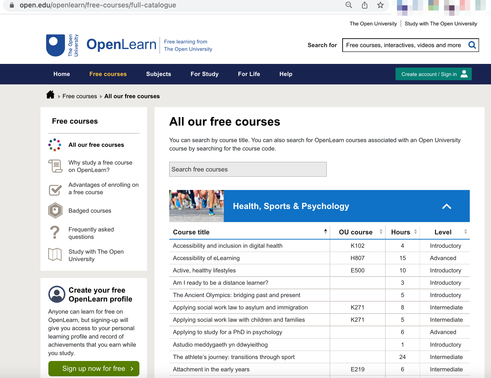

Scraping OpenLearn
Contents
Scraping OpenLearn#
This section describes how we can obtain a list of free OpenLearn units and construct a database that provides a full-text search over the unit names and originating course codes for those units. It also demonstrates how we can populate the database with copies of the OU-XML documents associated with those units and trivially query those documents as parsed XML documents using XPATH expressions. Examples are also given of how we can download and inspect zipped HTML bundles associated with free OpenLearn units, extract “contentful” image files into a database, and then retrieve and preview those images.
Getting a List of OpenLearn Units#
In previous years, OpenLearn used to publish an OPML feed that list all the units available on OpenLearn. The feed included the unit name, the module code for the original OU module from which the OpenLearn unit was derived, and a link to unit homepage on OpenLearn.
That feed is no longer available, but a single HTML page listing all the free units is still available at https://www.open.edu/openlearn/free-courses/full-catalogue

The units are listed within an HTML table, one unit per row, with the following structure:
<table>
...
<tr class="even">
<td class="views-field views-field-title active views-align-left title"
data-sort-value="visions of protest: graffiti">
<a href="https://www.open.edu/openlearn/history-the-arts/visions-protest-graffiti/content-section-0">Visions of protest: graffiti</a>
<span class="hidden"> Y031</span>
</td>
<td class="views-field views-field-field-ou-course views-align-center
field_ou-course" data-sort-value="Y031">
Y031
</td>
<td class="views-field views-field-field-duration views-align-center field_duration"
data-sort-value="8">
8
</td>
<td class="views-field views-field-field-educational-level views-align-left field_educational_level"
data-sort-value="Introductory">
Introductory
</td>
</tr>
...
</table>
Scraping the List of Free OpenLearn Units#
From the HTML table that lists all the free units available on OpenLearn, we can grab a list of the unit names, duration, level, original OU module and the OpenLearn unit URL.
We can also generate candidate URLs for the OU-XML and HTML zip downloads. These URLs are conventionally defined, but the resources are not necessarily published there. Having generated the URL, we can make a simple HTTP/HEAD request to see whether a resource is actually available at the URL (if the resource is available, we get a 200/OK message; if the resource is not available, we get a 404/Page not found).
# The requests package provides a range of utilities for
# making http calls, retrieving html pages etc
import requests
# If appropriate, we can cache http requests made using the requests package
import requests_cache
requests_cache.install_cache('openlearn_cache')
# Suspend with with requests_cache.disabled():
# The BeuatifulSoup package provides a range of tools for parsing
# HTML documents and scraping elements from them
from bs4 import BeautifulSoup
# We can use the tqdm package to provide progress bar indicators
# that allow us to keep track of the state of progress of a scrape
# of multiple pages
from tqdm.notebook import tqdm
Our scrape begins by grabbing the HTML page for the free unit catalogue and extracting the table that contains the unit listings:
# URL for the OpenLearn full catalogue of free units
srcUrl='https://www.open.edu/openlearn/free-courses/full-catalogue'
# Grab the HTML page
html = requests.get(srcUrl).content
# Creating a soup object (a navigable tree element)
soup = BeautifulSoup(html, 'html.parser')
# The table containing the listing is found within a div element
# with a particular, unique id
table = soup.find("div", {"id": "expander_content_11"}).find("table")
For each row in the table, except from the header row, we can extract the OpenLearn unit name and homepage URL, and the level, anticipated duration, and parent OU module code, if available. We can also derive conventional URLs for the OU-XML and HTML zip downloads, and make HTTP/HEAD requests to poll to see whether those assets actually exist at the conventional location.
# We're going to build up a list of dicts, one dict per unit
units = []
# The first row of the table is a header row
# so we can skip it
for row in tqdm(table.find_all("tr")[1:]):
# Get the url for each OpenLearn unit homepage
url = xmlurl = htmlurl = row.find("a").get("href")
# Get the unit name, parent OU module code, level and time allocation
name = row.find("a").text.strip()
code = row.find("span", {"class":"hidden"}).text.strip()
level = row.find("tx", {"class":"field_educational_level"})
duration = row.find("td", {"class":"field_duration"})
# Simple cleaning
level = level.text.strip() if level else level
duration = duration.text.strip() if duration else duration
# Do a simple header check to see if the ou-xml and html downloads
# are available at the conventional location
# We could look at the full homepage for download element links
# but that means actually loading each unit page, rather than just
# performing a header check
for stub in ["content-section-overview", "content-section-0" ]:
xmlurl = xmlurl.replace(stub, "altformat-ouxml")
htmlurl = htmlurl.replace(stub, "altformat-html")
xmlurl = xmlurl if "altformat-ouxml" in xmlurl and requests.head(xmlurl).status_code==200 else None
htmlurl = htmlurl if "altformat-html" in htmlurl and requests.head(htmlurl).status_code==200 else None
# Build up a list of dicts, one dict per unit on OpenLearn
units.append({"name": name,
"url": url,
"code": code,
"level": level,
"duration": int(duration),
"xmlurl": xmlurl,
"htmlurl": htmlurl
}
)
Preview the results of the scrape:
units[:3]
[{'name': 'A brief history of communication: hieroglyphics to emojis',
'url': 'https://www.open.edu/openlearn/languages/a-brief-history-communication-hieroglyphics-emojis/content-section-0',
'code': 'L101',
'level': None,
'duration': 5,
'xmlurl': 'https://www.open.edu/openlearn/languages/a-brief-history-communication-hieroglyphics-emojis/altformat-ouxml',
'htmlurl': 'https://www.open.edu/openlearn/languages/a-brief-history-communication-hieroglyphics-emojis/altformat-html'},
{'name': 'Academi Arian MSE',
'url': 'https://www.open.edu/openlearn/money-business/academi-arian-mse/content-section-overview',
'code': '',
'level': None,
'duration': 12,
'xmlurl': None,
'htmlurl': None},
{'name': 'Accessibility of eLearning',
'url': 'https://www.open.edu/openlearn/education-development/education-careers/accessibility-elearning/content-section-0',
'code': 'H807',
'level': None,
'duration': 15,
'xmlurl': 'https://www.open.edu/openlearn/education-development/education-careers/accessibility-elearning/altformat-ouxml',
'htmlurl': 'https://www.open.edu/openlearn/education-development/education-careers/accessibility-elearning/altformat-html'}]
We can add the list of units to a simple database table using the file based SQLite database.
# The sqlite_utils package provides a wide range of tools
# that support working with SQLite databases
from sqlite_utils import Database
# The database will be saved to a file
dbname = "all_openlean_xml.db"
# If necessary, provide a clean start
#!rm -f $dbname
# Create a database connection
# This creates the database file if it does not already exist
# otherwise we connect to a pre-existing database file
db = Database(dbname)
We can create a database table structure on the fly simply by inserting documents into it, or we can create a database table schema in advance. We can also create a secondary table that supports full-text search and that will be dynamically updated whenever we add a record to the table we want to provide full-text search over.
# Create a new table reference (units)
all_units = db["units"]
# Clear the table to give us a fresh start
# Setting ignore=True prevents an error if the table does not exist
all_units.drop(ignore=True)
# Define the table structure
all_units.create({
"code": int,
"name": str,
"level": str,
"duration": int,
"url": str,
"xmlurl": str,
"htmlurl": str,
"id": str
}, pk=("id"))
# Ideally, we would take the id as a unique ID from inside
# an OU-XML document. Alternatively, we might generate one,
# for example as an md5 hasf of unique (name, code) pairs.
# We can improve search over the table by supporting full-text search.
# This involves the creation of a secondary table with a full-text search
# index provided over one or more specified columns.
# The full-text search table is automatically updated whenever one or more
# items are added to the table with which the search index is associated.
db[f"{all_units.name}_fts"].drop(ignore=True)
# If we add the id to the index, we can trivially reference into the
# table from the full-text search result.
# The id should ideally not be anything you are likley to search on...
all_units.enable_fts(["name", "code", "id"], create_triggers=True)
<Table units (code, name, level, duration, url, xmlurl, htmlurl, id)>
Let’s create a simple function to create a unique identifier for each of our units:
import hashlib
def create_id(records, id_field="id", fields=["code", "name"]):
"""Create a key from the specified fields."""
fields = [fields] if isinstance(fields, str) else fields
for record in records:
key = "-".join([record[k] for k in fields ])
# We could check there is no collision on the id key
record[id_field] = hashlib.sha1(key.encode(encoding='UTF-8')).hexdigest()
# The dict is updated directly so we have no return value
We can now add our list of units to the units table in the database (the full-text search table will be automatically updated):
create_id(units)
units[:1]
[{'name': 'A brief history of communication: hieroglyphics to emojis',
'url': 'https://www.open.edu/openlearn/languages/a-brief-history-communication-hieroglyphics-emojis/content-section-0',
'code': 'L101',
'level': None,
'duration': 5,
'xmlurl': 'https://www.open.edu/openlearn/languages/a-brief-history-communication-hieroglyphics-emojis/altformat-ouxml',
'htmlurl': 'https://www.open.edu/openlearn/languages/a-brief-history-communication-hieroglyphics-emojis/altformat-html',
'id': '1f194525072f4358f7639c471ee5289665d50a3f'}]
all_units.insert_all(units)
<Table units (code, name, level, duration, url, xmlurl, htmlurl, id)>
Let’s try a test query, pulling the results back into a pandas dataframe for convenience:
import pandas as pd
pd.read_sql("SELECT * FROM units LIMIT 3", con=db.conn)
| code | name | level | duration | url | xmlurl | htmlurl | id | |
|---|---|---|---|---|---|---|---|---|
| 0 | L101 | A brief history of communication: hieroglyphic... | None | 5 | https://www.open.edu/openlearn/languages/a-bri... | https://www.open.edu/openlearn/languages/a-bri... | https://www.open.edu/openlearn/languages/a-bri... | 1f194525072f4358f7639c471ee5289665d50a3f |
| 1 | Academi Arian MSE | None | 12 | https://www.open.edu/openlearn/money-business/... | None | None | 08e64f95154b120c346a169c820a12f8ce17a182 | |
| 2 | H807 | Accessibility of eLearning | None | 15 | https://www.open.edu/openlearn/education-devel... | https://www.open.edu/openlearn/education-devel... | https://www.open.edu/openlearn/education-devel... | 78aec27976cb7d1ce356bf0eda6e8fb66ea532e9 |
We can also try a full-text search:
# full-text search term(s)
# This may include boolean search operators
q = "history communication OR H807"
# Construct a query onto the full-text search index
_q = f"""
SELECT * FROM units_fts WHERE units_fts MATCH {db.quote(q)} ;
"""
pd.read_sql(_q, con=db.conn)
| name | code | id | |
|---|---|---|---|
| 0 | A brief history of communication: hieroglyphic... | L101 | 1f194525072f4358f7639c471ee5289665d50a3f |
| 1 | Accessibility of eLearning | H807 | 78aec27976cb7d1ce356bf0eda6e8fb66ea532e9 |
Building a Database of OU-XML Documents#
From the list of free units on OpenLearn, we constructed the URL for the OU-XML download associated with the unit and polled the OpenLearn website to check whether the resource exisited. Only OU-XML URLs that refer to an actually downloadable resource were then added to our units list, and to the database.
We can now create a futher table into which we will insert the OU-XML document (where available) associated with each OpenLearn unit.
If the units list is not available, we could query the units database table for units where the OU-XML URL exists, and then use that list to download the referenced OU-XML resources and add them to our database.
To support discovery, we can also make the XML document full-text searchable. Whilst this means the index will be cluttered with XML tags and tags conjoined with words they abut, most of the content will be indexed appropriately.
all_xml_tbl = db["xml"]
all_xml_tbl.drop(ignore=True)
all_xml_tbl.create({
"code": int,
"name": str,
"xml": str,
"id": str
}, pk=("id"), if_not_exists=True)
db[f"{all_xml_tbl.name}_fts"].drop(ignore=True)
all_xml_tbl.enable_fts(["xml", "id"], create_triggers=True)
<Table xml (code, name, xml, id)>
Let’s grab all the files, again using a tqdm progress bar to help us keep track of how much progress we have made.
To optimise things a little, only try to grab units where we know there is an OU-XML resource available.
[u for u in units if u["xmlurl"]]
[{'name': 'A brief history of communication: hieroglyphics to emojis',
'url': 'https://www.open.edu/openlearn/languages/a-brief-history-communication-hieroglyphics-emojis/content-section-0',
'code': 'L101',
'level': None,
'duration': 5,
'xmlurl': 'https://www.open.edu/openlearn/languages/a-brief-history-communication-hieroglyphics-emojis/altformat-ouxml',
'htmlurl': 'https://www.open.edu/openlearn/languages/a-brief-history-communication-hieroglyphics-emojis/altformat-html',
'id': '1f194525072f4358f7639c471ee5289665d50a3f'},
{'name': 'Accessibility of eLearning',
'url': 'https://www.open.edu/openlearn/education-development/education-careers/accessibility-elearning/content-section-0',
'code': 'H807',
'level': None,
'duration': 15,
'xmlurl': 'https://www.open.edu/openlearn/education-development/education-careers/accessibility-elearning/altformat-ouxml',
'htmlurl': 'https://www.open.edu/openlearn/education-development/education-careers/accessibility-elearning/altformat-html',
'id': '78aec27976cb7d1ce356bf0eda6e8fb66ea532e9'},
{'name': 'Addysg gynhwysol: deall yr hyn a olygwn (Cymru)',
'url': 'https://www.open.edu/openlearn/education-development/education-careers/addysg-gynhwysol-deall-yr-hyn-olygwn-cymru/content-section-overview',
'code': '',
'level': None,
'duration': 5,
'xmlurl': 'https://www.open.edu/openlearn/education-development/education-careers/addysg-gynhwysol-deall-yr-hyn-olygwn-cymru/altformat-ouxml',
'htmlurl': 'https://www.open.edu/openlearn/education-development/education-careers/addysg-gynhwysol-deall-yr-hyn-olygwn-cymru/altformat-html',
'id': '394a675903e951ecef13496f1dc59769b300d170'},
{'name': 'Advanced French: At the science museum in Paris',
'url': 'https://www.open.edu/openlearn/languages/french/advanced-french-at-the-science-museum-paris/content-section-0',
'code': 'L310',
'level': None,
'duration': 15,
'xmlurl': 'https://www.open.edu/openlearn/languages/french/advanced-french-at-the-science-museum-paris/altformat-ouxml',
'htmlurl': 'https://www.open.edu/openlearn/languages/french/advanced-french-at-the-science-museum-paris/altformat-html',
'id': '39ca6564110fc6115e7be7fc1bae9cc0752ab5ea'},
{'name': 'Advanced German: Language, culture and history',
'url': 'https://www.open.edu/openlearn/languages/german/advanced-german-language-culture-and-history/content-section-0',
'code': 'L313',
'level': None,
'duration': 12,
'xmlurl': 'https://www.open.edu/openlearn/languages/german/advanced-german-language-culture-and-history/altformat-ouxml',
'htmlurl': 'https://www.open.edu/openlearn/languages/german/advanced-german-language-culture-and-history/altformat-html',
'id': '6c9b9ea679ca4aabd49c59e389429a2d893d7514'},
{'name': 'Advanced German: Regional landscapes',
'url': 'https://www.open.edu/openlearn/languages/german/advanced-german-regional-landscapes/content-section-0',
'code': 'L313',
'level': None,
'duration': 15,
'xmlurl': 'https://www.open.edu/openlearn/languages/german/advanced-german-regional-landscapes/altformat-ouxml',
'htmlurl': 'https://www.open.edu/openlearn/languages/german/advanced-german-regional-landscapes/altformat-html',
'id': '3bfeeef77b93833a882b7e58c6c9e463b0f01878'},
{'name': 'Advanced Spanish: Art in Buenos Aires',
'url': 'https://www.open.edu/openlearn/languages/spanish/advanced-spanish-art-buenos-aires/content-section-0',
'code': 'L314',
'level': None,
'duration': 4,
'xmlurl': 'https://www.open.edu/openlearn/languages/spanish/advanced-spanish-art-buenos-aires/altformat-ouxml',
'htmlurl': 'https://www.open.edu/openlearn/languages/spanish/advanced-spanish-art-buenos-aires/altformat-html',
'id': 'b04b3eb742b8e0adc9e0b62789e97a0996d0ccb6'},
{'name': 'Advanced Spanish: Arts and crafts',
'url': 'https://www.open.edu/openlearn/languages/spanish/advanced-spanish-arts-and-crafts/content-section-0',
'code': 'L314',
'level': None,
'duration': 12,
'xmlurl': 'https://www.open.edu/openlearn/languages/spanish/advanced-spanish-arts-and-crafts/altformat-ouxml',
'htmlurl': 'https://www.open.edu/openlearn/languages/spanish/advanced-spanish-arts-and-crafts/altformat-html',
'id': '139f0bcd7e3fda8fbe138f81d253546bb50b672e'},
{'name': 'Advanced Spanish: Language in context',
'url': 'https://www.open.edu/openlearn/languages/spanish/advanced-spanish-language-context/content-section-0',
'code': 'L314',
'level': None,
'duration': 4,
'xmlurl': 'https://www.open.edu/openlearn/languages/spanish/advanced-spanish-language-context/altformat-ouxml',
'htmlurl': 'https://www.open.edu/openlearn/languages/spanish/advanced-spanish-language-context/altformat-html',
'id': 'ce4967b0144a3bf0c0a9dea44186984f09bf0a1d'},
{'name': 'Advanced Spanish: Protest song',
'url': 'https://www.open.edu/openlearn/languages/spanish/advanced-spanish-protest-song/content-section-0',
'code': 'L314',
'level': None,
'duration': 4,
'xmlurl': 'https://www.open.edu/openlearn/languages/spanish/advanced-spanish-protest-song/altformat-ouxml',
'htmlurl': 'https://www.open.edu/openlearn/languages/spanish/advanced-spanish-protest-song/altformat-html',
'id': '3c7d27258e3c209f19f09a459d223ca875523a10'},
{'name': 'A global dimension to science education in schools',
'url': 'https://www.open.edu/openlearn/education-development/a-global-dimension-science-education-schools/content-section-0',
'code': '',
'level': None,
'duration': 8,
'xmlurl': 'https://www.open.edu/openlearn/education-development/a-global-dimension-science-education-schools/altformat-ouxml',
'htmlurl': 'https://www.open.edu/openlearn/education-development/a-global-dimension-science-education-schools/altformat-html',
'id': '3cf671ea769ee5709c036678a5c6441a66c2d218'},
{'name': 'All my own work: exploring academic integrity',
'url': 'https://www.open.edu/openlearn/education-development/all-my-own-work-exploring-academic-integrity/content-section-overview',
'code': '',
'level': None,
'duration': 6,
'xmlurl': 'https://www.open.edu/openlearn/education-development/all-my-own-work-exploring-academic-integrity/altformat-ouxml',
'htmlurl': 'https://www.open.edu/openlearn/education-development/all-my-own-work-exploring-academic-integrity/altformat-html',
'id': '6c5ba9c60fa29f546a71ba94565a6f62f1eae0db'},
{'name': 'A mentoring mindset (Meddylfryd mentora)',
'url': 'https://www.open.edu/openlearn/education-development/education-careers/a-mentoring-mindset-meddylfryd-mentora/content-section-overview',
'code': '',
'level': None,
'duration': 10,
'xmlurl': 'https://www.open.edu/openlearn/education-development/education-careers/a-mentoring-mindset-meddylfryd-mentora/altformat-ouxml',
'htmlurl': 'https://www.open.edu/openlearn/education-development/education-careers/a-mentoring-mindset-meddylfryd-mentora/altformat-html',
'id': 'b4721c12a59890789bf7607e78e6ead4383a9d68'},
{'name': 'Am I ready to be a distance learner?',
'url': 'https://www.open.edu/openlearn/education-development/am-i-ready-be-distance-learner/content-section-0',
'code': '',
'level': None,
'duration': 3,
'xmlurl': 'https://www.open.edu/openlearn/education-development/am-i-ready-be-distance-learner/altformat-ouxml',
'htmlurl': 'https://www.open.edu/openlearn/education-development/am-i-ready-be-distance-learner/altformat-html',
'id': '1fbba08771facfffb560831cdc1a8c110de1a0cc'},
{'name': 'An education in Religion and Worldviews',
'url': 'https://www.open.edu/openlearn/history-the-arts/an-education-religion-and-worldviews/content-section-0',
'code': '',
'level': None,
'duration': 3,
'xmlurl': 'https://www.open.edu/openlearn/history-the-arts/an-education-religion-and-worldviews/altformat-ouxml',
'htmlurl': 'https://www.open.edu/openlearn/history-the-arts/an-education-religion-and-worldviews/altformat-html',
'id': '5121bc45ed2f783c1d35f4ea1d32e4d3ed8beda4'},
{'name': 'An introduction to complex numbers',
'url': 'https://www.open.edu/openlearn/science-maths-technology/mathematics-statistics/an-introduction-complex-numbers/content-section-0',
'code': 'M337',
'level': None,
'duration': 16,
'xmlurl': 'https://www.open.edu/openlearn/science-maths-technology/mathematics-statistics/an-introduction-complex-numbers/altformat-ouxml',
'htmlurl': 'https://www.open.edu/openlearn/science-maths-technology/mathematics-statistics/an-introduction-complex-numbers/altformat-html',
'id': '9a68ece4d2afe7f6cc751f0ef09d5eb39cc08ccd'},
{'name': 'An introduction to computers and computer systems',
'url': 'https://www.open.edu/openlearn/science-maths-technology/an-introduction-computers-and-computer-systems/content-section-overview',
'code': '',
'level': None,
'duration': 16,
'xmlurl': 'https://www.open.edu/openlearn/science-maths-technology/an-introduction-computers-and-computer-systems/altformat-ouxml',
'htmlurl': 'https://www.open.edu/openlearn/science-maths-technology/an-introduction-computers-and-computer-systems/altformat-html',
'id': 'f98b62d217ec26786570fe28de81c4e885fb6661'},
{'name': 'An introduction to crime and criminology',
'url': 'https://www.open.edu/openlearn/society-politics-law/an-introduction-crime-and-criminology/content-section-0',
'code': 'DD105',
'level': None,
'duration': 6,
'xmlurl': 'https://www.open.edu/openlearn/society-politics-law/an-introduction-crime-and-criminology/altformat-ouxml',
'htmlurl': 'https://www.open.edu/openlearn/society-politics-law/an-introduction-crime-and-criminology/altformat-html',
'id': 'd779a16ff2b8423ba271a188a57ffd839c835ef0'},
{'name': 'An introduction to design engineering',
'url': 'https://www.open.edu/openlearn/science-maths-technology/engineering-technology/an-introduction-design-engineering/content-section-0',
'code': 'T192',
'level': None,
'duration': 10,
'xmlurl': 'https://www.open.edu/openlearn/science-maths-technology/engineering-technology/an-introduction-design-engineering/altformat-ouxml',
'htmlurl': 'https://www.open.edu/openlearn/science-maths-technology/engineering-technology/an-introduction-design-engineering/altformat-html',
'id': '4dcb245aa29f8f8d303dbeb15bd2708ace2bdd80'},
{'name': 'An introduction to electronics',
'url': 'https://www.open.edu/openlearn/science-maths-technology/an-introduction-electronics/content-section-0',
'code': 'T212',
'level': None,
'duration': 10,
'xmlurl': 'https://www.open.edu/openlearn/science-maths-technology/an-introduction-electronics/altformat-ouxml',
'htmlurl': 'https://www.open.edu/openlearn/science-maths-technology/an-introduction-electronics/altformat-html',
'id': 'e70841f12a908401ab9e6a69923bdb684928c888'},
{'name': 'An introduction to geology',
'url': 'https://www.open.edu/openlearn/science-maths-technology/an-introduction-geology/content-section-overview',
'code': '',
'level': None,
'duration': 12,
'xmlurl': 'https://www.open.edu/openlearn/science-maths-technology/an-introduction-geology/altformat-ouxml',
'htmlurl': 'https://www.open.edu/openlearn/science-maths-technology/an-introduction-geology/altformat-html',
'id': '4c8058285a4de53528f646ee2742dc8394fd4e38'},
{'name': 'An introduction to interaction design',
'url': 'https://www.open.edu/openlearn/science-maths-technology/an-introduction-interaction-design/content-section-0',
'code': 'TM356',
'level': None,
'duration': 10,
'xmlurl': 'https://www.open.edu/openlearn/science-maths-technology/an-introduction-interaction-design/altformat-ouxml',
'htmlurl': 'https://www.open.edu/openlearn/science-maths-technology/an-introduction-interaction-design/altformat-html',
'id': '7cb81108c51dff5db9d5cf8803560a5a408c4c3b'},
{'name': 'An introduction to intercultural competence in the workplace',
'url': 'https://www.open.edu/openlearn/education-development/an-introduction-intercultural-competence-the-workplace/content-section-overview',
'code': 'LG004',
'level': None,
'duration': 6,
'xmlurl': 'https://www.open.edu/openlearn/education-development/an-introduction-intercultural-competence-the-workplace/altformat-ouxml',
'htmlurl': 'https://www.open.edu/openlearn/education-development/an-introduction-intercultural-competence-the-workplace/altformat-html',
'id': '8db4b40c05090e0cd9eff2178cf8ea361b94016c'},
{'name': 'An introduction to minerals and rocks under the microscope',
'url': 'https://www.open.edu/openlearn/science-maths-technology/an-introduction-minerals-and-rocks-under-the-microscope/content-section-0',
'code': 'S276',
'level': None,
'duration': 8,
'xmlurl': 'https://www.open.edu/openlearn/science-maths-technology/an-introduction-minerals-and-rocks-under-the-microscope/altformat-ouxml',
'htmlurl': 'https://www.open.edu/openlearn/science-maths-technology/an-introduction-minerals-and-rocks-under-the-microscope/altformat-html',
'id': '6bff78840be5165329dda278418bbbd54c909047'},
{'name': 'An introduction to music theory',
'url': 'https://www.open.edu/openlearn/history-the-arts/music/an-introduction-music-theory/content-section-0',
'code': 'A224',
'level': None,
'duration': 8,
'xmlurl': 'https://www.open.edu/openlearn/history-the-arts/music/an-introduction-music-theory/altformat-ouxml',
'htmlurl': 'https://www.open.edu/openlearn/history-the-arts/music/an-introduction-music-theory/altformat-html',
'id': '8618b916e6a85432c640833997d354de822617fb'},
{'name': 'An introduction to Open Educational Resources (OER)',
'url': 'https://www.open.edu/openlearn/education-development/an-introduction-open-educational-resources-oer/content-section-0',
'code': 'H800',
'level': None,
'duration': 6,
'xmlurl': 'https://www.open.edu/openlearn/education-development/an-introduction-open-educational-resources-oer/altformat-ouxml',
'htmlurl': 'https://www.open.edu/openlearn/education-development/an-introduction-open-educational-resources-oer/altformat-html',
'id': '68a7307c9e05dbc39179fdc633e2845e64ea2b85'},
{'name': 'Applying social work law to asylum and immigration',
'url': 'https://www.open.edu/openlearn/society-politics-law/applying-social-work-law-asylum-and-immigration/content-section-0',
'code': 'K271',
'level': None,
'duration': 8,
'xmlurl': 'https://www.open.edu/openlearn/society-politics-law/applying-social-work-law-asylum-and-immigration/altformat-ouxml',
'htmlurl': 'https://www.open.edu/openlearn/society-politics-law/applying-social-work-law-asylum-and-immigration/altformat-html',
'id': 'fc21cdadba90d7a4e692d06114f1e915fb0b995c'},
{'name': 'Approaches to software development',
'url': 'https://www.open.edu/openlearn/science-maths-technology/approaches-software-development/content-section-0',
'code': 'TM354',
'level': None,
'duration': 9,
'xmlurl': 'https://www.open.edu/openlearn/science-maths-technology/approaches-software-development/altformat-ouxml',
'htmlurl': 'https://www.open.edu/openlearn/science-maths-technology/approaches-software-development/altformat-html',
'id': 'df712301421963fa260772c01dbd196738083f8e'},
{'name': 'Approaching literature: reading Great Expectations',
'url': 'https://www.open.edu/openlearn/history-the-arts/literature/approaching-literature-reading-great-expectations/content-section-0',
'code': 'A210',
'level': None,
'duration': 15,
'xmlurl': 'https://www.open.edu/openlearn/history-the-arts/literature/approaching-literature-reading-great-expectations/altformat-ouxml',
'htmlurl': 'https://www.open.edu/openlearn/history-the-arts/literature/approaching-literature-reading-great-expectations/altformat-html',
'id': 'f4ba25645e4d853e984521799cb321925dbf0a07'},
{'name': 'Approaching plays',
'url': 'https://www.open.edu/openlearn/history-the-arts/literature/approaching-plays/content-section-0',
'code': 'A210',
'level': None,
'duration': 15,
'xmlurl': 'https://www.open.edu/openlearn/history-the-arts/literature/approaching-plays/altformat-ouxml',
'htmlurl': 'https://www.open.edu/openlearn/history-the-arts/literature/approaching-plays/altformat-html',
'id': '6a3ff37cfd1ffed0fe1e98c833db2dc0b0dd53c1'},
{'name': 'Approaching poetry',
'url': 'https://www.open.edu/openlearn/history-the-arts/literature/approaching-poetry/content-section-0',
'code': 'A210',
'level': None,
'duration': 20,
'xmlurl': 'https://www.open.edu/openlearn/history-the-arts/literature/approaching-poetry/altformat-ouxml',
'htmlurl': 'https://www.open.edu/openlearn/history-the-arts/literature/approaching-poetry/altformat-html',
'id': 'f1c3a270ee51d6c8829ac66ea69daeddb710ad7c'},
{'name': 'Approaching prose fiction',
'url': 'https://www.open.edu/openlearn/history-the-arts/literature/approaching-prose-fiction/content-section-0',
'code': 'A210',
'level': None,
'duration': 20,
'xmlurl': 'https://www.open.edu/openlearn/history-the-arts/literature/approaching-prose-fiction/altformat-ouxml',
'htmlurl': 'https://www.open.edu/openlearn/history-the-arts/literature/approaching-prose-fiction/altformat-html',
'id': 'b9cf57e067a7297a8b6cadb78e4e80e723924efa'},
{'name': 'Aquatic mammals',
'url': 'https://www.open.edu/openlearn/nature-environment/aquatic-mammals/content-section-0',
'code': 'S182',
'level': None,
'duration': 5,
'xmlurl': 'https://www.open.edu/openlearn/nature-environment/aquatic-mammals/altformat-ouxml',
'htmlurl': 'https://www.open.edu/openlearn/nature-environment/aquatic-mammals/altformat-html',
'id': 'a266d6f427769649f9861ebca1239251eb1f1778'},
{'name': 'Art and life in ancient Egypt',
'url': 'https://www.open.edu/openlearn/history-the-arts/art-and-life-ancient-egypt/content-section-overview',
'code': 'GA060',
'level': None,
'duration': 30,
'xmlurl': 'https://www.open.edu/openlearn/history-the-arts/art-and-life-ancient-egypt/altformat-ouxml',
'htmlurl': 'https://www.open.edu/openlearn/history-the-arts/art-and-life-ancient-egypt/altformat-html',
'id': 'df0a67eeda24c3e3f29f5d70c67b9cf218003929'},
{'name': 'Art and visual culture: medieval to modern',
'url': 'https://www.open.edu/openlearn/history-the-arts/art-and-visual-culture-medieval-modern/content-section-0',
'code': 'A226',
'level': None,
'duration': 10,
'xmlurl': 'https://www.open.edu/openlearn/history-the-arts/art-and-visual-culture-medieval-modern/altformat-ouxml',
'htmlurl': 'https://www.open.edu/openlearn/history-the-arts/art-and-visual-culture-medieval-modern/altformat-html',
'id': '255801bad17bfb25fbaa63a7d07d2069ff9a10db'},
{'name': 'Art in Renaissance Venice',
'url': 'https://www.open.edu/openlearn/history-the-arts/visual-art/art-renaissance-venice/content-section-0',
'code': 'AA315',
'level': None,
'duration': 6,
'xmlurl': 'https://www.open.edu/openlearn/history-the-arts/visual-art/art-renaissance-venice/altformat-ouxml',
'htmlurl': 'https://www.open.edu/openlearn/history-the-arts/visual-art/art-renaissance-venice/altformat-html',
'id': '5d12fb13f9ba7bcc3bb04d066220d6be5fbe8884'},
{'name': 'Assessing contemporary science',
'url': 'https://www.open.edu/openlearn/science-maths-technology/assessing-contemporary-science/content-section-0',
'code': 'S350',
'level': None,
'duration': 9,
'xmlurl': 'https://www.open.edu/openlearn/science-maths-technology/assessing-contemporary-science/altformat-ouxml',
'htmlurl': 'https://www.open.edu/openlearn/science-maths-technology/assessing-contemporary-science/altformat-html',
'id': '38d3ab2103a7b02260c1dd7cfa411f6dd2b596a8'},
{'name': 'Assessing risk in engineering, work and life',
'url': 'https://www.open.edu/openlearn/science-maths-technology/engineering-technology/assessing-risk-engineering-work-and-life/content-section-0',
'code': 'T193',
'level': None,
'duration': 10,
'xmlurl': 'https://www.open.edu/openlearn/science-maths-technology/engineering-technology/assessing-risk-engineering-work-and-life/altformat-ouxml',
'htmlurl': 'https://www.open.edu/openlearn/science-maths-technology/engineering-technology/assessing-risk-engineering-work-and-life/altformat-html',
'id': '11e5486d113eebd6c01126c9c65b91591c211b9b'},
{'name': 'Assessment in secondary geography',
'url': 'https://www.open.edu/openlearn/education-development/assessment-secondary-geography/content-section-0',
'code': 'EXG885',
'level': None,
'duration': 11,
'xmlurl': 'https://www.open.edu/openlearn/education-development/assessment-secondary-geography/altformat-ouxml',
'htmlurl': 'https://www.open.edu/openlearn/education-development/assessment-secondary-geography/altformat-html',
'id': '7a3892583c3b91e2f254f00c0190a6ca6e99f249'},
{'name': 'Assessment in secondary mathematics',
'url': 'https://www.open.edu/openlearn/education-development/education/assessment-secondary-mathematics/content-section-0',
'code': 'EXM885',
'level': None,
'duration': 11,
'xmlurl': 'https://www.open.edu/openlearn/education-development/education/assessment-secondary-mathematics/altformat-ouxml',
'htmlurl': 'https://www.open.edu/openlearn/education-development/education/assessment-secondary-mathematics/altformat-html',
'id': '082a6038bf169f70fc6043fa00f1420ac78b0184'},
{'name': 'Assessment in secondary modern foreign languages',
'url': 'https://www.open.edu/openlearn/education-development/assessment-secondary-modern-foreign-languages/content-section-0',
'code': 'EXL885',
'level': None,
'duration': 11,
'xmlurl': 'https://www.open.edu/openlearn/education-development/assessment-secondary-modern-foreign-languages/altformat-ouxml',
'htmlurl': 'https://www.open.edu/openlearn/education-development/assessment-secondary-modern-foreign-languages/altformat-html',
'id': 'c5d1ea2da88e3522bfd0ed21417a491af98db121'},
{'name': 'Assessment in secondary music',
'url': 'https://www.open.edu/openlearn/education-development/assessment-secondary-music/content-section-0',
'code': 'EXN885',
'level': None,
'duration': 11,
'xmlurl': 'https://www.open.edu/openlearn/education-development/assessment-secondary-music/altformat-ouxml',
'htmlurl': 'https://www.open.edu/openlearn/education-development/assessment-secondary-music/altformat-html',
'id': '14a157d1e8706ddb7664569a68e858fb1ffb44f0'},
{'name': 'Assessment in secondary science',
'url': 'https://www.open.edu/openlearn/education-development/assessment-secondary-science/content-section-0',
'code': 'EXA885',
'level': None,
'duration': 11,
'xmlurl': 'https://www.open.edu/openlearn/education-development/assessment-secondary-science/altformat-ouxml',
'htmlurl': 'https://www.open.edu/openlearn/education-development/assessment-secondary-science/altformat-html',
'id': '4d39f84ef4fad468d9dfee35bb4e891ef90334c7'},
{'name': 'Assistive technologies and online learning',
'url': 'https://www.open.edu/openlearn/education-development/assistive-technologies-and-online-learning/content-section-0',
'code': 'H810',
'level': None,
'duration': 8,
'xmlurl': 'https://www.open.edu/openlearn/education-development/assistive-technologies-and-online-learning/altformat-ouxml',
'htmlurl': 'https://www.open.edu/openlearn/education-development/assistive-technologies-and-online-learning/altformat-html',
'id': '819336b2089b30102e65e9fcfd32334659ecc1c1'},
{'name': 'Astudio meddygaeth yn ddwyieithog',
'url': 'https://www.open.edu/openlearn/health-sports-psychology/healthcare-careers/astudio-meddygaeth-yn-ddwyieithog/content-section-0',
'code': '',
'level': None,
'duration': 1,
'xmlurl': 'https://www.open.edu/openlearn/health-sports-psychology/healthcare-careers/astudio-meddygaeth-yn-ddwyieithog/altformat-ouxml',
'htmlurl': 'https://www.open.edu/openlearn/health-sports-psychology/healthcare-careers/astudio-meddygaeth-yn-ddwyieithog/altformat-html',
'id': 'e2ca398aef3c50bdc8f6b62362cd722d74ed5b6a'},
{'name': 'Astudio’r gwyddorau naturiol yn ddwyieithog',
'url': 'https://www.open.edu/openlearn/science-maths-technology/astudior-gwyddorau-naturiol-yn-ddwyieithog/content-section-0',
'code': '',
'level': None,
'duration': 1,
'xmlurl': 'https://www.open.edu/openlearn/science-maths-technology/astudior-gwyddorau-naturiol-yn-ddwyieithog/altformat-ouxml',
'htmlurl': 'https://www.open.edu/openlearn/science-maths-technology/astudior-gwyddorau-naturiol-yn-ddwyieithog/altformat-html',
'id': '23c2024ff33e470964ca4460d33aa570ae24dacc'},
{'name': 'Attention',
'url': 'https://www.open.edu/openlearn/society-politics-law/sociology/attention/content-section-0',
'code': 'DD303',
'level': None,
'duration': 10,
'xmlurl': 'https://www.open.edu/openlearn/society-politics-law/sociology/attention/altformat-ouxml',
'htmlurl': 'https://www.open.edu/openlearn/society-politics-law/sociology/attention/altformat-html',
'id': '9c6f63144aeaf290d5f07f0f8a13db4d80696822'},
{'name': 'Babylonian mathematics',
'url': 'https://www.open.edu/openlearn/science-maths-technology/mathematics-statistics/babylonian-mathematics/content-section-0',
'code': 'MA290',
'level': None,
'duration': 8,
'xmlurl': 'https://www.open.edu/openlearn/science-maths-technology/mathematics-statistics/babylonian-mathematics/altformat-ouxml',
'htmlurl': 'https://www.open.edu/openlearn/science-maths-technology/mathematics-statistics/babylonian-mathematics/altformat-html',
'id': 'bf58fabdd7b46192bb404557daf3161273abd9ef'},
{'name': 'Basic science: understanding experiments',
'url': 'https://www.open.edu/openlearn/science-maths-technology/basic-science-understanding-experiments/content-section-overview',
'code': '',
'level': None,
'duration': 12,
'xmlurl': 'https://www.open.edu/openlearn/science-maths-technology/basic-science-understanding-experiments/altformat-ouxml',
'htmlurl': 'https://www.open.edu/openlearn/science-maths-technology/basic-science-understanding-experiments/altformat-html',
'id': '8f6e58f77f7caa1efa7357ea826314b32a7c756c'},
{'name': 'Basic science: understanding numbers',
'url': 'https://www.open.edu/openlearn/science-maths-technology/basic-science-understanding-numbers/content-section-overview',
'code': '',
'level': None,
'duration': 12,
'xmlurl': 'https://www.open.edu/openlearn/science-maths-technology/basic-science-understanding-numbers/altformat-ouxml',
'htmlurl': 'https://www.open.edu/openlearn/science-maths-technology/basic-science-understanding-numbers/altformat-html',
'id': 'a6950cd13b8f1aafa9dc09ee521d5012c0426a02'},
{'name': 'Beginners’ Chinese: a taster course',
'url': 'https://www.open.edu/openlearn/languages/beginners-chinese-taster-course/content-section-0',
'code': '',
'level': None,
'duration': 4,
'xmlurl': 'https://www.open.edu/openlearn/languages/beginners-chinese-taster-course/altformat-ouxml',
'htmlurl': 'https://www.open.edu/openlearn/languages/beginners-chinese-taster-course/altformat-html',
'id': 'b78f244dea5b00ee2bc2dafe0f60fff320765811'},
{'name': 'Beginners’ French: A trip to Avignon',
'url': 'https://www.open.edu/openlearn/languages/french/beginners-french-a-trip-avignon/content-section-0',
'code': 'L192',
'level': None,
'duration': 15,
'xmlurl': 'https://www.open.edu/openlearn/languages/french/beginners-french-a-trip-avignon/altformat-ouxml',
'htmlurl': 'https://www.open.edu/openlearn/languages/french/beginners-french-a-trip-avignon/altformat-html',
'id': '1143c2ff9c55689bbc23137851f90ba712aa2f98'},
{'name': 'Beginners’ French: food and drink',
'url': 'https://www.open.edu/openlearn/languages/french/beginners-french-food-and-drink/content-section-0',
'code': 'L192',
'level': None,
'duration': 5,
'xmlurl': 'https://www.open.edu/openlearn/languages/french/beginners-french-food-and-drink/altformat-ouxml',
'htmlurl': 'https://www.open.edu/openlearn/languages/french/beginners-french-food-and-drink/altformat-html',
'id': 'a674c7214ea2ab08f4ae22b4ca86bf6d1deb32fe'},
{'name': 'Beginners’ German: food and drink',
'url': 'https://www.open.edu/openlearn/languages/beginners-german-food-and-drink/content-section-0',
'code': 'L193',
'level': None,
'duration': 6,
'xmlurl': 'https://www.open.edu/openlearn/languages/beginners-german-food-and-drink/altformat-ouxml',
'htmlurl': 'https://www.open.edu/openlearn/languages/beginners-german-food-and-drink/altformat-html',
'id': '38d0c0bd50567b49a4e298364b85477de4b91fa7'},
{'name': 'Beginners’ German: Places and people',
'url': 'https://www.open.edu/openlearn/languages/german/beginners-german-places-and-people/content-section-0',
'code': 'L193',
'level': None,
'duration': 5,
'xmlurl': 'https://www.open.edu/openlearn/languages/german/beginners-german-places-and-people/altformat-ouxml',
'htmlurl': 'https://www.open.edu/openlearn/languages/german/beginners-german-places-and-people/altformat-html',
'id': 'b87249f5423bc5aae86df4aca3791cf10862a2ed'},
{'name': 'Beginners’ Spanish: Getting around',
'url': 'https://www.open.edu/openlearn/languages/spanish/beginners-spanish-getting-around/content-section-0',
'code': 'L194',
'level': None,
'duration': 20,
'xmlurl': 'https://www.open.edu/openlearn/languages/spanish/beginners-spanish-getting-around/altformat-ouxml',
'htmlurl': 'https://www.open.edu/openlearn/languages/spanish/beginners-spanish-getting-around/altformat-html',
'id': '5090fec4d4dbe49e55ae4a3c3ab30dd3e3515f6f'},
{'name': 'Beginners’ Tamil: a taster course',
'url': 'https://www.open.edu/openlearn/languages/beginners-tamil-taster-course/content-section-0',
'code': '',
'level': None,
'duration': 4,
'xmlurl': 'https://www.open.edu/openlearn/languages/beginners-tamil-taster-course/altformat-ouxml',
'htmlurl': 'https://www.open.edu/openlearn/languages/beginners-tamil-taster-course/altformat-html',
'id': '68e4c9d2d191322ffa66e0206f20978998ed7c12'},
{'name': 'Being an OU student',
'url': 'https://www.open.edu/openlearn/education-development/being-ou-student/content-section-overview',
'code': '',
'level': None,
'duration': 12,
'xmlurl': 'https://www.open.edu/openlearn/education-development/being-ou-student/altformat-ouxml',
'htmlurl': 'https://www.open.edu/openlearn/education-development/being-ou-student/altformat-html',
'id': '3c017a68fc7509466dfa70013eabeb6d04afcb1d'},
{'name': 'Birth of a drug',
'url': 'https://www.open.edu/openlearn/science-maths-technology/chemistry/birth-drug/content-section-0',
'code': 'S344',
'level': None,
'duration': 4,
'xmlurl': 'https://www.open.edu/openlearn/science-maths-technology/chemistry/birth-drug/altformat-ouxml',
'htmlurl': 'https://www.open.edu/openlearn/science-maths-technology/chemistry/birth-drug/altformat-html',
'id': 'e7ef4de59738cdb5713d060c3ff4aa8994898805'},
{'name': 'Blood and the respiratory system',
'url': 'https://www.open.edu/openlearn/science-maths-technology/blood-and-the-respiratory-system/content-section-0',
'code': 'SK299',
'level': None,
'duration': 10,
'xmlurl': 'https://www.open.edu/openlearn/science-maths-technology/blood-and-the-respiratory-system/altformat-ouxml',
'htmlurl': 'https://www.open.edu/openlearn/science-maths-technology/blood-and-the-respiratory-system/altformat-html',
'id': '904a100e4d41cf1a696b547eec1b2f625fc5bd78'},
{'name': 'Building confidence in using online forums',
'url': 'https://www.open.edu/openlearn/education-development/building-confidence-using-online-forums/content-section-overview',
'code': '',
'level': None,
'duration': 8,
'xmlurl': 'https://www.open.edu/openlearn/education-development/building-confidence-using-online-forums/altformat-ouxml',
'htmlurl': 'https://www.open.edu/openlearn/education-development/building-confidence-using-online-forums/altformat-html',
'id': 'db7eeff5b71b2c97fcb1b3dbace387c7cf62abae'},
{'name': 'Building relationships with donors',
'url': 'https://www.open.edu/openlearn/money-business/business-strategy-studies/building-relationships-donors/content-section-0',
'code': 'B625',
'level': None,
'duration': 6,
'xmlurl': 'https://www.open.edu/openlearn/money-business/business-strategy-studies/building-relationships-donors/altformat-ouxml',
'htmlurl': 'https://www.open.edu/openlearn/money-business/business-strategy-studies/building-relationships-donors/altformat-html',
'id': '27014d6badb935e65ad56ac65aabaafd5a12430c'},
{'name': 'Business communication: writing a SWOT analysis',
'url': 'https://www.open.edu/openlearn/money-business/business-communication-writing-swot-analysis/content-section-0',
'code': 'LB170',
'level': None,
'duration': 8,
'xmlurl': 'https://www.open.edu/openlearn/money-business/business-communication-writing-swot-analysis/altformat-ouxml',
'htmlurl': 'https://www.open.edu/openlearn/money-business/business-communication-writing-swot-analysis/altformat-html',
'id': 'bf6a03f41fa093c14add0f783334c7b4a011bc3e'},
{'name': 'Business English: Making decisions',
'url': 'https://www.open.edu/openlearn/languages/english-language/business-english-making-decisions/content-section-0',
'code': 'L550',
'level': None,
'duration': 5,
'xmlurl': 'https://www.open.edu/openlearn/languages/english-language/business-english-making-decisions/altformat-ouxml',
'htmlurl': 'https://www.open.edu/openlearn/languages/english-language/business-english-making-decisions/altformat-html',
'id': 'f4d83c2ab4b3b0bb65dda3887293b71042c77399'},
{'name': 'Careers education and guidance',
'url': 'https://www.open.edu/openlearn/education-development/careers-education-and-guidance/content-section-0',
'code': '',
'level': None,
'duration': 8,
'xmlurl': 'https://www.open.edu/openlearn/education-development/careers-education-and-guidance/altformat-ouxml',
'htmlurl': 'https://www.open.edu/openlearn/education-development/careers-education-and-guidance/altformat-html',
'id': 'dcd4b6f3d282de8af4348316aa207f54cba1732a'},
{'name': 'Careers education and guidance (Chinese)',
'url': 'https://www.open.edu/openlearn/education-development/careers-education-and-guidance-chinese/content-section-0',
'code': '',
'level': None,
'duration': 8,
'xmlurl': 'https://www.open.edu/openlearn/education-development/careers-education-and-guidance-chinese/altformat-ouxml',
'htmlurl': 'https://www.open.edu/openlearn/education-development/careers-education-and-guidance-chinese/altformat-html',
'id': 'f67447d799487caf7d5501c3b35564d3e79a1012'},
{'name': 'Cefnogi datblygiad plant',
'url': 'https://www.open.edu/openlearn/education-development/childhood-youth/cefnogi-datblygiad-plant/content-section-overview',
'code': '',
'level': None,
'duration': 15,
'xmlurl': 'https://www.open.edu/openlearn/education-development/childhood-youth/cefnogi-datblygiad-plant/altformat-ouxml',
'htmlurl': 'https://www.open.edu/openlearn/education-development/childhood-youth/cefnogi-datblygiad-plant/altformat-html',
'id': '8c14768cd663e7fb297ee9d2c790295cf7854426'},
{'name': 'Census stories: bringing statistics to life in Milton Keynes',
'url': 'https://www.open.edu/openlearn/history-the-arts/religious-studies/census-stories-bringing-statistics-life-milton-keynes/content-section-0',
'code': '',
'level': None,
'duration': 2,
'xmlurl': 'https://www.open.edu/openlearn/history-the-arts/religious-studies/census-stories-bringing-statistics-life-milton-keynes/altformat-ouxml',
'htmlurl': 'https://www.open.edu/openlearn/history-the-arts/religious-studies/census-stories-bringing-statistics-life-milton-keynes/altformat-html',
'id': 'bb4eb3b1e819219f42a9ff265bb74b92e552ff91'},
{'name': 'Challenging ideas in mental health',
'url': 'https://www.open.edu/openlearn/health-sports-psychology/health/challenging-ideas-mental-health/content-section-0',
'code': 'K272',
'level': None,
'duration': 8,
'xmlurl': 'https://www.open.edu/openlearn/health-sports-psychology/health/challenging-ideas-mental-health/altformat-ouxml',
'htmlurl': 'https://www.open.edu/openlearn/health-sports-psychology/health/challenging-ideas-mental-health/altformat-html',
'id': 'e669b0cb8d6ceab970e38f0a1f58261c1be1b0e9'},
{'name': 'Changes in Science Education',
'url': 'https://www.open.edu/openlearn/education-development/education/changes-science-education/content-section-0',
'code': 'SEH806',
'level': None,
'duration': 20,
'xmlurl': 'https://www.open.edu/openlearn/education-development/education/changes-science-education/altformat-ouxml',
'htmlurl': 'https://www.open.edu/openlearn/education-development/education/changes-science-education/altformat-html',
'id': '35f731302d7b7aaa637b7adb30cf660a5a7c0108'},
{'name': 'Childhood in crisis?',
'url': 'https://www.open.edu/openlearn/education-development/childhood-youth/childhood-crisis/content-section-0',
'code': 'E212',
'level': None,
'duration': 6,
'xmlurl': 'https://www.open.edu/openlearn/education-development/childhood-youth/childhood-crisis/altformat-ouxml',
'htmlurl': 'https://www.open.edu/openlearn/education-development/childhood-youth/childhood-crisis/altformat-html',
'id': 'ef5290378a593aa12897ef119d6e125ca66d108c'},
{'name': 'Children and young people: food and food marketing',
'url': 'https://www.open.edu/openlearn/education-development/children-and-young-people-food-and-food-marketing/content-section-0',
'code': 'E808',
'level': None,
'duration': 8,
'xmlurl': 'https://www.open.edu/openlearn/education-development/children-and-young-people-food-and-food-marketing/altformat-ouxml',
'htmlurl': 'https://www.open.edu/openlearn/education-development/children-and-young-people-food-and-food-marketing/altformat-html',
'id': '68c93f4bc7f518db77c26a3dcb4f53226d9db0ac'},
{'name': 'Children and young people’s participation',
'url': 'https://www.open.edu/openlearn/education-development/childhood-youth/children-and-young-peoples-participation/content-section-0',
'code': 'E807',
'level': None,
'duration': 12,
'xmlurl': 'https://www.open.edu/openlearn/education-development/childhood-youth/children-and-young-peoples-participation/altformat-ouxml',
'htmlurl': 'https://www.open.edu/openlearn/education-development/childhood-youth/children-and-young-peoples-participation/altformat-html',
'id': '88c45b7b60974de3a3a26b4d3a0955ab6beba3ac'},
{'name': 'Children’s experiences with digital technologies',
'url': 'https://www.open.edu/openlearn/education-development/childrens-experiences-digital-technologies/content-section-0',
'code': 'E232',
'level': None,
'duration': 8,
'xmlurl': 'https://www.open.edu/openlearn/education-development/childrens-experiences-digital-technologies/altformat-ouxml',
'htmlurl': 'https://www.open.edu/openlearn/education-development/childrens-experiences-digital-technologies/altformat-html',
'id': 'c2904ea94b123d00710b118dcfdf4c0ac27a164a'},
{'name': 'Children’s perspectives on play',
'url': 'https://www.open.edu/openlearn/education-development/childrens-perspectives-on-play/content-section-0',
'code': 'E110',
'level': None,
'duration': 5,
'xmlurl': 'https://www.open.edu/openlearn/education-development/childrens-perspectives-on-play/altformat-ouxml',
'htmlurl': 'https://www.open.edu/openlearn/education-development/childrens-perspectives-on-play/altformat-html',
'id': '6c1f4f14c10711347e91a41721e7cb6695492f5a'},
{'name': 'Climate change',
'url': 'https://www.open.edu/openlearn/nature-environment/climate-change/content-section-0',
'code': 'S250',
'level': None,
'duration': 18,
'xmlurl': 'https://www.open.edu/openlearn/nature-environment/climate-change/altformat-ouxml',
'htmlurl': 'https://www.open.edu/openlearn/nature-environment/climate-change/altformat-html',
'id': '4526ce52537bcfd0fa6bae90e37666b43a099c4d'},
{'name': 'Climate justice for the next generation',
'url': 'https://www.open.edu/openlearn/education-development/climate-justice-the-next-generation/content-section-0',
'code': 'E232',
'level': None,
'duration': 7,
'xmlurl': 'https://www.open.edu/openlearn/education-development/climate-justice-the-next-generation/altformat-ouxml',
'htmlurl': 'https://www.open.edu/openlearn/education-development/climate-justice-the-next-generation/altformat-html',
'id': 'df0881ceb8d3ce550537715f1cb918563962a381'},
{'name': 'Collaborative problem solving for community safety',
'url': 'https://www.open.edu/openlearn/money-business/collaborative-problem-solving-community-safety/content-section-overview',
'code': '',
'level': None,
'duration': 16,
'xmlurl': 'https://www.open.edu/openlearn/money-business/collaborative-problem-solving-community-safety/altformat-ouxml',
'htmlurl': 'https://www.open.edu/openlearn/money-business/collaborative-problem-solving-community-safety/altformat-html',
'id': '7bec091e84540497af4f075b2230c841f3d8c655'},
{'name': 'Commercial awareness',
'url': 'https://www.open.edu/openlearn/money-business/leadership-management/commercial-awareness/content-section-0',
'code': 'BG020',
'level': None,
'duration': 2,
'xmlurl': 'https://www.open.edu/openlearn/money-business/leadership-management/commercial-awareness/altformat-ouxml',
'htmlurl': 'https://www.open.edu/openlearn/money-business/leadership-management/commercial-awareness/altformat-html',
'id': 'c4c1f6e05f95281c8f4b33143972b270c036cabc'},
{'name': 'Comparing stars',
'url': 'https://www.open.edu/openlearn/science-maths-technology/comparing-stars/content-section-0',
'code': 'S282',
'level': None,
'duration': 16,
'xmlurl': 'https://www.open.edu/openlearn/science-maths-technology/comparing-stars/altformat-ouxml',
'htmlurl': 'https://www.open.edu/openlearn/science-maths-technology/comparing-stars/altformat-html',
'id': 'f0dbb9070805612ecb17e7e9874b6a0094d540a8'},
{'name': 'Continuity and learning',
'url': 'https://www.open.edu/openlearn/education-development/continuity-and-learning/content-section-0',
'code': 'E101',
'level': None,
'duration': 12,
'xmlurl': 'https://www.open.edu/openlearn/education-development/continuity-and-learning/altformat-ouxml',
'htmlurl': 'https://www.open.edu/openlearn/education-development/continuity-and-learning/altformat-html',
'id': '45cc38d698fc24dfc659092634be772380a53f86'},
{'name': 'Conversations and interviews',
'url': 'https://www.open.edu/openlearn/money-business/business-strategy-studies/conversations-and-interviews/content-section-0',
'code': 'B204',
'level': None,
'duration': 5,
'xmlurl': 'https://www.open.edu/openlearn/money-business/business-strategy-studies/conversations-and-interviews/altformat-ouxml',
'htmlurl': 'https://www.open.edu/openlearn/money-business/business-strategy-studies/conversations-and-interviews/altformat-html',
'id': '86db627019e4284900479a9f0db4d74e2ee82bb5'},
{'name': 'Creating open educational resources',
'url': 'https://www.open.edu/openlearn/education-development/creating-open-educational-resources/content-section-0',
'code': '',
'level': None,
'duration': 15,
'xmlurl': 'https://www.open.edu/openlearn/education-development/creating-open-educational-resources/altformat-ouxml',
'htmlurl': 'https://www.open.edu/openlearn/education-development/creating-open-educational-resources/altformat-html',
'id': 'ee091529fadce34c37619f71a82fcbcae6cd0ca8'},
{'name': 'Creativity, community and ICT',
'url': 'https://www.open.edu/openlearn/education-development/creativity-community-and-ict/content-section-0',
'code': '',
'level': None,
'duration': 20,
'xmlurl': 'https://www.open.edu/openlearn/education-development/creativity-community-and-ict/altformat-ouxml',
'htmlurl': 'https://www.open.edu/openlearn/education-development/creativity-community-and-ict/altformat-html',
'id': 'e34189a49af78d75ff3c7e688d839b8320a46ab9'},
{'name': 'Critical criminology and the social sciences',
'url': 'https://www.open.edu/openlearn/society-politics-law/critical-criminology-and-the-social-sciences/content-section-0',
'code': 'DD212',
'level': None,
'duration': 6,
'xmlurl': 'https://www.open.edu/openlearn/society-politics-law/critical-criminology-and-the-social-sciences/altformat-ouxml',
'htmlurl': 'https://www.open.edu/openlearn/society-politics-law/critical-criminology-and-the-social-sciences/altformat-html',
'id': 'cd6064d6435126a3e5efc70eb0b6bb5645888adc'},
{'name': 'Critically exploring psychology',
'url': 'https://www.open.edu/openlearn/health-sports-psychology/critically-exploring-psychology/content-section-0',
'code': 'D810',
'level': None,
'duration': 3,
'xmlurl': 'https://www.open.edu/openlearn/health-sports-psychology/critically-exploring-psychology/altformat-ouxml',
'htmlurl': 'https://www.open.edu/openlearn/health-sports-psychology/critically-exploring-psychology/altformat-html',
'id': '461b9db49499ffdbff9d1bdc02774f62e304bee5'},
{'name': 'Cyflwyniad i arweinyddiaeth i lywodraethwyr (Cymru)',
'url': 'https://www.open.edu/openlearn/education-development/education-careers/cyflwyniad-i-arweinyddiaeth-i-lywodraethwyr-cymru/content-section-overview',
'code': '',
'level': None,
'duration': 5,
'xmlurl': 'https://www.open.edu/openlearn/education-development/education-careers/cyflwyniad-i-arweinyddiaeth-i-lywodraethwyr-cymru/altformat-ouxml',
'htmlurl': 'https://www.open.edu/openlearn/education-development/education-careers/cyflwyniad-i-arweinyddiaeth-i-lywodraethwyr-cymru/altformat-html',
'id': '097ef7b34a4cb57d0a82b7a9d116f2a87e384acf'},
{'name': 'Cynllunio dyfodol gwell',
'url': 'https://www.open.edu/openlearn/education-development/education-careers/cynllunio-dyfodol-gwell/content-section-overview',
'code': '',
'level': None,
'duration': 15,
'xmlurl': 'https://www.open.edu/openlearn/education-development/education-careers/cynllunio-dyfodol-gwell/altformat-ouxml',
'htmlurl': 'https://www.open.edu/openlearn/education-development/education-careers/cynllunio-dyfodol-gwell/altformat-html',
'id': '53d9b3dd9e3d0cf1511763192d867cf9504c5f9f'},
{'name': 'Cynorthwywyr addysgu: Cymorth ar waith',
'url': 'https://www.open.edu/openlearn/education-development/education-careers/cynorthwywyr-addysgu-cymorth-ar-waith/content-section-0',
'code': 'E111',
'level': None,
'duration': 4,
'xmlurl': 'https://www.open.edu/openlearn/education-development/education-careers/cynorthwywyr-addysgu-cymorth-ar-waith/altformat-ouxml',
'htmlurl': 'https://www.open.edu/openlearn/education-development/education-careers/cynorthwywyr-addysgu-cymorth-ar-waith/altformat-html',
'id': '211f6aca8c83f73a7fcc96df0ac57a07087642c9'},
{'name': 'Dance skills',
'url': 'https://www.open.edu/openlearn/education-development/dance-skills/content-section-0',
'code': '',
'level': None,
'duration': 12,
'xmlurl': 'https://www.open.edu/openlearn/education-development/dance-skills/altformat-ouxml',
'htmlurl': 'https://www.open.edu/openlearn/education-development/dance-skills/altformat-html',
'id': '99fa4562bcf32619fc96601df390f1d9d7b597bb'},
{'name': 'Darllen a gwneud nodiadau (Reading and taking notes)',
'url': 'https://www.open.edu/openlearn/education-development/darllen-gwneud-nodiadau-reading-and-taking-notes/content-section-0',
'code': '',
'level': None,
'duration': 10,
'xmlurl': 'https://www.open.edu/openlearn/education-development/darllen-gwneud-nodiadau-reading-and-taking-notes/altformat-ouxml',
'htmlurl': None,
'id': '52fbfd12047bba605fd665baed4914934553e859'},
{'name': 'Datblygu strategaethau astudio effeithiol',
'url': 'https://www.open.edu/openlearn/education-development/datblygu-strategaethau-astudio-effeithiol/content-section-0',
'code': '',
'level': None,
'duration': 10,
'xmlurl': 'https://www.open.edu/openlearn/education-development/datblygu-strategaethau-astudio-effeithiol/altformat-ouxml',
'htmlurl': 'https://www.open.edu/openlearn/education-development/datblygu-strategaethau-astudio-effeithiol/altformat-html',
'id': 'c26a0ea9f42cea19250dbd45ee2b876f4f50e8a1'},
{'name': 'Democracy? You think you know?',
'url': 'https://www.open.edu/openlearn/education-development/democracy-you-think-you-know/content-section-0',
'code': '',
'level': None,
'duration': 8,
'xmlurl': 'https://www.open.edu/openlearn/education-development/democracy-you-think-you-know/altformat-ouxml',
'htmlurl': 'https://www.open.edu/openlearn/education-development/democracy-you-think-you-know/altformat-html',
'id': '188a7a7b222c4859bb5392e461174d4282e7ffa5'},
{'name': 'Describing language',
'url': 'https://www.open.edu/openlearn/languages/describing-language/content-section-overview',
'code': '',
'level': None,
'duration': 24,
'xmlurl': 'https://www.open.edu/openlearn/languages/describing-language/altformat-ouxml',
'htmlurl': 'https://www.open.edu/openlearn/languages/describing-language/altformat-html',
'id': '3bfc64d5fe351c3ae8f0adf78fab77b0abe01899'},
{'name': 'Developing good academic practice',
'url': 'https://www.open.edu/openlearn/education-development/education/developing-good-academic-practice/content-section-0',
'code': '',
'level': None,
'duration': 5,
'xmlurl': 'https://www.open.edu/openlearn/education-development/education/developing-good-academic-practice/altformat-ouxml',
'htmlurl': 'https://www.open.edu/openlearn/education-development/education/developing-good-academic-practice/altformat-html',
'id': '253fa731bc04e221990f21630db000cb81b13fc4'},
{'name': 'Developing high trust work relationships',
'url': 'https://www.open.edu/openlearn/money-business/leadership-management/developing-high-trust-work-relationships/content-section-0',
'code': 'BG022',
'level': None,
'duration': 2,
'xmlurl': 'https://www.open.edu/openlearn/money-business/leadership-management/developing-high-trust-work-relationships/altformat-ouxml',
'htmlurl': 'https://www.open.edu/openlearn/money-business/leadership-management/developing-high-trust-work-relationships/altformat-html',
'id': '31cbc5fed5af1e9cab4f9eaa37389baadcb93f35'},
{'name': 'Developing Reading for Pleasure: engaging young readers',
'url': 'https://www.open.edu/openlearn/education-development/developing-reading-pleasure-engaging-young-readers/content-section-overview',
'code': '',
'level': None,
'duration': 24,
'xmlurl': 'https://www.open.edu/openlearn/education-development/developing-reading-pleasure-engaging-young-readers/altformat-ouxml',
'htmlurl': 'https://www.open.edu/openlearn/education-development/developing-reading-pleasure-engaging-young-readers/altformat-html',
'id': 'dffa8c6c4086a25f3c606c986ea078e4d21d0b11'},
{'name': 'Diagramming for development 2: exploring interrelationships',
'url': 'https://www.open.edu/openlearn/science-maths-technology/computing-ict/diagramming-development-2-exploring-interrelationships/content-section-0',
'code': 'TU875',
'level': None,
'duration': 4,
'xmlurl': 'https://www.open.edu/openlearn/science-maths-technology/computing-ict/diagramming-development-2-exploring-interrelationships/altformat-ouxml',
'htmlurl': 'https://www.open.edu/openlearn/science-maths-technology/computing-ict/diagramming-development-2-exploring-interrelationships/altformat-html',
'id': 'd71979f9063c9d1ec7676bdf1ae2a1e7ecceb7f5'},
{'name': 'Diagrams, charts and graphs',
'url': 'https://www.open.edu/openlearn/science-maths-technology/mathematics-statistics/diagrams-charts-and-graphs/content-section-0',
'code': 'MU120',
'level': None,
'duration': 5,
'xmlurl': 'https://www.open.edu/openlearn/science-maths-technology/mathematics-statistics/diagrams-charts-and-graphs/altformat-ouxml',
'htmlurl': 'https://www.open.edu/openlearn/science-maths-technology/mathematics-statistics/diagrams-charts-and-graphs/altformat-html',
'id': 'd3b5cd4efae95ce9f49a09309436d894e3ece5df'},
{'name': 'Difference and challenge in teams',
'url': 'https://www.open.edu/openlearn/money-business/leadership-management/difference-and-challenge-teams/content-section-0',
'code': 'BG012',
'level': None,
'duration': 2,
'xmlurl': 'https://www.open.edu/openlearn/money-business/leadership-management/difference-and-challenge-teams/altformat-ouxml',
'htmlurl': 'https://www.open.edu/openlearn/money-business/leadership-management/difference-and-challenge-teams/altformat-html',
'id': 'a07d4c1792c14c5e1fc781699abda5d35267d83e'},
{'name': 'Different types of business',
'url': 'https://www.open.edu/openlearn/money-business/business-strategy-studies/different-types-business/content-section-0',
'code': 'B100',
'level': None,
'duration': 3,
'xmlurl': 'https://www.open.edu/openlearn/money-business/business-strategy-studies/different-types-business/altformat-ouxml',
'htmlurl': 'https://www.open.edu/openlearn/money-business/business-strategy-studies/different-types-business/altformat-html',
'id': 'c2293246744fee2a330bdded7e67ac838b273556'},
{'name': 'Digital skills: succeeding in a digital world',
'url': 'https://www.open.edu/openlearn/education-development/digital-skills-succeeding-digital-world/content-section-overview',
'code': '',
'level': None,
'duration': 24,
'xmlurl': 'https://www.open.edu/openlearn/education-development/digital-skills-succeeding-digital-world/altformat-ouxml',
'htmlurl': 'https://www.open.edu/openlearn/education-development/digital-skills-succeeding-digital-world/altformat-html',
'id': '9485afd847e816cebc2efa3efd602880826b43b8'},
{'name': 'Discovering Ancient Greek and Latin',
'url': 'https://www.open.edu/openlearn/history-the-arts/discovering-ancient-greek-and-latin/content-section-0',
'code': 'A275',
'level': None,
'duration': 12,
'xmlurl': 'https://www.open.edu/openlearn/history-the-arts/discovering-ancient-greek-and-latin/altformat-ouxml',
'htmlurl': 'https://www.open.edu/openlearn/history-the-arts/discovering-ancient-greek-and-latin/altformat-html',
'id': 'b606a83711e00553c315a684c6805a3344751691'},
{'name': 'Discovering chemistry',
'url': 'https://www.open.edu/openlearn/science-maths-technology/chemistry/discovering-chemistry/content-section-overview',
'code': '',
'level': None,
'duration': 24,
'xmlurl': 'https://www.open.edu/openlearn/science-maths-technology/chemistry/discovering-chemistry/altformat-ouxml',
'htmlurl': 'https://www.open.edu/openlearn/science-maths-technology/chemistry/discovering-chemistry/altformat-html',
'id': '884164a46f4066c6b26894c812484c74ab2e8531'},
{'name': 'Discovering computer networks: hands on in the Open Networking Lab',
'url': 'https://www.open.edu/openlearn/science-maths-technology/computing-ict/discovering-computer-networks-hands-on-the-open-networking-lab/content-section-overview',
'code': '',
'level': None,
'duration': 24,
'xmlurl': 'https://www.open.edu/openlearn/science-maths-technology/computing-ict/discovering-computer-networks-hands-on-the-open-networking-lab/altformat-ouxml',
'htmlurl': 'https://www.open.edu/openlearn/science-maths-technology/computing-ict/discovering-computer-networks-hands-on-the-open-networking-lab/altformat-html',
'id': 'f597b23ddf8376463b2f852bb7ba344ded754180'},
{'name': 'Discovering disorder: young people and delinquency',
'url': 'https://www.open.edu/openlearn/society-politics-law/discovering-disorder-young-people-and-delinquency/content-section-0',
'code': 'DD102',
'level': None,
'duration': 8,
'xmlurl': 'https://www.open.edu/openlearn/society-politics-law/discovering-disorder-young-people-and-delinquency/altformat-ouxml',
'htmlurl': 'https://www.open.edu/openlearn/society-politics-law/discovering-disorder-young-people-and-delinquency/altformat-html',
'id': 'cc0637c02ac1174edfe2a883d9ed4516c6d414a4'},
{'name': 'Discovering management',
'url': 'https://www.open.edu/openlearn/money-business/leadership-management/discovering-management/content-section-0',
'code': 'B716',
'level': None,
'duration': 15,
'xmlurl': 'https://www.open.edu/openlearn/money-business/leadership-management/discovering-management/altformat-ouxml',
'htmlurl': 'https://www.open.edu/openlearn/money-business/leadership-management/discovering-management/altformat-html',
'id': 'a25e4f253601b7c3da553d752bcb0ceb1cc9c31e'},
{'name': 'Discovering music: the blues',
'url': 'https://www.open.edu/openlearn/history-the-arts/discovering-music-the-blues/content-section-0',
'code': 'A111',
'level': None,
'duration': 6,
'xmlurl': 'https://www.open.edu/openlearn/history-the-arts/discovering-music-the-blues/altformat-ouxml',
'htmlurl': 'https://www.open.edu/openlearn/history-the-arts/discovering-music-the-blues/altformat-html',
'id': 'ea4d2b53f27f1a9e2fc4270df34649ee786367fa'},
{'name': 'Diversity and inclusion in the workplace',
'url': 'https://www.open.edu/openlearn/money-business/diversity-and-inclusion-the-workplace/content-section-overview',
'code': '',
'level': None,
'duration': 24,
'xmlurl': 'https://www.open.edu/openlearn/money-business/diversity-and-inclusion-the-workplace/altformat-ouxml',
'htmlurl': 'https://www.open.edu/openlearn/money-business/diversity-and-inclusion-the-workplace/altformat-html',
'id': '960e8ccff03be10796ed927f8950723d8e1b8b06'},
{'name': 'Drug development process: combating pain',
'url': 'https://www.open.edu/openlearn/science-maths-technology/drug-development-process-combating-pain/content-section-0',
'code': 'S827',
'level': None,
'duration': 2,
'xmlurl': 'https://www.open.edu/openlearn/science-maths-technology/drug-development-process-combating-pain/altformat-ouxml',
'htmlurl': 'https://www.open.edu/openlearn/science-maths-technology/drug-development-process-combating-pain/altformat-html',
'id': '0d38eab6c6dde3215fbbda066b536435e514cca9'},
{'name': 'Dysgu ac arfer: gweithrediad a hunaniaethau',
'url': 'https://www.open.edu/openlearn/education-development/education/dysgu-ac-arfer-gweithrediad-hunaniaethau/content-section-0',
'code': 'E846',
'level': None,
'duration': 8,
'xmlurl': 'https://www.open.edu/openlearn/education-development/education/dysgu-ac-arfer-gweithrediad-hunaniaethau/altformat-ouxml',
'htmlurl': 'https://www.open.edu/openlearn/education-development/education/dysgu-ac-arfer-gweithrediad-hunaniaethau/altformat-html',
'id': 'f4402c4d425a5e79a972fab6339516102f2d4dbf'},
{'name': 'Early years team work and leadership',
'url': 'https://www.open.edu/openlearn/education-development/childhood-youth/early-years-team-work-and-leadership/content-section-0',
'code': 'E105',
'level': None,
'duration': 8,
'xmlurl': 'https://www.open.edu/openlearn/education-development/childhood-youth/early-years-team-work-and-leadership/altformat-ouxml',
'htmlurl': 'https://www.open.edu/openlearn/education-development/childhood-youth/early-years-team-work-and-leadership/altformat-html',
'id': '08ea1d66c7329493b186ed28323f41a8a8d041c0'},
{'name': 'Earthquakes',
'url': 'https://www.open.edu/openlearn/science-maths-technology/geology/earthquakes/content-section-0',
'code': 'S103',
'level': None,
'duration': 8,
'xmlurl': 'https://www.open.edu/openlearn/science-maths-technology/geology/earthquakes/altformat-ouxml',
'htmlurl': 'https://www.open.edu/openlearn/science-maths-technology/geology/earthquakes/altformat-html',
'id': '600936b49654b874fe2cfaf7aa6d3259e18c86d9'},
{'name': 'Eating to win: activity, diet and weight control',
'url': 'https://www.open.edu/openlearn/health-sports-psychology/sport-fitness/eating-win-activity-diet-and-weight-control/content-section-0',
'code': 'E112',
'level': None,
'duration': 6,
'xmlurl': 'https://www.open.edu/openlearn/health-sports-psychology/sport-fitness/eating-win-activity-diet-and-weight-control/altformat-ouxml',
'htmlurl': 'https://www.open.edu/openlearn/health-sports-psychology/sport-fitness/eating-win-activity-diet-and-weight-control/altformat-html',
'id': '8bb4b451d65ba75b7d1d2d3c250ea26b21ebdbd0'},
{'name': 'Economics explains discrimination in the labour market',
'url': 'https://www.open.edu/openlearn/society-politics-law/economics/economics-explains-discrimination-the-labour-market/content-section-0',
'code': 'D319',
'level': None,
'duration': 8,
'xmlurl': 'https://www.open.edu/openlearn/society-politics-law/economics/economics-explains-discrimination-the-labour-market/altformat-ouxml',
'htmlurl': 'https://www.open.edu/openlearn/society-politics-law/economics/economics-explains-discrimination-the-labour-market/altformat-html',
'id': '96e4677716c61f40ecccf73170c6149d003d6152'},
{'name': 'Emotion: an introductory picture',
'url': 'https://www.open.edu/openlearn/history-the-arts/philosophy/emotion-introductory-picture/content-section-0',
'code': 'AA308',
'level': None,
'duration': 20,
'xmlurl': 'https://www.open.edu/openlearn/history-the-arts/philosophy/emotion-introductory-picture/altformat-ouxml',
'htmlurl': 'https://www.open.edu/openlearn/history-the-arts/philosophy/emotion-introductory-picture/altformat-html',
'id': '3553e15381b6545ea6b48347adf1ae29020f8523'},
{'name': 'Employee engagement',
'url': 'https://www.open.edu/openlearn/money-business/employee-engagement/content-section-0',
'code': 'BB845',
'level': None,
'duration': 10,
'xmlurl': 'https://www.open.edu/openlearn/money-business/employee-engagement/altformat-ouxml',
'htmlurl': 'https://www.open.edu/openlearn/money-business/employee-engagement/altformat-html',
'id': '7d119bc548ffe92ef2f6e51f69bb5ee0df2ea54a'},
{'name': 'Encouraging book talk in the school library',
'url': 'https://www.open.edu/openlearn/education-development/encouraging-book-talk-the-school-library/content-section-0',
'code': '',
'level': None,
'duration': 4,
'xmlurl': 'https://www.open.edu/openlearn/education-development/encouraging-book-talk-the-school-library/altformat-ouxml',
'htmlurl': 'https://www.open.edu/openlearn/education-development/encouraging-book-talk-the-school-library/altformat-html',
'id': '81d5260417ca900441c7b630fc9ef87a298c028e'},
{'name': 'Engaging with postgraduate research: education, childhood & youth',
'url': 'https://www.open.edu/openlearn/education-development/engaging-postgraduate-research-education-childhood-youth/content-section-0',
'code': 'E891',
'level': None,
'duration': 10,
'xmlurl': 'https://www.open.edu/openlearn/education-development/engaging-postgraduate-research-education-childhood-youth/altformat-ouxml',
'htmlurl': 'https://www.open.edu/openlearn/education-development/engaging-postgraduate-research-education-childhood-youth/altformat-html',
'id': 'c0be1e2c97df72cfca894f5acadef7cb33853c86'},
{'name': 'Engineering: The challenge of temperature',
'url': 'https://www.open.edu/openlearn/science-maths-technology/engineering-technology/engineering-the-challenge-temperature/content-section-0',
'code': 'T207',
'level': None,
'duration': 40,
'xmlurl': 'https://www.open.edu/openlearn/science-maths-technology/engineering-technology/engineering-the-challenge-temperature/altformat-ouxml',
'htmlurl': 'https://www.open.edu/openlearn/science-maths-technology/engineering-technology/engineering-the-challenge-temperature/altformat-html',
'id': 'a82aa8fe5c90c02095eefb3e7d998efbbc1949c8'},
{'name': 'Engineering: The nature of problems',
'url': 'https://www.open.edu/openlearn/science-maths-technology/engineering-technology/engineering-the-nature-problems/content-section-0',
'code': 'T207',
'level': None,
'duration': 40,
'xmlurl': 'https://www.open.edu/openlearn/science-maths-technology/engineering-technology/engineering-the-nature-problems/altformat-ouxml',
'htmlurl': 'https://www.open.edu/openlearn/science-maths-technology/engineering-technology/engineering-the-nature-problems/altformat-html',
'id': 'f7af3b7d790347538aac2b3af52c67523c250061'},
{'name': 'English in the world today',
'url': 'https://www.open.edu/openlearn/languages/english-language/english-the-world-today/content-section-0',
'code': 'U214',
'level': None,
'duration': 8,
'xmlurl': 'https://www.open.edu/openlearn/languages/english-language/english-the-world-today/altformat-ouxml',
'htmlurl': 'https://www.open.edu/openlearn/languages/english-language/english-the-world-today/altformat-html',
'id': '4fabda37329ec5e340e047c88e3bbf4325f2d8fa'},
{'name': 'English: skills for learning',
'url': 'https://www.open.edu/openlearn/education-development/english-skills-learning/content-section-overview',
'code': '',
'level': None,
'duration': 24,
'xmlurl': 'https://www.open.edu/openlearn/education-development/english-skills-learning/altformat-ouxml',
'htmlurl': 'https://www.open.edu/openlearn/education-development/english-skills-learning/altformat-html',
'id': 'd56a7f1b5a5aabf6d4a65c3e5f2375613e6b19bd'},
{'name': 'Enhancing pupil learning on museum visits',
'url': 'https://www.open.edu/openlearn/education/enhancing-pupil-learning-on-museum-visits/content-section-0',
'code': '',
'level': None,
'duration': 4,
'xmlurl': 'https://www.open.edu/openlearn/education/enhancing-pupil-learning-on-museum-visits/altformat-ouxml',
'htmlurl': 'https://www.open.edu/openlearn/education/enhancing-pupil-learning-on-museum-visits/altformat-html',
'id': 'dbbcea3241b8c4ba0e24c1e6662534489497f88c'},
{'name': 'Essay and report writing skills',
'url': 'https://www.open.edu/openlearn/education-development/essay-and-report-writing-skills/content-section-0',
'code': '',
'level': None,
'duration': 15,
'xmlurl': 'https://www.open.edu/openlearn/education-development/essay-and-report-writing-skills/altformat-ouxml',
'htmlurl': 'https://www.open.edu/openlearn/education-development/essay-and-report-writing-skills/altformat-html',
'id': '6508bbeafd35a907038bdd96765089bbb23ef222'},
{'name': 'Ethics in science?',
'url': 'https://www.open.edu/openlearn/science-maths-technology/ethics-science/content-section-0',
'code': 'S111',
'level': None,
'duration': 3,
'xmlurl': 'https://www.open.edu/openlearn/science-maths-technology/ethics-science/altformat-ouxml',
'htmlurl': 'https://www.open.edu/openlearn/science-maths-technology/ethics-science/altformat-html',
'id': '7752cc286ea5f7876826ea2249c0958b8b21f08d'},
{'name': 'Evaluating school classroom discussion',
'url': 'https://www.open.edu/openlearn/education-development/education/evaluating-school-classroom-discussion/content-section-0',
'code': 'E844',
'level': None,
'duration': 9,
'xmlurl': 'https://www.open.edu/openlearn/education-development/education/evaluating-school-classroom-discussion/altformat-ouxml',
'htmlurl': 'https://www.open.edu/openlearn/education-development/education/evaluating-school-classroom-discussion/altformat-html',
'id': '9c4c0f9b3b8999cb1450c3a5b3cc35fa0f13a0a9'},
{'name': 'Exploring anxiety',
'url': 'https://www.open.edu/openlearn/science-maths-technology/exploring-anxiety/content-section-0',
'code': 's826',
'level': None,
'duration': 9,
'xmlurl': 'https://www.open.edu/openlearn/science-maths-technology/exploring-anxiety/altformat-ouxml',
'htmlurl': 'https://www.open.edu/openlearn/science-maths-technology/exploring-anxiety/altformat-html',
'id': '2adf8125323d3eb3aae473ca8af0125423b34ecf'},
{'name': 'Exploring books for children: words and pictures',
'url': 'https://www.open.edu/openlearn/history-the-arts/exploring-books-children-words-and-pictures/content-section-0',
'code': 'EA300',
'level': None,
'duration': 8,
'xmlurl': 'https://www.open.edu/openlearn/history-the-arts/exploring-books-children-words-and-pictures/altformat-ouxml',
'htmlurl': 'https://www.open.edu/openlearn/history-the-arts/exploring-books-children-words-and-pictures/altformat-html',
'id': '16a2dc0b6fe7dc72e896c295bc67f177c9b66fb8'},
{'name': 'Exploring data: Graphs and numerical summaries',
'url': 'https://www.open.edu/openlearn/science-maths-technology/mathematics-statistics/exploring-data-graphs-and-numerical-summaries/content-section-0',
'code': 'M248',
'level': None,
'duration': 20,
'xmlurl': 'https://www.open.edu/openlearn/science-maths-technology/mathematics-statistics/exploring-data-graphs-and-numerical-summaries/altformat-ouxml',
'htmlurl': 'https://www.open.edu/openlearn/science-maths-technology/mathematics-statistics/exploring-data-graphs-and-numerical-summaries/altformat-html',
'id': '916a0a4954283d09708db88b8045097ae394f20e'},
{'name': 'Exploring depression',
'url': 'https://www.open.edu/openlearn/science-maths-technology/exploring-depression/content-section-0',
'code': 'S826',
'level': None,
'duration': 7,
'xmlurl': 'https://www.open.edu/openlearn/science-maths-technology/exploring-depression/altformat-ouxml',
'htmlurl': 'https://www.open.edu/openlearn/science-maths-technology/exploring-depression/altformat-html',
'id': 'd76d89761f3ed409ed417fa5f781c3d845e51a8c'},
{'name': 'Exploring educational leadership',
'url': 'https://www.open.edu/openlearn/education-development/exploring-educational-leadership/content-section-0',
'code': 'EE811',
'level': None,
'duration': 4,
'xmlurl': 'https://www.open.edu/openlearn/education-development/exploring-educational-leadership/altformat-ouxml',
'htmlurl': 'https://www.open.edu/openlearn/education-development/exploring-educational-leadership/altformat-html',
'id': '9f98c8112d1fa9d260fe793d01ce2de151dc7764'},
{'name': 'Exploring equality and equity in education',
'url': 'https://www.open.edu/openlearn/education-development/exploring-equality-and-equity-education/content-section-0',
'code': 'EE814',
'level': None,
'duration': 10,
'xmlurl': 'https://www.open.edu/openlearn/education-development/exploring-equality-and-equity-education/altformat-ouxml',
'htmlurl': 'https://www.open.edu/openlearn/education-development/exploring-equality-and-equity-education/altformat-html',
'id': '89edd522f96b15add1e7970cc4e09f7590c7041f'},
{'name': 'Exploring innovative assessment methods',
'url': 'https://www.open.edu/openlearn/education-development/exploring-innovative-assessment-methods/content-section-overview',
'code': '',
'level': None,
'duration': 12,
'xmlurl': 'https://www.open.edu/openlearn/education-development/exploring-innovative-assessment-methods/altformat-ouxml',
'htmlurl': 'https://www.open.edu/openlearn/education-development/exploring-innovative-assessment-methods/altformat-html',
'id': '0f5b430fec0c3875743677aee4cb57ba02685d06'},
{'name': 'Exploring languages and cultures',
'url': 'https://www.open.edu/openlearn/languages/exploring-languages-and-cultures/content-section-0',
'code': 'L161',
'level': None,
'duration': 14,
'xmlurl': 'https://www.open.edu/openlearn/languages/exploring-languages-and-cultures/altformat-ouxml',
'htmlurl': 'https://www.open.edu/openlearn/languages/exploring-languages-and-cultures/altformat-html',
'id': '9a697cea4579d4c99927c1bafa31966d7ec03e00'},
{'name': 'Exploring sport coaching and psychology',
'url': 'https://www.open.edu/openlearn/health-sports-psychology/exploring-sport-coaching-and-psychology/content-section-overview',
'code': '',
'level': None,
'duration': 24,
'xmlurl': 'https://www.open.edu/openlearn/health-sports-psychology/exploring-sport-coaching-and-psychology/altformat-ouxml',
'htmlurl': 'https://www.open.edu/openlearn/health-sports-psychology/exploring-sport-coaching-and-psychology/altformat-html',
'id': '4a00b4138da699d1624e15cb4a16a5d6fa59715d'},
{'name': 'Exploring the English language',
'url': 'https://www.open.edu/openlearn/history-the-arts/english-language/exploring-the-english-language/content-section-0',
'code': 'U211',
'level': None,
'duration': 9,
'xmlurl': 'https://www.open.edu/openlearn/history-the-arts/english-language/exploring-the-english-language/altformat-ouxml',
'htmlurl': 'https://www.open.edu/openlearn/history-the-arts/english-language/exploring-the-english-language/altformat-html',
'id': '7e9690e9f1dad3b4abe2a40a24f3f624e500746f'},
{'name': 'Exploring the relationship between anxiety and depression',
'url': 'https://www.open.edu/openlearn/science-maths-technology/exploring-the-relationship-between-anxiety-and-depression/content-section-0',
'code': 'S826',
'level': None,
'duration': 3,
'xmlurl': 'https://www.open.edu/openlearn/science-maths-technology/exploring-the-relationship-between-anxiety-and-depression/altformat-ouxml',
'htmlurl': 'https://www.open.edu/openlearn/science-maths-technology/exploring-the-relationship-between-anxiety-and-depression/altformat-html',
'id': '17110778e1e8fbfd2de54c471ff9958cfe9f3ac6'},
{'name': 'Extending and developing your thinking skills',
'url': 'https://www.open.edu/openlearn/education-development/extending-and-developing-your-thinking-skills/content-section-0',
'code': 'LDT101',
'level': None,
'duration': 6,
'xmlurl': 'https://www.open.edu/openlearn/education-development/extending-and-developing-your-thinking-skills/altformat-ouxml',
'htmlurl': 'https://www.open.edu/openlearn/education-development/extending-and-developing-your-thinking-skills/altformat-html',
'id': 'c087c44498770f0f9ff1337888dd279adf86388d'},
{'name': 'Facilitating group discussions',
'url': 'https://www.open.edu/openlearn/money-business/facilitating-group-discussions/content-section-0',
'code': '',
'level': None,
'duration': 2,
'xmlurl': 'https://www.open.edu/openlearn/money-business/facilitating-group-discussions/altformat-ouxml',
'htmlurl': 'https://www.open.edu/openlearn/money-business/facilitating-group-discussions/altformat-html',
'id': '5a67ac468fbd7bd4dfa9c760b4b753461054fcaf'},
{'name': 'Fire ecology',
'url': 'https://www.open.edu/openlearn/science-maths-technology/fire-ecology/content-section-0',
'code': 's397',
'level': None,
'duration': 4,
'xmlurl': 'https://www.open.edu/openlearn/science-maths-technology/fire-ecology/altformat-ouxml',
'htmlurl': 'https://www.open.edu/openlearn/science-maths-technology/fire-ecology/altformat-html',
'id': 'bd159bf7fc51a052c8df7c7106948f954e8eaa34'},
{'name': 'Form and uses of language',
'url': 'https://www.open.edu/openlearn/history-the-arts/english-language/form-and-uses-language/content-section-0',
'code': 'A103',
'level': None,
'duration': 4,
'xmlurl': 'https://www.open.edu/openlearn/history-the-arts/english-language/form-and-uses-language/altformat-ouxml',
'htmlurl': 'https://www.open.edu/openlearn/history-the-arts/english-language/form-and-uses-language/altformat-html',
'id': '43444b6298cbb2e9f9553ef5642fe04b26d7af24'},
{'name': 'Galaxies, stars and planets',
'url': 'https://www.open.edu/openlearn/science-maths-technology/galaxies-stars-and-planets/content-section-0',
'code': 'S177',
'level': None,
'duration': 8,
'xmlurl': 'https://www.open.edu/openlearn/science-maths-technology/galaxies-stars-and-planets/altformat-ouxml',
'htmlurl': 'https://www.open.edu/openlearn/science-maths-technology/galaxies-stars-and-planets/altformat-html',
'id': '966576af2e48f327d60e2bca9591e0bc7e576ab7'},
{'name': 'Gene manipulation in plants',
'url': 'https://www.open.edu/openlearn/science-maths-technology/biology/gene-manipulation-plants/content-section-0',
'code': 'S250',
'level': None,
'duration': 10,
'xmlurl': 'https://www.open.edu/openlearn/science-maths-technology/biology/gene-manipulation-plants/altformat-ouxml',
'htmlurl': 'https://www.open.edu/openlearn/science-maths-technology/biology/gene-manipulation-plants/altformat-html',
'id': '16041e1bb063fa1da17115a917cef8ce77536bab'},
{'name': 'Gene testing',
'url': 'https://www.open.edu/openlearn/science-maths-technology/biology/gene-testing/content-section-0',
'code': 'SK195',
'level': None,
'duration': 4,
'xmlurl': 'https://www.open.edu/openlearn/science-maths-technology/biology/gene-testing/altformat-ouxml',
'htmlurl': 'https://www.open.edu/openlearn/science-maths-technology/biology/gene-testing/altformat-html',
'id': '64016ee3ac14a630c8215161107773962e41ca86'},
{'name': 'Geography in education: exploring a definition',
'url': 'https://www.open.edu/openlearn/education-development/geography-education-exploring-definition/content-section-0',
'code': '',
'level': None,
'duration': 9,
'xmlurl': 'https://www.open.edu/openlearn/education-development/geography-education-exploring-definition/altformat-ouxml',
'htmlurl': 'https://www.open.edu/openlearn/education-development/geography-education-exploring-definition/altformat-html',
'id': '1d53ad3d73821613ad262d71838131c145277fdf'},
{'name': 'Geological processes in the British Isles',
'url': 'https://www.open.edu/openlearn/science-maths-technology/geology/geological-processes-the-british-isles/content-section-0',
'code': 'SXR260',
'level': None,
'duration': 9,
'xmlurl': 'https://www.open.edu/openlearn/science-maths-technology/geology/geological-processes-the-british-isles/altformat-ouxml',
'htmlurl': 'https://www.open.edu/openlearn/science-maths-technology/geology/geological-processes-the-british-isles/altformat-html',
'id': '7aef065798df57f68c17b3740b2aaad82ffa8157'},
{'name': 'Geometry',
'url': 'https://www.open.edu/openlearn/science-maths-technology/mathematics-statistics/geometry/content-section-0',
'code': 'MU120',
'level': None,
'duration': 5,
'xmlurl': 'https://www.open.edu/openlearn/science-maths-technology/mathematics-statistics/geometry/altformat-ouxml',
'htmlurl': 'https://www.open.edu/openlearn/science-maths-technology/mathematics-statistics/geometry/altformat-html',
'id': '212021c4090d42e16e1497be5cf2114284cebd8f'},
{'name': 'Get started with online learning',
'url': 'https://www.open.edu/openlearn/education-development/get-started-online-learning/content-section-overview',
'code': '',
'level': None,
'duration': 6,
'xmlurl': 'https://www.open.edu/openlearn/education-development/get-started-online-learning/altformat-ouxml',
'htmlurl': 'https://www.open.edu/openlearn/education-development/get-started-online-learning/altformat-html',
'id': '8ae457cf1241ac5a5cc346d930f3f3d5b2a35046'},
{'name': 'Global perspectives on primary education',
'url': 'https://www.open.edu/openlearn/education-development/global-perspectives-on-primary-education/content-section-0',
'code': 'E309',
'level': None,
'duration': 9,
'xmlurl': 'https://www.open.edu/openlearn/education-development/global-perspectives-on-primary-education/altformat-ouxml',
'htmlurl': 'https://www.open.edu/openlearn/education-development/global-perspectives-on-primary-education/altformat-html',
'id': 'd32e9ef9ce254355029e7f4b0976bded6226b669'},
{'name': 'Groups and teamwork',
'url': 'https://www.open.edu/openlearn/science-maths-technology/engineering-technology/groups-and-teamwork/content-section-0',
'code': 'T205',
'level': None,
'duration': 20,
'xmlurl': 'https://www.open.edu/openlearn/science-maths-technology/engineering-technology/groups-and-teamwork/altformat-ouxml',
'htmlurl': 'https://www.open.edu/openlearn/science-maths-technology/engineering-technology/groups-and-teamwork/altformat-html',
'id': '633bd544bde56f87c24e6e03eec68217975c641c'},
{'name': 'Gwaith Tîm: Hyfforddiant i Lywodraethwyr (Cymru)',
'url': 'https://www.open.edu/openlearn/education-development/education-careers/gwaith-tm-hyfforddiant-i-lywodraethwyr-cymru/content-section-overview',
'code': '',
'level': None,
'duration': 5,
'xmlurl': 'https://www.open.edu/openlearn/education-development/education-careers/gwaith-tm-hyfforddiant-i-lywodraethwyr-cymru/altformat-ouxml',
'htmlurl': 'https://www.open.edu/openlearn/education-development/education-careers/gwaith-tm-hyfforddiant-i-lywodraethwyr-cymru/altformat-html',
'id': '33cc7caba6d15deb77e08f293a62712a435e598a'},
{'name': 'Historical perspectives on race',
'url': 'https://www.open.edu/openlearn/history-the-arts/historical-perspectives-on-race/content-section-overview',
'code': '',
'level': None,
'duration': 12,
'xmlurl': 'https://www.open.edu/openlearn/history-the-arts/historical-perspectives-on-race/altformat-ouxml',
'htmlurl': 'https://www.open.edu/openlearn/history-the-arts/historical-perspectives-on-race/altformat-html',
'id': '3bd99e219525aae8b26cc126c2b8a7cc94102c5b'},
{'name': 'History as commemoration',
'url': 'https://www.open.edu/openlearn/education-development/learning/history-commemoration/content-section-0',
'code': 'A103',
'level': None,
'duration': 4,
'xmlurl': 'https://www.open.edu/openlearn/education-development/learning/history-commemoration/altformat-ouxml',
'htmlurl': 'https://www.open.edu/openlearn/education-development/learning/history-commemoration/altformat-html',
'id': 'df6d56052256770d6e7b3dfa9d0dffcf8ec1ca82'},
{'name': 'History of reading: An introduction to reading in the past',
'url': 'https://www.open.edu/openlearn/history-the-arts/history-reading-an-introduction-reading-the-past/content-section-0',
'code': '',
'level': None,
'duration': 1,
'xmlurl': 'https://www.open.edu/openlearn/history-the-arts/history-reading-an-introduction-reading-the-past/altformat-ouxml',
'htmlurl': 'https://www.open.edu/openlearn/history-the-arts/history-reading-an-introduction-reading-the-past/altformat-html',
'id': '93a6bf3729f1c1488a9fd21f9408a80e3f4c4a3f'},
{'name': 'History of reading tutorial 1: Finding evidence of reading in the past',
'url': 'https://www.open.edu/openlearn/history-the-arts/history-reading-tutorial-1-finding-evidence-reading-the-past/content-section-0',
'code': '',
'level': None,
'duration': 2,
'xmlurl': 'https://www.open.edu/openlearn/history-the-arts/history-reading-tutorial-1-finding-evidence-reading-the-past/altformat-ouxml',
'htmlurl': 'https://www.open.edu/openlearn/history-the-arts/history-reading-tutorial-1-finding-evidence-reading-the-past/altformat-html',
'id': '33cc171aa801a4504aabf3f257a9f5c216471719'},
{'name': 'History of reading tutorial 2: The reading and reception of literary texts – a case study of Robinson Crusoe',
'url': 'https://www.open.edu/openlearn/history-the-arts/history-reading-tutorial-2-the-reading-and-reception-literary-texts-case-study-robinson-crusoe/content-section-0',
'code': '',
'level': None,
'duration': 1,
'xmlurl': 'https://www.open.edu/openlearn/history-the-arts/history-reading-tutorial-2-the-reading-and-reception-literary-texts-case-study-robinson-crusoe/altformat-ouxml',
'htmlurl': 'https://www.open.edu/openlearn/history-the-arts/history-reading-tutorial-2-the-reading-and-reception-literary-texts-case-study-robinson-crusoe/altformat-html',
'id': 'aa0e0a0e43e650cfde8ac20e464094d511579207'},
{'name': 'History of reading tutorial 3: Famous writers and their reading - Elizabeth Barrett Browning and Vernon Lee',
'url': 'https://www.open.edu/openlearn/history-the-arts/history-reading-tutorial-3-famous-writers-and-their-reading---elizabeth-barrett-browning-and-vernon-lee/content-section-0',
'code': '',
'level': None,
'duration': 1,
'xmlurl': 'https://www.open.edu/openlearn/history-the-arts/history-reading-tutorial-3-famous-writers-and-their-reading---elizabeth-barrett-browning-and-vernon-lee/altformat-ouxml',
'htmlurl': 'https://www.open.edu/openlearn/history-the-arts/history-reading-tutorial-3-famous-writers-and-their-reading---elizabeth-barrett-browning-and-vernon-lee/altformat-html',
'id': 'c5dd6727bce97e962046a9e576ee1b5cc7b0c0e9'},
{'name': 'How arguments are constructed and used in the Social Sciences',
'url': 'https://www.open.edu/openlearn/society-politics-law/sociology/how-arguments-are-constructed-and-used-the-social-sciences/content-section-0',
'code': 'D218',
'level': None,
'duration': 1,
'xmlurl': 'https://www.open.edu/openlearn/society-politics-law/sociology/how-arguments-are-constructed-and-used-the-social-sciences/altformat-ouxml',
'htmlurl': 'https://www.open.edu/openlearn/society-politics-law/sociology/how-arguments-are-constructed-and-used-the-social-sciences/altformat-html',
'id': 'e2f6c1505abffd1f25da6e9f9f386c3f74ef5ce8'},
{'name': 'How teams work',
'url': 'https://www.open.edu/openlearn/money-business/leadership-management/how-teams-work/content-section-0',
'code': 'M891',
'level': None,
'duration': 10,
'xmlurl': 'https://www.open.edu/openlearn/money-business/leadership-management/how-teams-work/altformat-ouxml',
'htmlurl': 'https://www.open.edu/openlearn/money-business/leadership-management/how-teams-work/altformat-html',
'id': 'a37df9b82eccc6e62a1a088d2a0c2aef9c55214a'},
{'name': 'How to be a critical reader',
'url': 'https://www.open.edu/openlearn/languages/english-language/how-be-critical-reader/content-section-0',
'code': 'L185',
'level': None,
'duration': 7,
'xmlurl': 'https://www.open.edu/openlearn/languages/english-language/how-be-critical-reader/altformat-ouxml',
'htmlurl': 'https://www.open.edu/openlearn/languages/english-language/how-be-critical-reader/altformat-html',
'id': '3cbd67d05bb91a52d011f78508fe3a09f82f6f6f'},
{'name': 'How to learn a language',
'url': 'https://www.open.edu/openlearn/languages/how-learn-language/content-section-overview',
'code': '',
'level': None,
'duration': 24,
'xmlurl': 'https://www.open.edu/openlearn/languages/how-learn-language/altformat-ouxml',
'htmlurl': 'https://www.open.edu/openlearn/languages/how-learn-language/altformat-html',
'id': 'adbf62bdf2f4304c2d870af2a3fcfa1860b7bc75'},
{'name': 'Icarus: entering the world of myth',
'url': 'https://www.open.edu/openlearn/history-the-arts/icarus-entering-the-world-myth/content-section-0',
'code': 'A330',
'level': None,
'duration': 3,
'xmlurl': 'https://www.open.edu/openlearn/history-the-arts/icarus-entering-the-world-myth/altformat-ouxml',
'htmlurl': 'https://www.open.edu/openlearn/history-the-arts/icarus-entering-the-world-myth/altformat-html',
'id': '1d044714c8d291f751cf534c2172a59e2389c84d'},
{'name': 'Icy bodies: Europa and elsewhere',
'url': 'https://www.open.edu/openlearn/science-maths-technology/icy-bodies-europa-and-elsewhere/content-section-0',
'code': 'S283',
'level': None,
'duration': 17,
'xmlurl': 'https://www.open.edu/openlearn/science-maths-technology/icy-bodies-europa-and-elsewhere/altformat-ouxml',
'htmlurl': 'https://www.open.edu/openlearn/science-maths-technology/icy-bodies-europa-and-elsewhere/altformat-html',
'id': 'ea17bb6b5d4036f716038c464d04ce474d5ef04a'},
{'name': 'Imagination: The missing mystery of philosophy',
'url': 'https://www.open.edu/openlearn/history-the-arts/philosophy/imagination-the-missing-mystery-philosophy/content-section-0',
'code': 'AA308',
'level': None,
'duration': 20,
'xmlurl': 'https://www.open.edu/openlearn/history-the-arts/philosophy/imagination-the-missing-mystery-philosophy/altformat-ouxml',
'htmlurl': 'https://www.open.edu/openlearn/history-the-arts/philosophy/imagination-the-missing-mystery-philosophy/altformat-html',
'id': 'e074f9a9bd746a14f605cd3696b5888f7f6140e1'},
{'name': 'Improving aerobic fitness',
'url': 'https://www.open.edu/openlearn/health-sports-psychology/improving-aerobic-fitness/content-section-0',
'code': 'E112',
'level': None,
'duration': 2,
'xmlurl': 'https://www.open.edu/openlearn/health-sports-psychology/improving-aerobic-fitness/altformat-ouxml',
'htmlurl': 'https://www.open.edu/openlearn/health-sports-psychology/improving-aerobic-fitness/altformat-html',
'id': '09e46a67558b3459dace1f46534e88937094beb4'},
{'name': 'Infection and immunity',
'url': 'https://www.open.edu/openlearn/health-sports-psychology/infection-and-immunity/content-section-overview',
'code': 'SDK100',
'level': None,
'duration': 12,
'xmlurl': 'https://www.open.edu/openlearn/health-sports-psychology/infection-and-immunity/altformat-ouxml',
'htmlurl': 'https://www.open.edu/openlearn/health-sports-psychology/infection-and-immunity/altformat-html',
'id': '4a8d47bdecd653aa2832ec6ca2a98616698991e5'},
{'name': 'Influenza: A case study',
'url': 'https://www.open.edu/openlearn/science-maths-technology/biology/influenza-a-case-study/content-section-0',
'code': 'SK320',
'level': None,
'duration': 6,
'xmlurl': 'https://www.open.edu/openlearn/science-maths-technology/biology/influenza-a-case-study/altformat-ouxml',
'htmlurl': 'https://www.open.edu/openlearn/science-maths-technology/biology/influenza-a-case-study/altformat-html',
'id': 'd2d133f4f927408a7e6a7565e44c05f72effef03'},
{'name': 'Inheritance of characters',
'url': 'https://www.open.edu/openlearn/science-maths-technology/biology/inheritance-characters/content-section-0',
'code': 'SK195',
'level': None,
'duration': 4,
'xmlurl': 'https://www.open.edu/openlearn/science-maths-technology/biology/inheritance-characters/altformat-ouxml',
'htmlurl': 'https://www.open.edu/openlearn/science-maths-technology/biology/inheritance-characters/altformat-html',
'id': '6ca97b0eae99c2a392f131bcaea56412e29a32e8'},
{'name': 'Innovation in health and social care practice',
'url': 'https://www.open.edu/openlearn/health-sports-psychology/innovation-health-and-social-care-practice/content-section-0',
'code': 'K102',
'level': None,
'duration': 4,
'xmlurl': 'https://www.open.edu/openlearn/health-sports-psychology/innovation-health-and-social-care-practice/altformat-ouxml',
'htmlurl': 'https://www.open.edu/openlearn/health-sports-psychology/innovation-health-and-social-care-practice/altformat-html',
'id': 'acca6540b8c03abc71752c8e2c017901ca93b922'},
{'name': 'Intermediate French: 14 July',
'url': 'https://www.open.edu/openlearn/languages/french/intermediate-french-14-july/content-section-0',
'code': 'L120',
'level': None,
'duration': 10,
'xmlurl': 'https://www.open.edu/openlearn/languages/french/intermediate-french-14-july/altformat-ouxml',
'htmlurl': 'https://www.open.edu/openlearn/languages/french/intermediate-french-14-july/altformat-html',
'id': 'ae86bbab381fb1fa1689939c449454f65a267ef2'},
{'name': 'Intermediate French: Holiday plans',
'url': 'https://www.open.edu/openlearn/languages/french/intermediate-french-holiday-plans/content-section-0',
'code': 'L120',
'level': None,
'duration': 20,
'xmlurl': 'https://www.open.edu/openlearn/languages/french/intermediate-french-holiday-plans/altformat-ouxml',
'htmlurl': 'https://www.open.edu/openlearn/languages/french/intermediate-french-holiday-plans/altformat-html',
'id': '3c608a97c3362c4377d913450cede2b45a0e5981'},
{'name': 'Intermediate French: Understanding spoken French',
'url': 'https://www.open.edu/openlearn/languages/intermediate-french-understanding-spoken-french/content-section-0',
'code': 'L112',
'level': None,
'duration': 6,
'xmlurl': 'https://www.open.edu/openlearn/languages/intermediate-french-understanding-spoken-french/altformat-ouxml',
'htmlurl': 'https://www.open.edu/openlearn/languages/intermediate-french-understanding-spoken-french/altformat-html',
'id': '47814e0ed3d6eea2adc98d46ea4800d3e5d4849a'},
{'name': 'Intermediate German: The world of work',
'url': 'https://www.open.edu/openlearn/languages/intermediate-german-the-world-work/content-section-0',
'code': 'L223',
'level': None,
'duration': 8,
'xmlurl': 'https://www.open.edu/openlearn/languages/intermediate-german-the-world-work/altformat-ouxml',
'htmlurl': 'https://www.open.edu/openlearn/languages/intermediate-german-the-world-work/altformat-html',
'id': '8d8d8dfe1f8a75c48c8e39e82745169873ca9df9'},
{'name': 'Intermediate German: Understanding spoken German',
'url': 'https://www.open.edu/openlearn/languages/intermediate-german-understanding-spoken-german/content-section-0',
'code': 'L113',
'level': None,
'duration': 6,
'xmlurl': 'https://www.open.edu/openlearn/languages/intermediate-german-understanding-spoken-german/altformat-ouxml',
'htmlurl': 'https://www.open.edu/openlearn/languages/intermediate-german-understanding-spoken-german/altformat-html',
'id': 'a6f3bfd3e745425cfde7d278fb5bc619e9c92039'},
{'name': 'Intermediate Italian: describing people',
'url': 'https://www.open.edu/openlearn/languages/intermediate-italian-describing-people/content-section-0',
'code': 'L150',
'level': None,
'duration': 8,
'xmlurl': 'https://www.open.edu/openlearn/languages/intermediate-italian-describing-people/altformat-ouxml',
'htmlurl': 'https://www.open.edu/openlearn/languages/intermediate-italian-describing-people/altformat-html',
'id': 'dbad4f30002bf1b5936aadb4997ca27b930e5c78'},
{'name': 'Intermediate Spanish: A trip across Latin America',
'url': 'https://www.open.edu/openlearn/languages/intermediate-spanish-a-trip-across-latin-america/content-section-0',
'code': 'L226',
'level': None,
'duration': 8,
'xmlurl': 'https://www.open.edu/openlearn/languages/intermediate-spanish-a-trip-across-latin-america/altformat-ouxml',
'htmlurl': 'https://www.open.edu/openlearn/languages/intermediate-spanish-a-trip-across-latin-america/altformat-html',
'id': 'a628aab169bc61e8ff8bd3d0db635814cb4fcaad'},
{'name': 'Intermediate Spanish: Understanding spoken Spanish',
'url': 'https://www.open.edu/openlearn/languages/intermediate-spanish-understanding-spoken-spanish/content-section-0',
'code': 'L116',
'level': None,
'duration': 6,
'xmlurl': 'https://www.open.edu/openlearn/languages/intermediate-spanish-understanding-spoken-spanish/altformat-ouxml',
'htmlurl': 'https://www.open.edu/openlearn/languages/intermediate-spanish-understanding-spoken-spanish/altformat-html',
'id': '8708c9df23c98eed24ce88f1e13670288b25aed4'},
{'name': 'Internships and other work experiences',
'url': 'https://www.open.edu/openlearn/money-business/internships-and-other-work-experiences/content-section-overview',
'code': '',
'level': None,
'duration': 24,
'xmlurl': 'https://www.open.edu/openlearn/money-business/internships-and-other-work-experiences/altformat-ouxml',
'htmlurl': 'https://www.open.edu/openlearn/money-business/internships-and-other-work-experiences/altformat-html',
'id': 'c9bbda668f6f96bb0bff03984fa7aba20a4e1fcb'},
{'name': 'Interpreting data: Boxplots and tables',
'url': 'https://www.open.edu/openlearn/science-maths-technology/mathematics-statistics/interpreting-data-boxplots-and-tables/content-section-0',
'code': 'M248',
'level': None,
'duration': 16,
'xmlurl': 'https://www.open.edu/openlearn/science-maths-technology/mathematics-statistics/interpreting-data-boxplots-and-tables/altformat-ouxml',
'htmlurl': 'https://www.open.edu/openlearn/science-maths-technology/mathematics-statistics/interpreting-data-boxplots-and-tables/altformat-html',
'id': '63199cb14708a0e570477b5fc526025b19204ebc'},
{'name': 'In the night sky: Orion',
'url': 'https://www.open.edu/openlearn/science-maths-technology/in-the-night-sky-orion/content-section-overview',
'code': '',
'level': None,
'duration': 24,
'xmlurl': 'https://www.open.edu/openlearn/science-maths-technology/in-the-night-sky-orion/altformat-ouxml',
'htmlurl': 'https://www.open.edu/openlearn/science-maths-technology/in-the-night-sky-orion/altformat-html',
'id': '31e1aae35929b70b9a9e152065918fcc7538097f'},
{'name': 'Introducing consciousness',
'url': 'https://www.open.edu/openlearn/history-the-arts/philosophy/introducing-consciousness/content-section-0',
'code': 'AA308',
'level': None,
'duration': 20,
'xmlurl': 'https://www.open.edu/openlearn/history-the-arts/philosophy/introducing-consciousness/altformat-ouxml',
'htmlurl': 'https://www.open.edu/openlearn/history-the-arts/philosophy/introducing-consciousness/altformat-html',
'id': '6cf286dc2b845be7209b5c6448075eb13bc9c706'},
{'name': 'Introducing ethics in Information and Computer Sciences',
'url': 'https://www.open.edu/openlearn/education-development/education/introducing-ethics-information-and-computer-sciences/content-section-0',
'code': '',
'level': None,
'duration': 40,
'xmlurl': 'https://www.open.edu/openlearn/education-development/education/introducing-ethics-information-and-computer-sciences/altformat-ouxml',
'htmlurl': 'https://www.open.edu/openlearn/education-development/education/introducing-ethics-information-and-computer-sciences/altformat-html',
'id': 'bdcde419e3bb12509cf2739b69618c7c52d18152'},
{'name': "Introducing Homer's Iliad",
'url': 'https://www.open.edu/openlearn/history-the-arts/introducing-homers-iliad/content-section-0',
'code': 'A229',
'level': None,
'duration': 6,
'xmlurl': 'https://www.open.edu/openlearn/history-the-arts/introducing-homers-iliad/altformat-ouxml',
'htmlurl': 'https://www.open.edu/openlearn/history-the-arts/introducing-homers-iliad/altformat-html',
'id': '09f75a8a1b4f6d1f20bd7a688fab4102bb2ff31d'},
{'name': 'Introducing ICT systems',
'url': 'https://www.open.edu/openlearn/science-maths-technology/computing-ict/introducing-ict-systems/content-section-0',
'code': 'T175',
'level': None,
'duration': 9,
'xmlurl': 'https://www.open.edu/openlearn/science-maths-technology/computing-ict/introducing-ict-systems/altformat-ouxml',
'htmlurl': 'https://www.open.edu/openlearn/science-maths-technology/computing-ict/introducing-ict-systems/altformat-html',
'id': '6f6f3d07fb82748325af6c2dc35c043fb0a250b7'},
{'name': 'Introducing mammals',
'url': 'https://www.open.edu/openlearn/nature-environment/introducing-mammals/content-section-0',
'code': 's182',
'level': None,
'duration': 5,
'xmlurl': 'https://www.open.edu/openlearn/nature-environment/introducing-mammals/altformat-ouxml',
'htmlurl': 'https://www.open.edu/openlearn/nature-environment/introducing-mammals/altformat-html',
'id': '086e1f10fb7ae7925621224fa73df56d13a51e61'},
{'name': 'Introducing the Classical world',
'url': 'https://www.open.edu/openlearn/history-the-arts/classical-studies/introducing-the-classical-world/content-section-0',
'code': 'A219',
'level': None,
'duration': 20,
'xmlurl': 'https://www.open.edu/openlearn/history-the-arts/classical-studies/introducing-the-classical-world/altformat-ouxml',
'htmlurl': 'https://www.open.edu/openlearn/history-the-arts/classical-studies/introducing-the-classical-world/altformat-html',
'id': '0278e95f1dbf36ff68a4c63e3ef41cf712e37e4a'},
{'name': 'Introducing the environment: Ecology and ecosystems',
'url': 'https://www.open.edu/openlearn/nature-environment/environmental-studies/introducing-the-environment-ecology-and-ecosystems/content-section-0',
'code': 'Y181',
'level': None,
'duration': 5,
'xmlurl': 'https://www.open.edu/openlearn/nature-environment/environmental-studies/introducing-the-environment-ecology-and-ecosystems/altformat-ouxml',
'htmlurl': 'https://www.open.edu/openlearn/nature-environment/environmental-studies/introducing-the-environment-ecology-and-ecosystems/altformat-html',
'id': 'd4eab9863eff3cc52bcb6ade335c91bf4a0282e3'},
{'name': 'Introducing the philosophy of religion',
'url': 'https://www.open.edu/openlearn/history-the-arts/religious-studies/introducing-the-philosophy-religion/content-section-0',
'code': 'A222',
'level': None,
'duration': 12,
'xmlurl': 'https://www.open.edu/openlearn/history-the-arts/religious-studies/introducing-the-philosophy-religion/altformat-ouxml',
'htmlurl': 'https://www.open.edu/openlearn/history-the-arts/religious-studies/introducing-the-philosophy-religion/altformat-html',
'id': '07fa5c98c1a4b3679840c5d5230d1621f388907a'},
{'name': 'Introducing the voluntary sector',
'url': 'https://www.open.edu/openlearn/money-business/introducing-the-voluntary-sector/content-section-overview',
'code': '',
'level': None,
'duration': 24,
'xmlurl': 'https://www.open.edu/openlearn/money-business/introducing-the-voluntary-sector/altformat-ouxml',
'htmlurl': 'https://www.open.edu/openlearn/money-business/introducing-the-voluntary-sector/altformat-html',
'id': 'a188a495a267c0a38062708aad9025265b0f2b8c'},
{'name': 'Introducing Virgil’s Aeneid',
'url': 'https://www.open.edu/openlearn/history-the-arts/introducing-virgils-aeneid/content-section-0',
'code': 'A276',
'level': None,
'duration': 7,
'xmlurl': 'https://www.open.edu/openlearn/history-the-arts/introducing-virgils-aeneid/altformat-ouxml',
'htmlurl': 'https://www.open.edu/openlearn/history-the-arts/introducing-virgils-aeneid/altformat-html',
'id': 'a0d1d0a6039b75a5f66a7a94f9f3aa3de746c534'},
{'name': 'Introduction to active galaxies',
'url': 'https://www.open.edu/openlearn/science-maths-technology/introduction-active-galaxies/content-section-0',
'code': 'S282',
'level': None,
'duration': 20,
'xmlurl': 'https://www.open.edu/openlearn/science-maths-technology/introduction-active-galaxies/altformat-ouxml',
'htmlurl': 'https://www.open.edu/openlearn/science-maths-technology/introduction-active-galaxies/altformat-html',
'id': 'f36ae6f445e1c39925fa84d3e188af9ed7c15fdc'},
{'name': 'Introduction to adolescent mental health',
'url': 'https://www.open.edu/openlearn/health-sports-psychology/introduction-adolescent-mental-health/content-section-overview',
'code': '',
'level': None,
'duration': 24,
'xmlurl': 'https://www.open.edu/openlearn/health-sports-psychology/introduction-adolescent-mental-health/altformat-ouxml',
'htmlurl': 'https://www.open.edu/openlearn/health-sports-psychology/introduction-adolescent-mental-health/altformat-html',
'id': '2b053be7f2aaf259e6a32eec6648f4077fea20e0'},
{'name': 'Introduction to bookkeeping and accounting',
'url': 'https://www.open.edu/openlearn/money-business/introduction-bookkeeping-and-accounting/content-section-0',
'code': 'B190',
'level': None,
'duration': 8,
'xmlurl': 'https://www.open.edu/openlearn/money-business/introduction-bookkeeping-and-accounting/altformat-ouxml',
'htmlurl': 'https://www.open.edu/openlearn/money-business/introduction-bookkeeping-and-accounting/altformat-html',
'id': '1e631a7796f2a7ac718a874d016d2b8142115cfc'},
{'name': 'Introduction to cyber security: stay safe online',
'url': 'https://www.open.edu/openlearn/science-maths-technology/introduction-cyber-security-stay-safe-online/content-section-overview',
'code': '',
'level': None,
'duration': 24,
'xmlurl': 'https://www.open.edu/openlearn/science-maths-technology/introduction-cyber-security-stay-safe-online/altformat-ouxml',
'htmlurl': 'https://www.open.edu/openlearn/science-maths-technology/introduction-cyber-security-stay-safe-online/altformat-html',
'id': '9cb30f7891ecc70f55bac61a991066f8bb5d775c'},
{'name': 'Introduction to ecosystems',
'url': 'https://www.open.edu/openlearn/science-maths-technology/introduction-ecosystems/content-section-overview',
'code': '',
'level': None,
'duration': 12,
'xmlurl': 'https://www.open.edu/openlearn/science-maths-technology/introduction-ecosystems/altformat-ouxml',
'htmlurl': 'https://www.open.edu/openlearn/science-maths-technology/introduction-ecosystems/altformat-html',
'id': 'cb77f8241e896e4ee0ae7950e06e1521c9a958ed'},
{'name': 'Introduction to operations management',
'url': 'https://www.open.edu/openlearn/money-business/business-strategy-studies/introduction-operations-management/content-section-0',
'code': 'B207',
'level': None,
'duration': 6,
'xmlurl': 'https://www.open.edu/openlearn/money-business/business-strategy-studies/introduction-operations-management/altformat-ouxml',
'htmlurl': 'https://www.open.edu/openlearn/money-business/business-strategy-studies/introduction-operations-management/altformat-html',
'id': 'c72b2b488429a37b0cf30bfb220cd8051cf331b1'},
{'name': "Involving the family in supporting pupils' literacy learning",
'url': 'https://www.open.edu/openlearn/education-development/education/involving-the-family-supporting-pupils-literacy-learning/content-section-0',
'code': 'E801',
'level': None,
'duration': 10,
'xmlurl': 'https://www.open.edu/openlearn/education-development/education/involving-the-family-supporting-pupils-literacy-learning/altformat-ouxml',
'htmlurl': 'https://www.open.edu/openlearn/education-development/education/involving-the-family-supporting-pupils-literacy-learning/altformat-html',
'id': 'fd66d9bc81ec16188b84878513fef3ae8e3fac2c'},
{'name': 'Key skill assessment: communication',
'url': 'https://www.open.edu/openlearn/education-development/key-skill-assessment-communication/content-section-0',
'code': 'U072',
'level': None,
'duration': 50,
'xmlurl': 'https://www.open.edu/openlearn/education-development/key-skill-assessment-communication/altformat-ouxml',
'htmlurl': 'https://www.open.edu/openlearn/education-development/key-skill-assessment-communication/altformat-html',
'id': '8d2db6752f20d974306fa715d09096d6a603901f'},
{'name': 'Key skill assessment: improving your own learning and performance',
'url': 'https://www.open.edu/openlearn/education-development/key-skill-assessment-improving-your-own-learning-and-performance/content-section-0',
'code': 'U071',
'level': None,
'duration': 50,
'xmlurl': 'https://www.open.edu/openlearn/education-development/key-skill-assessment-improving-your-own-learning-and-performance/altformat-ouxml',
'htmlurl': 'https://www.open.edu/openlearn/education-development/key-skill-assessment-improving-your-own-learning-and-performance/altformat-html',
'id': '63236f0eb46928488792565d1547e2875ab1519e'},
{'name': 'Key skill assessment unit: information literacy',
'url': 'https://www.open.edu/openlearn/science-maths-technology/computing-ict/key-skill-assessment-unit-information-literacy/content-section-0',
'code': 'U074',
'level': None,
'duration': 50,
'xmlurl': 'https://www.open.edu/openlearn/science-maths-technology/computing-ict/key-skill-assessment-unit-information-literacy/altformat-ouxml',
'htmlurl': 'https://www.open.edu/openlearn/science-maths-technology/computing-ict/key-skill-assessment-unit-information-literacy/altformat-html',
'id': 'de93d1e36351378bd60cb7d80faffdafe3b649e0'},
{'name': 'Key skill assessment unit: problem solving',
'url': 'https://www.open.edu/openlearn/education-development/key-skill-assessment-unit-problem-solving/content-section-0',
'code': 'U076',
'level': None,
'duration': 50,
'xmlurl': 'https://www.open.edu/openlearn/education-development/key-skill-assessment-unit-problem-solving/altformat-ouxml',
'htmlurl': 'https://www.open.edu/openlearn/education-development/key-skill-assessment-unit-problem-solving/altformat-html',
'id': 'e6e0c23c4a4a3356fbd47ab18b5c55e94f285a72'},
{'name': 'Key skill assessment unit: working with others',
'url': 'https://www.open.edu/openlearn/education-development/key-skill-assessment-unit-working-others/content-section-0',
'code': 'U077',
'level': None,
'duration': 50,
'xmlurl': 'https://www.open.edu/openlearn/education-development/key-skill-assessment-unit-working-others/altformat-ouxml',
'htmlurl': 'https://www.open.edu/openlearn/education-development/key-skill-assessment-unit-working-others/altformat-html',
'id': '2149471c1b57f0b1aa20bb9259efd12456e824cf'},
{'name': 'Key skills assessment unit: application of number',
'url': 'https://www.open.edu/openlearn/science-maths-technology/mathematics-statistics/key-skills-assessment-unit-application-number/content-section-0',
'code': 'U075',
'level': None,
'duration': 50,
'xmlurl': 'https://www.open.edu/openlearn/science-maths-technology/mathematics-statistics/key-skills-assessment-unit-application-number/altformat-ouxml',
'htmlurl': 'https://www.open.edu/openlearn/science-maths-technology/mathematics-statistics/key-skills-assessment-unit-application-number/altformat-html',
'id': '8d6f35c8b38ce837bcee55efa4f32f5aa231b12f'},
{'name': 'Key skills: making a difference',
'url': 'https://www.open.edu/openlearn/education-development/key-skills-making-difference/content-section-0',
'code': 'U529',
'level': None,
'duration': 40,
'xmlurl': 'https://www.open.edu/openlearn/education-development/key-skills-making-difference/altformat-ouxml',
'htmlurl': 'https://www.open.edu/openlearn/education-development/key-skills-making-difference/altformat-html',
'id': '36357a38954c45f25d04f7c7e72581020d2dbfbb'},
{'name': 'Language and creativity',
'url': 'https://www.open.edu/openlearn/languages/language-and-creativity/content-section-0',
'code': 'E302',
'level': None,
'duration': 8,
'xmlurl': 'https://www.open.edu/openlearn/languages/language-and-creativity/altformat-ouxml',
'htmlurl': 'https://www.open.edu/openlearn/languages/language-and-creativity/altformat-html',
'id': 'de4f4b029b1a375c9589b7100034ce5bf7e9e502'},
{'name': 'Language and thought: introducing representation',
'url': 'https://www.open.edu/openlearn/history-the-arts/philosophy/language-and-thought-introducing-representation/content-section-0',
'code': 'AA308',
'level': None,
'duration': 20,
'xmlurl': 'https://www.open.edu/openlearn/history-the-arts/philosophy/language-and-thought-introducing-representation/altformat-ouxml',
'htmlurl': 'https://www.open.edu/openlearn/history-the-arts/philosophy/language-and-thought-introducing-representation/altformat-html',
'id': '5e3cb87de9bbff58cffc1826d43d6ba92a8ca1e3'},
{'name': 'Language in the real world',
'url': 'https://www.open.edu/openlearn/languages/english-language/language-the-real-world/content-section-0',
'code': 'EE817',
'level': None,
'duration': 6,
'xmlurl': 'https://www.open.edu/openlearn/languages/english-language/language-the-real-world/altformat-ouxml',
'htmlurl': 'https://www.open.edu/openlearn/languages/english-language/language-the-real-world/altformat-html',
'id': '4d1e991719726a1722c7cc35da81b6482d2124ba'},
{'name': 'Language, notation and formulas',
'url': 'https://www.open.edu/openlearn/science-maths-technology/mathematics-statistics/language-notation-and-formulas/content-section-0',
'code': 'MU120',
'level': None,
'duration': 5,
'xmlurl': 'https://www.open.edu/openlearn/science-maths-technology/mathematics-statistics/language-notation-and-formulas/altformat-ouxml',
'htmlurl': 'https://www.open.edu/openlearn/science-maths-technology/mathematics-statistics/language-notation-and-formulas/altformat-html',
'id': '839a89857d07f290e32c1c18c0ef2d6341100d6e'},
{'name': 'Languages at work',
'url': 'https://www.open.edu/openlearn/languages/english-language/languages-work/content-section-0',
'code': '',
'level': None,
'duration': 6,
'xmlurl': 'https://www.open.edu/openlearn/languages/english-language/languages-work/altformat-ouxml',
'htmlurl': 'https://www.open.edu/openlearn/languages/english-language/languages-work/altformat-html',
'id': '68d8829dbbe2c16168e7faf6ec4816c9c855e1a5'},
{'name': 'Leadership and followership',
'url': 'https://www.open.edu/openlearn/education-development/learning/leadership-and-followership/content-section-overview',
'code': '',
'level': None,
'duration': 24,
'xmlurl': 'https://www.open.edu/openlearn/education-development/learning/leadership-and-followership/altformat-ouxml',
'htmlurl': 'https://www.open.edu/openlearn/education-development/learning/leadership-and-followership/altformat-html',
'id': 'f3fb50fa664eabbb21548bb8d002434a37c2aa2b'},
{'name': 'Leadership: external context and culture',
'url': 'https://www.open.edu/openlearn/education-development/leadership-external-context-and-culture/content-section-0',
'code': 'EE812',
'level': None,
'duration': 6,
'xmlurl': 'https://www.open.edu/openlearn/education-development/leadership-external-context-and-culture/altformat-ouxml',
'htmlurl': 'https://www.open.edu/openlearn/education-development/leadership-external-context-and-culture/altformat-html',
'id': 'c69d2e6accdc24a872f3a5c8bf6327fca73f61b2'},
{'name': 'Learning and practice: agency and identities',
'url': 'https://www.open.edu/openlearn/education-development/education/learning-and-practice-agency-and-identities/content-section-0',
'code': 'E846',
'level': None,
'duration': 8,
'xmlurl': 'https://www.open.edu/openlearn/education-development/education/learning-and-practice-agency-and-identities/altformat-ouxml',
'htmlurl': 'https://www.open.edu/openlearn/education-development/education/learning-and-practice-agency-and-identities/altformat-html',
'id': 'fc2e63ac365f46328a1ebc0ee534d3e7bb22d692'},
{'name': 'Learning how to learn',
'url': 'https://www.open.edu/openlearn/education-development/learning-how-learn/content-section-0',
'code': 'LDT101',
'level': None,
'duration': 6,
'xmlurl': 'https://www.open.edu/openlearn/education-development/learning-how-learn/altformat-ouxml',
'htmlurl': 'https://www.open.edu/openlearn/education-development/learning-how-learn/altformat-html',
'id': '73e1ec2d84bbdb1326d45d858b4f03fba3c45e00'},
{'name': 'Learning to teach: an introduction to classroom research',
'url': 'https://www.open.edu/openlearn/education-development/learning-teach-introduction-classroom-research/content-section-0',
'code': '',
'level': None,
'duration': 5,
'xmlurl': 'https://www.open.edu/openlearn/education-development/learning-teach-introduction-classroom-research/altformat-ouxml',
'htmlurl': 'https://www.open.edu/openlearn/education-development/learning-teach-introduction-classroom-research/altformat-html',
'id': '3b0a76bf06eaf0cabc212f709543b01a184fd862'},
{'name': 'Learning to teach: becoming a reflective practitioner',
'url': 'https://www.open.edu/openlearn/education-development/learning-teach-becoming-reflective-practitioner/content-section-0',
'code': '',
'level': None,
'duration': 5,
'xmlurl': 'https://www.open.edu/openlearn/education-development/learning-teach-becoming-reflective-practitioner/altformat-ouxml',
'htmlurl': 'https://www.open.edu/openlearn/education-development/learning-teach-becoming-reflective-practitioner/altformat-html',
'id': '015943cdc8220378b9e7039e7b29677ec826fc3f'},
{'name': 'Learning to teach: becoming a reflective practitioner (Chinese)',
'url': 'https://www.open.edu/openlearn/education-development/learning-teach-becoming-reflective-practitioner-chinese/content-section-0',
'code': '',
'level': None,
'duration': 20,
'xmlurl': 'https://www.open.edu/openlearn/education-development/learning-teach-becoming-reflective-practitioner-chinese/altformat-ouxml',
'htmlurl': 'https://www.open.edu/openlearn/education-development/learning-teach-becoming-reflective-practitioner-chinese/altformat-html',
'id': '0a6154ca41a8ffd6f5d00af2a5846a82a9597d84'},
{'name': 'Learning to teach: making sense of learning to teach',
'url': 'https://www.open.edu/openlearn/education-development/learning-teach-making-sense-learning-teach/content-section-0',
'code': '',
'level': None,
'duration': 5,
'xmlurl': 'https://www.open.edu/openlearn/education-development/learning-teach-making-sense-learning-teach/altformat-ouxml',
'htmlurl': 'https://www.open.edu/openlearn/education-development/learning-teach-making-sense-learning-teach/altformat-html',
'id': 'ab4d93ebb2bbc15b1da90e1dc61bffdf444372ff'},
{'name': 'Learning to teach: mentoring and tutoring student teachers',
'url': 'https://www.open.edu/openlearn/education-development/learning-teach-mentoring-and-tutoring-student-teachers/content-section-0',
'code': '',
'level': None,
'duration': 5,
'xmlurl': 'https://www.open.edu/openlearn/education-development/learning-teach-mentoring-and-tutoring-student-teachers/altformat-ouxml',
'htmlurl': 'https://www.open.edu/openlearn/education-development/learning-teach-mentoring-and-tutoring-student-teachers/altformat-html',
'id': '054007eef91a839122f0b200a64f96a9beedc5cd'},
{'name': 'Life in the Palaeozoic',
'url': 'https://www.open.edu/openlearn/nature-environment/natural-history/life-the-palaeozoic/content-section-0',
'code': 'S193',
'level': None,
'duration': 12,
'xmlurl': 'https://www.open.edu/openlearn/nature-environment/natural-history/life-the-palaeozoic/altformat-ouxml',
'htmlurl': 'https://www.open.edu/openlearn/nature-environment/natural-history/life-the-palaeozoic/altformat-html',
'id': '95ed068dcf95a0d4af9af257d22a99ba0a5c7d1a'},
{'name': 'Listening to young children: supporting transition',
'url': 'https://www.open.edu/openlearn/education-development/listening-young-children-supporting-transition/content-section-0',
'code': 'E229',
'level': None,
'duration': 5,
'xmlurl': 'https://www.open.edu/openlearn/education-development/listening-young-children-supporting-transition/altformat-ouxml',
'htmlurl': 'https://www.open.edu/openlearn/education-development/listening-young-children-supporting-transition/altformat-html',
'id': '35c1aafe5ea3d10570b84616967f471373bd0e88'},
{'name': 'Literacy, social justice and inclusive practice',
'url': 'https://www.open.edu/openlearn/education-development/literacy-social-justice-and-inclusive-practice/content-section-0',
'code': 'EE815',
'level': None,
'duration': 10,
'xmlurl': 'https://www.open.edu/openlearn/education-development/literacy-social-justice-and-inclusive-practice/altformat-ouxml',
'htmlurl': 'https://www.open.edu/openlearn/education-development/literacy-social-justice-and-inclusive-practice/altformat-html',
'id': '7d298100e2003e77d98150a0bd8e0666a2f335f5'},
{'name': 'Living in a globalised world',
'url': 'https://www.open.edu/openlearn/society-politics-law/sociology/living-globalised-world/content-section-0',
'code': 'DD205',
'level': None,
'duration': 12,
'xmlurl': 'https://www.open.edu/openlearn/society-politics-law/sociology/living-globalised-world/altformat-ouxml',
'htmlurl': 'https://www.open.edu/openlearn/society-politics-law/sociology/living-globalised-world/altformat-html',
'id': 'f2e9240951e921003f6ba3a23bd2489a91044240'},
{'name': 'Living psychology: animal minds',
'url': 'https://www.open.edu/openlearn/health-sports-psychology/living-psychology-animal-minds/content-section-0',
'code': 'DD210',
'level': None,
'duration': 12,
'xmlurl': 'https://www.open.edu/openlearn/health-sports-psychology/living-psychology-animal-minds/altformat-ouxml',
'htmlurl': 'https://www.open.edu/openlearn/health-sports-psychology/living-psychology-animal-minds/altformat-html',
'id': 'c072bae484f779c975f91ee217e03236005033bd'},
{'name': 'Living with diabetes',
'url': 'https://www.open.edu/openlearn/science-maths-technology/biology/living-diabetes/content-section-0',
'code': 'SK120',
'level': None,
'duration': 5,
'xmlurl': 'https://www.open.edu/openlearn/science-maths-technology/biology/living-diabetes/altformat-ouxml',
'htmlurl': 'https://www.open.edu/openlearn/science-maths-technology/biology/living-diabetes/altformat-html',
'id': '17e73ff7b54e984cf67247f35f36eea33c23c1c2'},
{'name': 'Looking globally: the future of education',
'url': 'https://www.open.edu/openlearn/education-development/looking-globally-the-future-education/content-section-overview',
'code': 'EE830',
'level': None,
'duration': 24,
'xmlurl': 'https://www.open.edu/openlearn/education-development/looking-globally-the-future-education/altformat-ouxml',
'htmlurl': 'https://www.open.edu/openlearn/education-development/looking-globally-the-future-education/altformat-html',
'id': '87b9590e838af1845cbc2760094d19b03631bf00'},
{'name': 'Making sense of art history',
'url': 'https://www.open.edu/openlearn/history-the-arts/making-sense-art-history/content-section-0',
'code': 'Y180',
'level': None,
'duration': 5,
'xmlurl': 'https://www.open.edu/openlearn/history-the-arts/making-sense-art-history/altformat-ouxml',
'htmlurl': 'https://www.open.edu/openlearn/history-the-arts/making-sense-art-history/altformat-html',
'id': '7d42e12d48e66598417401bd21b6fc244a56adca'},
{'name': 'Making sense of mental health problems',
'url': 'https://www.open.edu/openlearn/health-sports-psychology/making-sense-mental-health-problems/content-section-0',
'code': 'K314',
'level': None,
'duration': 10,
'xmlurl': 'https://www.open.edu/openlearn/health-sports-psychology/making-sense-mental-health-problems/altformat-ouxml',
'htmlurl': 'https://www.open.edu/openlearn/health-sports-psychology/making-sense-mental-health-problems/altformat-html',
'id': '068a8d2c8c4774aea41d16e96e9fa00105cc6c00'},
{'name': 'Making sense of ourselves',
'url': 'https://www.open.edu/openlearn/health-sports-psychology/making-sense-ourselves/content-section-0',
'code': 'DE200',
'level': None,
'duration': 4,
'xmlurl': 'https://www.open.edu/openlearn/health-sports-psychology/making-sense-ourselves/altformat-ouxml',
'htmlurl': 'https://www.open.edu/openlearn/health-sports-psychology/making-sense-ourselves/altformat-html',
'id': 'f927153305dcd8d01ebca62a31a4adb41cb47ddc'},
{'name': 'Management: perspective and practice',
'url': 'https://www.open.edu/openlearn/money-business/leadership-management/management-perspective-and-practice/content-section-0',
'code': 'B716',
'level': None,
'duration': 10,
'xmlurl': 'https://www.open.edu/openlearn/money-business/leadership-management/management-perspective-and-practice/altformat-ouxml',
'htmlurl': 'https://www.open.edu/openlearn/money-business/leadership-management/management-perspective-and-practice/altformat-html',
'id': '94038e19d724239d836b5de23432ce4ae16dea5e'},
{'name': 'Managing my investments',
'url': 'https://www.open.edu/openlearn/money-business/managing-my-investments/content-section-overview',
'code': '',
'level': None,
'duration': 24,
'xmlurl': 'https://www.open.edu/openlearn/money-business/managing-my-investments/altformat-ouxml',
'htmlurl': 'https://www.open.edu/openlearn/money-business/managing-my-investments/altformat-html',
'id': '4e09b36c9c7bceef629687f5c73105de3993a715'},
{'name': 'Managing my money',
'url': 'https://www.open.edu/openlearn/money-business/managing-my-money/content-section-overview',
'code': '',
'level': None,
'duration': 24,
'xmlurl': 'https://www.open.edu/openlearn/money-business/managing-my-money/altformat-ouxml',
'htmlurl': 'https://www.open.edu/openlearn/money-business/managing-my-money/altformat-html',
'id': '01459cb39e1132c63fa8f39c8542aeeeadaea1c9'},
{'name': 'Managing my money for young adults',
'url': 'https://www.open.edu/openlearn/money-business/personal-finance/managing-my-money-young-adults/content-section-overview',
'code': '',
'level': None,
'duration': 24,
'xmlurl': 'https://www.open.edu/openlearn/money-business/personal-finance/managing-my-money-young-adults/altformat-ouxml',
'htmlurl': None,
'id': '34c2805e47e5ef47bf075b42a5b42c367723acf3'},
{'name': 'Managing virtual project teams',
'url': 'https://www.open.edu/openlearn/money-business/managing-virtual-project-teams/content-section-0',
'code': 'M815',
'level': None,
'duration': 8,
'xmlurl': 'https://www.open.edu/openlearn/money-business/managing-virtual-project-teams/altformat-ouxml',
'htmlurl': 'https://www.open.edu/openlearn/money-business/managing-virtual-project-teams/altformat-html',
'id': '76dd3c3f624e246898ed1885238032f5cdecd838'},
{'name': 'Mastering systems thinking in practice',
'url': 'https://www.open.edu/openlearn/science-maths-technology/mastering-systems-thinking-practice/content-section-overview',
'code': '',
'level': None,
'duration': 24,
'xmlurl': 'https://www.open.edu/openlearn/science-maths-technology/mastering-systems-thinking-practice/altformat-ouxml',
'htmlurl': 'https://www.open.edu/openlearn/science-maths-technology/mastering-systems-thinking-practice/altformat-html',
'id': 'b7c684409fd78a680ea937cd91aecb564dec8e67'},
{'name': 'Mathematics for science and technology',
'url': 'https://www.open.edu/openlearn/science-maths-technology/mathematics-science-and-technology/content-section-overview',
'code': '',
'level': None,
'duration': 24,
'xmlurl': 'https://www.open.edu/openlearn/science-maths-technology/mathematics-science-and-technology/altformat-ouxml',
'htmlurl': 'https://www.open.edu/openlearn/science-maths-technology/mathematics-science-and-technology/altformat-html',
'id': '84fea7b4cf86cdd4e31e3272572372972fb81fe2'},
{'name': 'Meiosis and mitosis',
'url': 'https://www.open.edu/openlearn/science-maths-technology/biology/meiosis-and-mitosis/content-section-0',
'code': 'S103',
'level': None,
'duration': 8,
'xmlurl': 'https://www.open.edu/openlearn/science-maths-technology/biology/meiosis-and-mitosis/altformat-ouxml',
'htmlurl': 'https://www.open.edu/openlearn/science-maths-technology/biology/meiosis-and-mitosis/altformat-html',
'id': '57a15bd1c2cf392796ca8ede768231d2e7e5fb0e'},
{'name': 'Metals in medicine',
'url': 'https://www.open.edu/openlearn/science-maths-technology/metals-medicine/content-section-0',
'code': 's315',
'level': None,
'duration': 12,
'xmlurl': 'https://www.open.edu/openlearn/science-maths-technology/metals-medicine/altformat-ouxml',
'htmlurl': 'https://www.open.edu/openlearn/science-maths-technology/metals-medicine/altformat-html',
'id': 'c2c90459369d82e28e768dfd9072047eab95be4d'},
{'name': 'Methodism in Wales, 1730–1850',
'url': 'https://www.open.edu/openlearn/history-the-arts/methodism-wales-17301850/content-section-0',
'code': 'A329',
'level': None,
'duration': 4,
'xmlurl': 'https://www.open.edu/openlearn/history-the-arts/methodism-wales-17301850/altformat-ouxml',
'htmlurl': 'https://www.open.edu/openlearn/history-the-arts/methodism-wales-17301850/altformat-html',
'id': 'a6408ffb61ead496937767ded5e16f04f7698c0d'},
{'name': 'Minds and mental phenomena: an introduction',
'url': 'https://www.open.edu/openlearn/history-the-arts/philosophy/minds-and-mental-phenomena-introduction/content-section-0',
'code': 'AA308',
'level': None,
'duration': 20,
'xmlurl': 'https://www.open.edu/openlearn/history-the-arts/philosophy/minds-and-mental-phenomena-introduction/altformat-ouxml',
'htmlurl': 'https://www.open.edu/openlearn/history-the-arts/philosophy/minds-and-mental-phenomena-introduction/altformat-html',
'id': '1667bd5e38df5d1d6ee9790253096b37fe71652c'},
{'name': 'Minerals and the crystalline state',
'url': 'https://www.open.edu/openlearn/science-maths-technology/minerals-and-the-crystalline-state/content-section-0',
'code': 'S209',
'level': None,
'duration': 10,
'xmlurl': 'https://www.open.edu/openlearn/science-maths-technology/minerals-and-the-crystalline-state/altformat-ouxml',
'htmlurl': 'https://www.open.edu/openlearn/science-maths-technology/minerals-and-the-crystalline-state/altformat-html',
'id': '3a1e3a932f7a7031a80b25ae61e617cb914eb6a7'},
{'name': 'More working with charts, graphs and tables',
'url': 'https://www.open.edu/openlearn/science-maths-technology/mathematics-statistics/more-working-charts-graphs-and-tables/content-section-0',
'code': '',
'level': None,
'duration': 15,
'xmlurl': 'https://www.open.edu/openlearn/science-maths-technology/mathematics-statistics/more-working-charts-graphs-and-tables/altformat-ouxml',
'htmlurl': 'https://www.open.edu/openlearn/science-maths-technology/mathematics-statistics/more-working-charts-graphs-and-tables/altformat-html',
'id': '69fe456b56a8559ac49a38044d4140d90002f87f'},
{'name': 'Motivation and factors affecting motivation',
'url': 'https://www.open.edu/openlearn/health-sports-psychology/motivation-and-factors-affecting-motivation/content-section-0',
'code': 'E113',
'level': None,
'duration': 5,
'xmlurl': 'https://www.open.edu/openlearn/health-sports-psychology/motivation-and-factors-affecting-motivation/altformat-ouxml',
'htmlurl': 'https://www.open.edu/openlearn/health-sports-psychology/motivation-and-factors-affecting-motivation/altformat-html',
'id': 'e91e911fcb5a8b53b3948c6105f5fefe6adb9ec9'},
{'name': 'Mountain building in Scotland',
'url': 'https://www.open.edu/openlearn/science-maths-technology/geology/mountain-building-scotland/content-section-0',
'code': 'SXR339',
'level': None,
'duration': 30,
'xmlurl': 'https://www.open.edu/openlearn/science-maths-technology/geology/mountain-building-scotland/altformat-ouxml',
'htmlurl': 'https://www.open.edu/openlearn/science-maths-technology/geology/mountain-building-scotland/altformat-html',
'id': 'f351e65ca7366c6924a077a58a9821a02f66d07b'},
{'name': 'MSE’s Academy of Money',
'url': 'https://www.open.edu/openlearn/money-business/mses-academy-money/content-section-overview',
'code': '',
'level': None,
'duration': 12,
'xmlurl': 'https://www.open.edu/openlearn/money-business/mses-academy-money/altformat-ouxml',
'htmlurl': 'https://www.open.edu/openlearn/money-business/mses-academy-money/altformat-html',
'id': '31569477347bbdf1f3346d88943bbc2e2bb46ffc'},
{'name': 'Multidisciplinary study: the value and benefits',
'url': 'https://www.open.edu/openlearn/education-development/multidisciplinary-study-the-value-and-benefits/content-section-0',
'code': '',
'level': None,
'duration': 5,
'xmlurl': 'https://www.open.edu/openlearn/education-development/multidisciplinary-study-the-value-and-benefits/altformat-ouxml',
'htmlurl': 'https://www.open.edu/openlearn/education-development/multidisciplinary-study-the-value-and-benefits/altformat-html',
'id': 'fa29090cabd04174ca4bd4c8ea4310d33df9b9c4'},
{'name': 'Music and its media',
'url': 'https://www.open.edu/openlearn/history-the-arts/music-and-its-media/content-section-0',
'code': 'A342',
'level': None,
'duration': 16,
'xmlurl': 'https://www.open.edu/openlearn/history-the-arts/music-and-its-media/altformat-ouxml',
'htmlurl': 'https://www.open.edu/openlearn/history-the-arts/music-and-its-media/altformat-html',
'id': 'aedb339cfa6898248415c9d170ef7a6b94e38e29'},
{'name': 'Nationalism, self-determination and secession',
'url': 'https://www.open.edu/openlearn/society-politics-law/politics/nationalism-self-determination-and-secession/content-section-0',
'code': 'DD203',
'level': None,
'duration': 8,
'xmlurl': 'https://www.open.edu/openlearn/society-politics-law/politics/nationalism-self-determination-and-secession/altformat-ouxml',
'htmlurl': 'https://www.open.edu/openlearn/society-politics-law/politics/nationalism-self-determination-and-secession/altformat-html',
'id': '7a9936a3c3ed0aba34a6647895675af6299f9097'},
{'name': 'Networked practitioner: open or closed practice?',
'url': 'https://www.open.edu/openlearn/education-development/education/networked-practitioner-open-or-closed-practice/content-section-0',
'code': 'H818',
'level': None,
'duration': 4,
'xmlurl': 'https://www.open.edu/openlearn/education-development/education/networked-practitioner-open-or-closed-practice/altformat-ouxml',
'htmlurl': 'https://www.open.edu/openlearn/education-development/education/networked-practitioner-open-or-closed-practice/altformat-html',
'id': 'ea9673664e25d9664fb665073cb78c6360abddb6'},
{'name': 'Numbers, units and arithmetic',
'url': 'https://www.open.edu/openlearn/science-maths-technology/mathematics-statistics/numbers-units-and-arithmetic/content-section-0',
'code': 'MU120',
'level': None,
'duration': 5,
'xmlurl': 'https://www.open.edu/openlearn/science-maths-technology/mathematics-statistics/numbers-units-and-arithmetic/altformat-ouxml',
'htmlurl': 'https://www.open.edu/openlearn/science-maths-technology/mathematics-statistics/numbers-units-and-arithmetic/altformat-html',
'id': 'c1cf5db4b8a59bcb78a8d3642d37fda26fc975ab'},
{'name': 'Nutrition: proteins',
'url': 'https://www.open.edu/openlearn/science-maths-technology/biology/nutrition-proteins/content-section-0',
'code': 'SK183',
'level': None,
'duration': 8,
'xmlurl': 'https://www.open.edu/openlearn/science-maths-technology/biology/nutrition-proteins/altformat-ouxml',
'htmlurl': 'https://www.open.edu/openlearn/science-maths-technology/biology/nutrition-proteins/altformat-html',
'id': '3f58ee955aa5ba8927858cd9be73028a32339bf3'},
{'name': 'Nutrition: vitamins and minerals',
'url': 'https://www.open.edu/openlearn/science-maths-technology/biology/nutrition-vitamins-and-minerals/content-section-0',
'code': 'SK183',
'level': None,
'duration': 10,
'xmlurl': 'https://www.open.edu/openlearn/science-maths-technology/biology/nutrition-vitamins-and-minerals/altformat-ouxml',
'htmlurl': 'https://www.open.edu/openlearn/science-maths-technology/biology/nutrition-vitamins-and-minerals/altformat-html',
'id': 'e8029bfc6506bf05523ba7130e11161fbb1db92f'},
{'name': 'Open education',
'url': 'https://www.open.edu/openlearn/education-development/open-education/content-section-0',
'code': 'H817',
'level': None,
'duration': 40,
'xmlurl': 'https://www.open.edu/openlearn/education-development/open-education/altformat-ouxml',
'htmlurl': 'https://www.open.edu/openlearn/education-development/open-education/altformat-html',
'id': '0896e0f938268772da11050227bb6e31b346ac8e'},
{'name': 'Organisations and the financial system',
'url': 'https://www.open.edu/openlearn/money-business/organisations-and-the-financial-system/content-section-0',
'code': 'B294',
'level': None,
'duration': 8,
'xmlurl': 'https://www.open.edu/openlearn/money-business/organisations-and-the-financial-system/altformat-ouxml',
'htmlurl': 'https://www.open.edu/openlearn/money-business/organisations-and-the-financial-system/altformat-html',
'id': 'ae5cb71410803f4f6538c02c8f5e50bce25b027f'},
{'name': 'Pain and Aspirin',
'url': 'https://www.open.edu/openlearn/science-maths-technology/biology/pain-and-aspirin/content-section-0',
'code': 'SK185',
'level': None,
'duration': 4,
'xmlurl': 'https://www.open.edu/openlearn/science-maths-technology/biology/pain-and-aspirin/altformat-ouxml',
'htmlurl': 'https://www.open.edu/openlearn/science-maths-technology/biology/pain-and-aspirin/altformat-html',
'id': '69648cae94ea16b72781fcb7b067f24a2c97deb8'},
{'name': 'Paratoi aseiniadau',
'url': 'https://www.open.edu/openlearn/education-development/paratoi-aseiniadau/content-section-0',
'code': '',
'level': None,
'duration': 10,
'xmlurl': 'https://www.open.edu/openlearn/education-development/paratoi-aseiniadau/altformat-ouxml',
'htmlurl': 'https://www.open.edu/openlearn/education-development/paratoi-aseiniadau/altformat-html',
'id': 'f7f2a25122ee6c8b444431e3aafd53e03f687a93'},
{'name': 'Particle physics',
'url': 'https://www.open.edu/openlearn/science-maths-technology/particle-physics/content-section-0',
'code': 'SM123',
'level': None,
'duration': 5,
'xmlurl': 'https://www.open.edu/openlearn/science-maths-technology/particle-physics/altformat-ouxml',
'htmlurl': 'https://www.open.edu/openlearn/science-maths-technology/particle-physics/altformat-html',
'id': '4095122554b7cc3cff824f31c3cf531087e63b2c'},
{'name': 'Partnerships and networks in work with young people',
'url': 'https://www.open.edu/openlearn/health-sports-psychology/partnerships-and-networks-work-young-people/content-section-0',
'code': 'E218',
'level': None,
'duration': 10,
'xmlurl': 'https://www.open.edu/openlearn/health-sports-psychology/partnerships-and-networks-work-young-people/altformat-ouxml',
'htmlurl': 'https://www.open.edu/openlearn/health-sports-psychology/partnerships-and-networks-work-young-people/altformat-html',
'id': '56502fc47d3bec863c34f814087ffaf5dacab259'},
{'name': 'Personal branding for career success',
'url': 'https://www.open.edu/openlearn/money-business/personal-branding-career-success/content-section-overview',
'code': '',
'level': None,
'duration': 24,
'xmlurl': 'https://www.open.edu/openlearn/money-business/personal-branding-career-success/altformat-ouxml',
'htmlurl': 'https://www.open.edu/openlearn/money-business/personal-branding-career-success/altformat-html',
'id': '6ee79ec9ed1df64b18b41e2f7e8e75b580408642'},
{'name': 'Personal development planning for engineering',
'url': 'https://www.open.edu/openlearn/science-maths-technology/personal-development-planning-engineering/content-section-0',
'code': 'T176',
'level': None,
'duration': 12,
'xmlurl': 'https://www.open.edu/openlearn/science-maths-technology/personal-development-planning-engineering/altformat-ouxml',
'htmlurl': 'https://www.open.edu/openlearn/science-maths-technology/personal-development-planning-engineering/altformat-html',
'id': '0f34fa67d411fb6285c127462649ffb006021c3b'},
{'name': 'Planning a better future',
'url': 'https://www.open.edu/openlearn/education-development/planning-better-future/content-section-overview',
'code': '',
'level': None,
'duration': 15,
'xmlurl': 'https://www.open.edu/openlearn/education-development/planning-better-future/altformat-ouxml',
'htmlurl': 'https://www.open.edu/openlearn/education-development/planning-better-future/altformat-html',
'id': '09d2789407448ae2d347cc2c07a42ebcdc89a73a'},
{'name': 'Plate tectonics',
'url': 'https://www.open.edu/openlearn/science-maths-technology/geology/plate-tectonics/content-section-0',
'code': 'S279',
'level': None,
'duration': 15,
'xmlurl': 'https://www.open.edu/openlearn/science-maths-technology/geology/plate-tectonics/altformat-ouxml',
'htmlurl': 'https://www.open.edu/openlearn/science-maths-technology/geology/plate-tectonics/altformat-html',
'id': '6e9a3a24fb1bd0c4cb62c44bc9168026703fe7d8'},
{'name': 'Play, learning and the brain',
'url': 'https://www.open.edu/openlearn/education-development/education/play-learning-and-the-brain/content-section-0',
'code': 'E500',
'level': None,
'duration': 15,
'xmlurl': 'https://www.open.edu/openlearn/education-development/education/play-learning-and-the-brain/altformat-ouxml',
'htmlurl': 'https://www.open.edu/openlearn/education-development/education/play-learning-and-the-brain/altformat-html',
'id': '9fce626539fe5f0692533b02aff557ed08896e4a'},
{'name': 'Political ordering',
'url': 'https://www.open.edu/openlearn/society-politics-law/politics/political-ordering/content-section-0',
'code': 'DD101',
'level': None,
'duration': 10,
'xmlurl': 'https://www.open.edu/openlearn/society-politics-law/politics/political-ordering/altformat-ouxml',
'htmlurl': 'https://www.open.edu/openlearn/society-politics-law/politics/political-ordering/altformat-html',
'id': '09ba03d7a953badbf975f150334675144a544f29'},
{'name': 'Postgraduate study skills in science, technology or mathematics',
'url': 'https://www.open.edu/openlearn/education-development/postgraduate-study-skills-science-technology-or-mathematics/content-section-0',
'code': 'STM895',
'level': None,
'duration': 14,
'xmlurl': 'https://www.open.edu/openlearn/education-development/postgraduate-study-skills-science-technology-or-mathematics/altformat-ouxml',
'htmlurl': 'https://www.open.edu/openlearn/education-development/postgraduate-study-skills-science-technology-or-mathematics/altformat-html',
'id': '7b5a4607f68f0ac5321d607cb04a2221a6f42574'},
{'name': 'Practising science: Reading the rocks and ecology',
'url': 'https://www.open.edu/openlearn/science-maths-technology/geology/practising-science-reading-the-rocks-and-ecology/content-section-0',
'code': 'SXR103',
'level': None,
'duration': 14,
'xmlurl': 'https://www.open.edu/openlearn/science-maths-technology/geology/practising-science-reading-the-rocks-and-ecology/altformat-ouxml',
'htmlurl': 'https://www.open.edu/openlearn/science-maths-technology/geology/practising-science-reading-the-rocks-and-ecology/altformat-html',
'id': 'e59b31faa795bf1f2c3f55832741847e8e56fa75'},
{'name': 'Presenting information',
'url': 'https://www.open.edu/openlearn/science-maths-technology/computing-ict/presenting-information/content-section-0',
'code': 'T175',
'level': None,
'duration': 3,
'xmlurl': 'https://www.open.edu/openlearn/science-maths-technology/computing-ict/presenting-information/altformat-ouxml',
'htmlurl': 'https://www.open.edu/openlearn/science-maths-technology/computing-ict/presenting-information/altformat-html',
'id': '208aef7f40ce2d0c94823430e14ab19921e33268'},
{'name': 'Primary education: listening and observing',
'url': 'https://www.open.edu/openlearn/education-development/primary-education-listening-and-observing/content-section-overview',
'code': '',
'level': None,
'duration': 24,
'xmlurl': 'https://www.open.edu/openlearn/education-development/primary-education-listening-and-observing/altformat-ouxml',
'htmlurl': 'https://www.open.edu/openlearn/education-development/primary-education-listening-and-observing/altformat-html',
'id': 'afa98fa70d424bff151155d95e03707c9c892ce0'},
{'name': 'Primary science: supporting children’s learning',
'url': 'https://www.open.edu/openlearn/education-development/education/primary-science-supporting-childrens-learning/content-section-0',
'code': 'E209',
'level': None,
'duration': 8,
'xmlurl': 'https://www.open.edu/openlearn/education-development/education/primary-science-supporting-childrens-learning/altformat-ouxml',
'htmlurl': 'https://www.open.edu/openlearn/education-development/education/primary-science-supporting-childrens-learning/altformat-html',
'id': 'b627720e439b6721911399de37a34f3b8e510c75'},
{'name': 'Professional relationships with young people',
'url': 'https://www.open.edu/openlearn/health-sports-psychology/professional-relationships-young-people/content-section-0',
'code': 'E118',
'level': None,
'duration': 8,
'xmlurl': 'https://www.open.edu/openlearn/health-sports-psychology/professional-relationships-young-people/altformat-ouxml',
'htmlurl': 'https://www.open.edu/openlearn/health-sports-psychology/professional-relationships-young-people/altformat-html',
'id': '852b961e5df9e3710be484e9685f78ec9b8c7019'},
{'name': 'Promoting the effective management of children’s pain',
'url': 'https://www.open.edu/openlearn/health-sports-psychology/promoting-the-effective-management-childrens-pain/content-section-0',
'code': '',
'level': None,
'duration': 4,
'xmlurl': 'https://www.open.edu/openlearn/health-sports-psychology/promoting-the-effective-management-childrens-pain/altformat-ouxml',
'htmlurl': 'https://www.open.edu/openlearn/health-sports-psychology/promoting-the-effective-management-childrens-pain/altformat-html',
'id': '0759b19071e92e411f500b88294db202ee6cbac0'},
{'name': 'Psychological research, obedience and ethics',
'url': 'https://www.open.edu/openlearn/society-politics-law/sociology/psychological-research-obedience-and-ethics/content-section-0',
'code': 'DE100',
'level': None,
'duration': 5,
'xmlurl': 'https://www.open.edu/openlearn/society-politics-law/sociology/psychological-research-obedience-and-ethics/altformat-ouxml',
'htmlurl': 'https://www.open.edu/openlearn/society-politics-law/sociology/psychological-research-obedience-and-ethics/altformat-html',
'id': '24f27939a8e526e1c24b7153497775caa6f0d9b6'},
{'name': 'Race and Youth Policy: working with young people',
'url': 'https://www.open.edu/openlearn/education-development/race-and-youth-policy-working-young-people/content-section-0',
'code': 'E318',
'level': None,
'duration': 6,
'xmlurl': 'https://www.open.edu/openlearn/education-development/race-and-youth-policy-working-young-people/altformat-ouxml',
'htmlurl': 'https://www.open.edu/openlearn/education-development/race-and-youth-policy-working-young-people/altformat-html',
'id': 'a5a79d6e3dde70e88208e02ff33a83b3ca9ba37a'},
{'name': 'Ratio, proportion and percentages',
'url': 'https://www.open.edu/openlearn/science-maths-technology/mathematics-statistics/ratio-proportion-and-percentages/content-section-0',
'code': 'MU120',
'level': None,
'duration': 5,
'xmlurl': 'https://www.open.edu/openlearn/science-maths-technology/mathematics-statistics/ratio-proportion-and-percentages/altformat-ouxml',
'htmlurl': 'https://www.open.edu/openlearn/science-maths-technology/mathematics-statistics/ratio-proportion-and-percentages/altformat-html',
'id': 'b9434131aa79dd98405c563c7eabb0575c4bdabe'},
{'name': "Reading Shakespeare's As You Like It",
'url': 'https://www.open.edu/openlearn/history-the-arts/reading-shakespeares-as-you-like-it/content-section-0',
'code': 'A334',
'level': None,
'duration': 6,
'xmlurl': 'https://www.open.edu/openlearn/history-the-arts/reading-shakespeares-as-you-like-it/altformat-ouxml',
'htmlurl': 'https://www.open.edu/openlearn/history-the-arts/reading-shakespeares-as-you-like-it/altformat-html',
'id': '9b5bff72d3fe39e3502965c2bf70dfe30460bf5d'},
{'name': 'Reading visual images',
'url': 'https://www.open.edu/openlearn/society-politics-law/sociology/reading-visual-images/content-section-0',
'code': 'DD100',
'level': None,
'duration': 8,
'xmlurl': 'https://www.open.edu/openlearn/society-politics-law/sociology/reading-visual-images/altformat-ouxml',
'htmlurl': 'https://www.open.edu/openlearn/society-politics-law/sociology/reading-visual-images/altformat-html',
'id': '516276857bac7247ec1edc822322000db963f45d'},
{'name': 'Recording music and sound',
'url': 'https://www.open.edu/openlearn/history-the-arts/recording-music-and-sound/content-section-0',
'code': 'A232',
'level': None,
'duration': 8,
'xmlurl': 'https://www.open.edu/openlearn/history-the-arts/recording-music-and-sound/altformat-ouxml',
'htmlurl': 'https://www.open.edu/openlearn/history-the-arts/recording-music-and-sound/altformat-html',
'id': '8527cdfb4aa29ccc03e231cc5a70810a852b31fa'},
{'name': 'Religious diversity: rethinking religion',
'url': 'https://www.open.edu/openlearn/history-the-arts/religious-studies/religious-diversity-rethinking-religion/content-section-0',
'code': 'A227',
'level': None,
'duration': 12,
'xmlurl': 'https://www.open.edu/openlearn/history-the-arts/religious-studies/religious-diversity-rethinking-religion/altformat-ouxml',
'htmlurl': 'https://www.open.edu/openlearn/history-the-arts/religious-studies/religious-diversity-rethinking-religion/altformat-html',
'id': 'ad69c841a1d68b3ec38603f58e16de55236b1042'},
{'name': 'Retail marketing',
'url': 'https://www.open.edu/openlearn/money-business/business-strategy-studies/retail-marketing/content-section-0',
'code': 'B122',
'level': None,
'duration': 8,
'xmlurl': 'https://www.open.edu/openlearn/money-business/business-strategy-studies/retail-marketing/altformat-ouxml',
'htmlurl': 'https://www.open.edu/openlearn/money-business/business-strategy-studies/retail-marketing/altformat-html',
'id': '6bc35f9482fed4ad8101508f88cf2a209881d740'},
{'name': 'Returning to STEM',
'url': 'https://www.open.edu/openlearn/science-maths-technology/returning-stem/content-section-overview',
'code': '',
'level': None,
'duration': 24,
'xmlurl': 'https://www.open.edu/openlearn/science-maths-technology/returning-stem/altformat-ouxml',
'htmlurl': 'https://www.open.edu/openlearn/science-maths-technology/returning-stem/altformat-html',
'id': '28b6aa9ae28ff352cb22fbf3391046948e9aefe2'},
{'name': 'Revision and examinations',
'url': 'https://www.open.edu/openlearn/education-development/revision-and-examinations/content-section-0',
'code': 'LDT101',
'level': None,
'duration': 6,
'xmlurl': 'https://www.open.edu/openlearn/education-development/revision-and-examinations/altformat-ouxml',
'htmlurl': 'https://www.open.edu/openlearn/education-development/revision-and-examinations/altformat-html',
'id': 'f405192d4dd16110a839efa0c6dc53b4f993f610'},
{'name': "Rising China and Africa's development: oil",
'url': 'https://www.open.edu/openlearn/society-politics-law/rising-china-and-africas-development-oil/content-section-overview',
'code': '',
'level': None,
'duration': 15,
'xmlurl': 'https://www.open.edu/openlearn/society-politics-law/rising-china-and-africas-development-oil/altformat-ouxml',
'htmlurl': 'https://www.open.edu/openlearn/society-politics-law/rising-china-and-africas-development-oil/altformat-html',
'id': 'afc524e597f84a48903ae70baf3a8abd51e7805d'},
{'name': 'Rounding and estimation',
'url': 'https://www.open.edu/openlearn/science-maths-technology/mathematics-statistics/rounding-and-estimation/content-section-0',
'code': 'MU120',
'level': None,
'duration': 5,
'xmlurl': 'https://www.open.edu/openlearn/science-maths-technology/mathematics-statistics/rounding-and-estimation/altformat-ouxml',
'htmlurl': 'https://www.open.edu/openlearn/science-maths-technology/mathematics-statistics/rounding-and-estimation/altformat-html',
'id': '1407bfdbafe814a2a2a83b058cdcca39ace4094f'},
{'name': 'Sam Selvon, The Lonely Londoners',
'url': 'https://www.open.edu/openlearn/history-the-arts/literature/sam-selvon-the-lonely-londoners/content-section-0',
'code': 'A230',
'level': None,
'duration': 10,
'xmlurl': 'https://www.open.edu/openlearn/history-the-arts/literature/sam-selvon-the-lonely-londoners/altformat-ouxml',
'htmlurl': 'https://www.open.edu/openlearn/history-the-arts/literature/sam-selvon-the-lonely-londoners/altformat-html',
'id': '030c8ef181d135bbf5e67624657c78b73ce1029b'},
{'name': 'Scales in space and time',
'url': 'https://www.open.edu/openlearn/science-maths-technology/scales-space-and-time/content-section-0',
'code': 'S112',
'level': None,
'duration': 12,
'xmlurl': 'https://www.open.edu/openlearn/science-maths-technology/scales-space-and-time/altformat-ouxml',
'htmlurl': 'https://www.open.edu/openlearn/science-maths-technology/scales-space-and-time/altformat-html',
'id': '75a013ae7e703481e8f0e05bde38d6d71fa732b6'},
{'name': 'School business manager: Developing the role',
'url': 'https://www.open.edu/openlearn/education-development/school-business-manager-developing-the-role/content-section-0',
'code': '',
'level': None,
'duration': 8,
'xmlurl': 'https://www.open.edu/openlearn/education-development/school-business-manager-developing-the-role/altformat-ouxml',
'htmlurl': 'https://www.open.edu/openlearn/education-development/school-business-manager-developing-the-role/altformat-html',
'id': '738714ee5ff11ca909a4d8ead992311be37a174a'},
{'name': 'School geography: Exploring a definition',
'url': 'https://www.open.edu/openlearn/education-development/school-geography-exploring-definition/content-section-0',
'code': '',
'level': None,
'duration': 9,
'xmlurl': 'https://www.open.edu/openlearn/education-development/school-geography-exploring-definition/altformat-ouxml',
'htmlurl': 'https://www.open.edu/openlearn/education-development/school-geography-exploring-definition/altformat-html',
'id': '18cb7d9fb3cab4192bb796f772ed2ea316cdc169'},
{'name': 'Science and society: A career and professional development course',
'url': 'https://www.open.edu/openlearn/education-development/education-careers/science-and-society-a-career-and-professional-development-course/content-section-0',
'code': '',
'level': None,
'duration': 30,
'xmlurl': 'https://www.open.edu/openlearn/education-development/education-careers/science-and-society-a-career-and-professional-development-course/altformat-ouxml',
'htmlurl': 'https://www.open.edu/openlearn/education-development/education-careers/science-and-society-a-career-and-professional-development-course/altformat-html',
'id': '8094d9469dc90994b4a4370d0451e300f83ef795'},
{'name': 'Secondary learning',
'url': 'https://www.open.edu/openlearn/education-development/secondary-learning/content-section-0',
'code': 'EXE885',
'level': None,
'duration': 11,
'xmlurl': 'https://www.open.edu/openlearn/education-development/secondary-learning/altformat-ouxml',
'htmlurl': 'https://www.open.edu/openlearn/education-development/secondary-learning/altformat-html',
'id': '4f0190cb6f1523b18939a18bcf65756a624aa49f'},
{'name': 'Simone de Beauvoir and the feminist revolution',
'url': 'https://www.open.edu/openlearn/history-the-arts/simone-de-beauvoir-and-the-feminist-revolution/content-section-0',
'code': 'a113',
'level': None,
'duration': 4,
'xmlurl': 'https://www.open.edu/openlearn/history-the-arts/simone-de-beauvoir-and-the-feminist-revolution/altformat-ouxml',
'htmlurl': 'https://www.open.edu/openlearn/history-the-arts/simone-de-beauvoir-and-the-feminist-revolution/altformat-html',
'id': 'c14381493956c9ddf4fef45fb3a7e8c66b4a138b'},
{'name': 'Social care in the community',
'url': 'https://www.open.edu/openlearn/health-sports-psychology/social-care-the-community/content-section-0',
'code': 'K101',
'level': None,
'duration': 3,
'xmlurl': 'https://www.open.edu/openlearn/health-sports-psychology/social-care-the-community/altformat-ouxml',
'htmlurl': 'https://www.open.edu/openlearn/health-sports-psychology/social-care-the-community/altformat-html',
'id': '8bae75936892843461a92d49f1c8594e546d3b26'},
{'name': 'Social construction and social constructionism',
'url': 'https://www.open.edu/openlearn/society-politics-law/sociology/social-construction-and-social-constructionism/content-section-0',
'code': 'D218',
'level': None,
'duration': 1,
'xmlurl': 'https://www.open.edu/openlearn/society-politics-law/sociology/social-construction-and-social-constructionism/altformat-ouxml',
'htmlurl': 'https://www.open.edu/openlearn/society-politics-law/sociology/social-construction-and-social-constructionism/altformat-html',
'id': 'e0e78f0092a1ae19c8c713f6d4c8d4da921d1a13'},
{'name': 'Sound for music technology: An introduction',
'url': 'https://www.open.edu/openlearn/science-maths-technology/engineering-technology/sound-music-technology-an-introduction/content-section-0',
'code': 'TA212',
'level': None,
'duration': 20,
'xmlurl': 'https://www.open.edu/openlearn/science-maths-technology/engineering-technology/sound-music-technology-an-introduction/altformat-ouxml',
'htmlurl': 'https://www.open.edu/openlearn/science-maths-technology/engineering-technology/sound-music-technology-an-introduction/altformat-html',
'id': '8e6d8bbfa9e8eda7375b7ea0d33d480a73d52abe'},
{'name': 'So, you want to be a nurse? A brief introduction to nursing',
'url': 'https://www.open.edu/openlearn/health-sports-psychology/so-you-want-be-nurse-a-brief-introduction-nursing/content-section-0',
'code': '',
'level': None,
'duration': 6,
'xmlurl': 'https://www.open.edu/openlearn/health-sports-psychology/so-you-want-be-nurse-a-brief-introduction-nursing/altformat-ouxml',
'htmlurl': 'https://www.open.edu/openlearn/health-sports-psychology/so-you-want-be-nurse-a-brief-introduction-nursing/altformat-html',
'id': 'a4f7c2daa972ebb29fa19acb53956e0138aa792b'},
{'name': 'Speeches and speech-making',
'url': 'https://www.open.edu/openlearn/history-the-arts/speeches-and-speech-making/content-section-0',
'code': 'A150',
'level': None,
'duration': 1,
'xmlurl': 'https://www.open.edu/openlearn/history-the-arts/speeches-and-speech-making/altformat-ouxml',
'htmlurl': 'https://www.open.edu/openlearn/history-the-arts/speeches-and-speech-making/altformat-html',
'id': '945d3a974715d1dfd9dea54c612ff41b74bf3a4c'},
{'name': 'Squares, roots and powers',
'url': 'https://www.open.edu/openlearn/science-maths-technology/mathematics-statistics/squares-roots-and-powers/content-section-0',
'code': 'MU120',
'level': None,
'duration': 5,
'xmlurl': 'https://www.open.edu/openlearn/science-maths-technology/mathematics-statistics/squares-roots-and-powers/altformat-ouxml',
'htmlurl': 'https://www.open.edu/openlearn/science-maths-technology/mathematics-statistics/squares-roots-and-powers/altformat-html',
'id': '3d5248182e40fc420a86c27a815512a1a85a7d22'},
{'name': 'Stakeholders in marketing and finance',
'url': 'https://www.open.edu/openlearn/money-business/accounting-finance/stakeholders-marketing-and-finance/content-section-0',
'code': 'B629',
'level': None,
'duration': 2,
'xmlurl': 'https://www.open.edu/openlearn/money-business/accounting-finance/stakeholders-marketing-and-finance/altformat-ouxml',
'htmlurl': 'https://www.open.edu/openlearn/money-business/accounting-finance/stakeholders-marketing-and-finance/altformat-html',
'id': '5f1140bc865493cc14761c0f1a89d238c3bbb8b5'},
{'name': 'Starting with maths: Patterns and formulas',
'url': 'https://www.open.edu/openlearn/science-maths-technology/mathematics-statistics/starting-maths-patterns-and-formulas/content-section-0',
'code': 'Y162',
'level': None,
'duration': 5,
'xmlurl': 'https://www.open.edu/openlearn/science-maths-technology/mathematics-statistics/starting-maths-patterns-and-formulas/altformat-ouxml',
'htmlurl': 'https://www.open.edu/openlearn/science-maths-technology/mathematics-statistics/starting-maths-patterns-and-formulas/altformat-html',
'id': '1f2b24d8fd5ee32c0f29dff09a1a6819a4f69296'},
{'name': 'Start writing fiction',
'url': 'https://www.open.edu/openlearn/history-the-arts/creative-writing/start-writing-fiction/content-section-0',
'code': 'A174',
'level': None,
'duration': 12,
'xmlurl': 'https://www.open.edu/openlearn/history-the-arts/creative-writing/start-writing-fiction/altformat-ouxml',
'htmlurl': 'https://www.open.edu/openlearn/history-the-arts/creative-writing/start-writing-fiction/altformat-html',
'id': 'a8098356e7465eb95ee62f4de871a5a7bbeeb08c'},
{'name': 'Start writing fiction: characters and stories',
'url': 'https://www.open.edu/openlearn/history-the-arts/start-writing-fiction-characters-and-stories/content-section-overview',
'code': '',
'level': None,
'duration': 24,
'xmlurl': 'https://www.open.edu/openlearn/history-the-arts/start-writing-fiction-characters-and-stories/altformat-ouxml',
'htmlurl': 'https://www.open.edu/openlearn/history-the-arts/start-writing-fiction-characters-and-stories/altformat-html',
'id': '992f3556fd669f5019d66bb4b4254b934eb696fe'},
{'name': 'Step up to leadership',
'url': 'https://www.open.edu/openlearn/money-business/leadership-management/step-leadership/content-section-0',
'code': '',
'level': None,
'duration': 4,
'xmlurl': 'https://www.open.edu/openlearn/money-business/leadership-management/step-leadership/altformat-ouxml',
'htmlurl': 'https://www.open.edu/openlearn/money-business/leadership-management/step-leadership/altformat-html',
'id': 'f1c3c164131e00fc518353b8abe60ef58c586b64'},
{'name': 'Strategic planning for online learning',
'url': 'https://www.open.edu/openlearn/education-development/strategic-planning-online-learning/content-section-overview',
'code': '',
'level': None,
'duration': 10,
'xmlurl': 'https://www.open.edu/openlearn/education-development/strategic-planning-online-learning/altformat-ouxml',
'htmlurl': 'https://www.open.edu/openlearn/education-development/strategic-planning-online-learning/altformat-html',
'id': '0934cf4437ca082ae10a8bc7c94fb7fe792bbae1'},
{'name': 'Studying mammals: A winning design',
'url': 'https://www.open.edu/openlearn/nature-environment/natural-history/studying-mammals-a-winning-design/content-section-0',
'code': 'S182',
'level': None,
'duration': 10,
'xmlurl': 'https://www.open.edu/openlearn/nature-environment/natural-history/studying-mammals-a-winning-design/altformat-ouxml',
'htmlurl': 'https://www.open.edu/openlearn/nature-environment/natural-history/studying-mammals-a-winning-design/altformat-html',
'id': 'b12d33c60368cf2cb8f7e49fc4f031651d781351'},
{'name': 'Studying mammals: Chisellers',
'url': 'https://www.open.edu/openlearn/nature-environment/natural-history/studying-mammals-chisellers/content-section-0',
'code': 'S182',
'level': None,
'duration': 10,
'xmlurl': 'https://www.open.edu/openlearn/nature-environment/natural-history/studying-mammals-chisellers/altformat-ouxml',
'htmlurl': 'https://www.open.edu/openlearn/nature-environment/natural-history/studying-mammals-chisellers/altformat-html',
'id': 'db03a3f7429e5a1837100fbc63956aad6c2593f4'},
{'name': 'Studying mammals: Food for thought',
'url': 'https://www.open.edu/openlearn/nature-environment/natural-history/studying-mammals-food-thought/content-section-0',
'code': 'S182',
'level': None,
'duration': 10,
'xmlurl': 'https://www.open.edu/openlearn/nature-environment/natural-history/studying-mammals-food-thought/altformat-ouxml',
'htmlurl': 'https://www.open.edu/openlearn/nature-environment/natural-history/studying-mammals-food-thought/altformat-html',
'id': '69b2551cecbdabf29817f9c6a59181db1480f533'},
{'name': 'Studying mammals: Life in the trees',
'url': 'https://www.open.edu/openlearn/nature-environment/natural-history/studying-mammals-life-the-trees/content-section-0',
'code': 'S182',
'level': None,
'duration': 10,
'xmlurl': 'https://www.open.edu/openlearn/nature-environment/natural-history/studying-mammals-life-the-trees/altformat-ouxml',
'htmlurl': 'https://www.open.edu/openlearn/nature-environment/natural-history/studying-mammals-life-the-trees/altformat-html',
'id': '1a8b06c73feded4a84aacb43b4d48ce1b1fc99f9'},
{'name': 'Studying mammals: Meat eaters',
'url': 'https://www.open.edu/openlearn/nature-environment/natural-history/studying-mammals-meat-eaters/content-section-0',
'code': 'S182',
'level': None,
'duration': 10,
'xmlurl': 'https://www.open.edu/openlearn/nature-environment/natural-history/studying-mammals-meat-eaters/altformat-ouxml',
'htmlurl': 'https://www.open.edu/openlearn/nature-environment/natural-history/studying-mammals-meat-eaters/altformat-html',
'id': '1749fb94a06452aac50245e7435a523654e9d5a4'},
{'name': 'Studying mammals: Plant predators',
'url': 'https://www.open.edu/openlearn/nature-environment/natural-history/studying-mammals-plant-predators/content-section-0',
'code': 'S182',
'level': None,
'duration': 10,
'xmlurl': 'https://www.open.edu/openlearn/nature-environment/natural-history/studying-mammals-plant-predators/altformat-ouxml',
'htmlurl': 'https://www.open.edu/openlearn/nature-environment/natural-history/studying-mammals-plant-predators/altformat-html',
'id': '1a8a51c8df910e3bf45558c76cad33fb5f7f5b18'},
{'name': 'Studying mammals: Return to the water',
'url': 'https://www.open.edu/openlearn/nature-environment/natural-history/studying-mammals-return-the-water/content-section-0',
'code': 'S182',
'level': None,
'duration': 10,
'xmlurl': 'https://www.open.edu/openlearn/nature-environment/natural-history/studying-mammals-return-the-water/altformat-ouxml',
'htmlurl': 'https://www.open.edu/openlearn/nature-environment/natural-history/studying-mammals-return-the-water/altformat-html',
'id': 'ab625f0709451a74b44df05a6e326437324bdbcb'},
{'name': 'Studying mammals: The insect hunters',
'url': 'https://www.open.edu/openlearn/nature-environment/natural-history/studying-mammals-the-insect-hunters/content-section-0',
'code': 'S182',
'level': None,
'duration': 10,
'xmlurl': 'https://www.open.edu/openlearn/nature-environment/natural-history/studying-mammals-the-insect-hunters/altformat-ouxml',
'htmlurl': 'https://www.open.edu/openlearn/nature-environment/natural-history/studying-mammals-the-insect-hunters/altformat-html',
'id': '4f1d1a65a126ed23cd8c0849f95c4ce6479c8fbc'},
{'name': 'Studying mammals: The opportunists',
'url': 'https://www.open.edu/openlearn/nature-environment/natural-history/studying-mammals-the-opportunists/content-section-0',
'code': 'S182',
'level': None,
'duration': 10,
'xmlurl': 'https://www.open.edu/openlearn/nature-environment/natural-history/studying-mammals-the-opportunists/altformat-ouxml',
'htmlurl': 'https://www.open.edu/openlearn/nature-environment/natural-history/studying-mammals-the-opportunists/altformat-html',
'id': '784edb92af4dc1c3ac239da462a0306344f2a394'},
{'name': 'Studying mammals: The social climbers',
'url': 'https://www.open.edu/openlearn/nature-environment/natural-history/studying-mammals-the-social-climbers/content-section-0',
'code': 'S182',
'level': None,
'duration': 10,
'xmlurl': 'https://www.open.edu/openlearn/nature-environment/natural-history/studying-mammals-the-social-climbers/altformat-ouxml',
'htmlurl': 'https://www.open.edu/openlearn/nature-environment/natural-history/studying-mammals-the-social-climbers/altformat-html',
'id': 'a7f01e87908960f993e4e1267ae6a32a7010b8aa'},
{'name': 'Studying medicine bilingually',
'url': 'https://www.open.edu/openlearn/health-sports-psychology/healthcare-careers/studying-medicine-bilingually/content-section-0',
'code': '',
'level': None,
'duration': 1,
'xmlurl': 'https://www.open.edu/openlearn/health-sports-psychology/healthcare-careers/studying-medicine-bilingually/altformat-ouxml',
'htmlurl': 'https://www.open.edu/openlearn/health-sports-psychology/healthcare-careers/studying-medicine-bilingually/altformat-html',
'id': 'b3cf98cfba789a2194b8df25fda0149953d7c601'},
{'name': 'Studying natural sciences bilingually',
'url': 'https://www.open.edu/openlearn/science-maths-technology/studying-natural-sciences-bilingually/content-section-0',
'code': '',
'level': None,
'duration': 1,
'xmlurl': 'https://www.open.edu/openlearn/science-maths-technology/studying-natural-sciences-bilingually/altformat-ouxml',
'htmlurl': 'https://www.open.edu/openlearn/science-maths-technology/studying-natural-sciences-bilingually/altformat-html',
'id': '3b0c70e693a52bae24d4606d9162e11c05caefd7'},
{'name': 'Studying the arts and humanities',
'url': 'https://www.open.edu/openlearn/history-the-arts/studying-the-arts-and-humanities/content-section-0',
'code': 'A103',
'level': None,
'duration': 4,
'xmlurl': 'https://www.open.edu/openlearn/history-the-arts/studying-the-arts-and-humanities/altformat-ouxml',
'htmlurl': 'https://www.open.edu/openlearn/history-the-arts/studying-the-arts-and-humanities/altformat-html',
'id': 'a83c43fb3c252507ed118651974ce031736ee504'},
{'name': 'Succeeding in postgraduate study',
'url': 'https://www.open.edu/openlearn/education-development/succeeding-postgraduate-study/content-section-overview',
'code': '',
'level': None,
'duration': 24,
'xmlurl': 'https://www.open.edu/openlearn/education-development/succeeding-postgraduate-study/altformat-ouxml',
'htmlurl': 'https://www.open.edu/openlearn/education-development/succeeding-postgraduate-study/altformat-html',
'id': 'b21ff483be003ff0cd6eee53759b24d8411a590c'},
{'name': 'Succeed in the workplace',
'url': 'https://www.open.edu/openlearn/education-development/succeed-the-workplace/content-section-overview',
'code': '',
'level': None,
'duration': 24,
'xmlurl': 'https://www.open.edu/openlearn/education-development/succeed-the-workplace/altformat-ouxml',
'htmlurl': 'https://www.open.edu/openlearn/education-development/succeed-the-workplace/altformat-html',
'id': '20382574bce728b5ccc347c0da3cb8fa4b7d5726'},
{'name': 'Succeed with learning',
'url': 'https://www.open.edu/openlearn/education-development/succeed-learning/content-section-overview',
'code': '',
'level': None,
'duration': 24,
'xmlurl': 'https://www.open.edu/openlearn/education-development/succeed-learning/altformat-ouxml',
'htmlurl': 'https://www.open.edu/openlearn/education-development/succeed-learning/altformat-html',
'id': 'b69f64436d8d837cdc1fc8aa5f6d1d667d558afb'},
{'name': 'Succeed with maths: part 2',
'url': 'https://www.open.edu/openlearn/science-maths-technology/succeed-maths-part-2/content-section-overview',
'code': '',
'level': None,
'duration': 24,
'xmlurl': 'https://www.open.edu/openlearn/science-maths-technology/succeed-maths-part-2/altformat-ouxml',
'htmlurl': 'https://www.open.edu/openlearn/science-maths-technology/succeed-maths-part-2/altformat-html',
'id': '0ab4176f55d221bdc8bd68fbcd2e9c575d2a5e4e'},
{'name': 'Supporting and developing resilience in social work',
'url': 'https://www.open.edu/openlearn/health-sports-psychology/supporting-and-developing-resilience-social-work/content-section-0',
'code': 'K315',
'level': None,
'duration': 10,
'xmlurl': 'https://www.open.edu/openlearn/health-sports-psychology/supporting-and-developing-resilience-social-work/altformat-ouxml',
'htmlurl': 'https://www.open.edu/openlearn/health-sports-psychology/supporting-and-developing-resilience-social-work/altformat-html',
'id': '6035bafcdbab77d06bea7931983ed633208daac9'},
{'name': "Supporting children's development",
'url': 'https://www.open.edu/openlearn/education-development/childhood-youth/supporting-childrens-development/content-section-overview',
'code': '',
'level': None,
'duration': 15,
'xmlurl': 'https://www.open.edu/openlearn/education-development/childhood-youth/supporting-childrens-development/altformat-ouxml',
'htmlurl': 'https://www.open.edu/openlearn/education-development/childhood-youth/supporting-childrens-development/altformat-html',
'id': '87a3bca757aebca0aba6602633940eae21ea5352'},
{'name': "Supporting children's mental health and wellbeing",
'url': 'https://www.open.edu/openlearn/education-development/supporting-childrens-mental-health-and-wellbeing/content-section-overview',
'code': '',
'level': None,
'duration': 24,
'xmlurl': 'https://www.open.edu/openlearn/education-development/supporting-childrens-mental-health-and-wellbeing/altformat-ouxml',
'htmlurl': 'https://www.open.edu/openlearn/education-development/supporting-childrens-mental-health-and-wellbeing/altformat-html',
'id': '148d4ce8a7895bb423a3068f6916aa1ace99b56e'},
{'name': 'Sure, I know how to talk to people!',
'url': 'https://www.open.edu/openlearn/money-business/leadership-management/sure-i-know-how-talk-people/content-section-0',
'code': '',
'level': None,
'duration': 4,
'xmlurl': 'https://www.open.edu/openlearn/money-business/leadership-management/sure-i-know-how-talk-people/altformat-ouxml',
'htmlurl': 'https://www.open.edu/openlearn/money-business/leadership-management/sure-i-know-how-talk-people/altformat-html',
'id': '7d160100c9abf2e4e7da3769ec4c3e7aebbc3c75'},
{'name': 'Taking your first steps into higher education',
'url': 'https://www.open.edu/openlearn/education-development/taking-your-first-steps-higher-education/content-section-overview',
'code': '',
'level': None,
'duration': 24,
'xmlurl': 'https://www.open.edu/openlearn/education-development/taking-your-first-steps-higher-education/altformat-ouxml',
'htmlurl': 'https://www.open.edu/openlearn/education-development/taking-your-first-steps-higher-education/altformat-html',
'id': '0c0fb0a9800e8b37c269fd12cb8b600a44c1d189'},
{'name': 'Talk the talk',
'url': 'https://www.open.edu/openlearn/education-development/talk-the-talk/content-section-overview',
'code': '',
'level': None,
'duration': 12,
'xmlurl': 'https://www.open.edu/openlearn/education-development/talk-the-talk/altformat-ouxml',
'htmlurl': 'https://www.open.edu/openlearn/education-development/talk-the-talk/altformat-html',
'id': 'bd65f4357bedfa099a7c97b461e627784a05d057'},
{'name': 'Teachers sharing resources online',
'url': 'https://www.open.edu/openlearn/education-development/teachers-sharing-resources-online/content-section-0',
'code': '',
'level': None,
'duration': 10,
'xmlurl': 'https://www.open.edu/openlearn/education-development/teachers-sharing-resources-online/altformat-ouxml',
'htmlurl': 'https://www.open.edu/openlearn/education-development/teachers-sharing-resources-online/altformat-html',
'id': 'd013527d647dc45c0b64e81e2b5a0c05190b5c44'},
{'name': 'Teaching and learning tricky topics',
'url': 'https://www.open.edu/openlearn/education-development/learning/teaching-and-learning-tricky-topics/content-section-overview',
'code': '',
'level': None,
'duration': 24,
'xmlurl': 'https://www.open.edu/openlearn/education-development/learning/teaching-and-learning-tricky-topics/altformat-ouxml',
'htmlurl': 'https://www.open.edu/openlearn/education-development/learning/teaching-and-learning-tricky-topics/altformat-html',
'id': '90e9d90dc9b030f0063a162fee19498e0dabf4b4'},
{'name': 'Teaching assistants: support in action',
'url': 'https://www.open.edu/openlearn/education-development/education/teaching-assistants-support-action/content-section-0',
'code': 'E111',
'level': None,
'duration': 4,
'xmlurl': 'https://www.open.edu/openlearn/education-development/education/teaching-assistants-support-action/altformat-ouxml',
'htmlurl': 'https://www.open.edu/openlearn/education-development/education/teaching-assistants-support-action/altformat-html',
'id': '66001aed503897c72864d88edffa7f693115236c'},
{'name': 'Teaching assistants: support in action (Chinese)',
'url': 'https://www.open.edu/openlearn/education-development/education/teaching-assistants-support-action-chinese/content-section-0',
'code': 'E111',
'level': None,
'duration': 4,
'xmlurl': 'https://www.open.edu/openlearn/education-development/education/teaching-assistants-support-action-chinese/altformat-ouxml',
'htmlurl': 'https://www.open.edu/openlearn/education-development/education/teaching-assistants-support-action-chinese/altformat-html',
'id': '562fef7be2bb8898947e1d8db8af1edbc0c1ce20'},
{'name': 'Teaching assistants: support in action (Wales)',
'url': 'https://www.open.edu/openlearn/education-development/education-careers/teaching-assistants-support-action-wales/content-section-0',
'code': 'E111',
'level': None,
'duration': 4,
'xmlurl': 'https://www.open.edu/openlearn/education-development/education-careers/teaching-assistants-support-action-wales/altformat-ouxml',
'htmlurl': 'https://www.open.edu/openlearn/education-development/education-careers/teaching-assistants-support-action-wales/altformat-html',
'id': 'bd9b64c95417461f76bf844c05a560a0f779e905'},
{'name': 'Teaching citizenship: work and the economy',
'url': 'https://www.open.edu/openlearn/education-development/teaching-citizenship-work-and-the-economy/content-section-0',
'code': '',
'level': None,
'duration': 10,
'xmlurl': 'https://www.open.edu/openlearn/education-development/teaching-citizenship-work-and-the-economy/altformat-ouxml',
'htmlurl': 'https://www.open.edu/openlearn/education-development/teaching-citizenship-work-and-the-economy/altformat-html',
'id': '4843d7697ea342ee78759002d536dc97f787e385'},
{'name': 'Teaching mathematics',
'url': 'https://www.open.edu/openlearn/education-development/teaching-mathematics/content-section-overview',
'code': '',
'level': None,
'duration': 24,
'xmlurl': 'https://www.open.edu/openlearn/education-development/teaching-mathematics/altformat-ouxml',
'htmlurl': 'https://www.open.edu/openlearn/education-development/teaching-mathematics/altformat-html',
'id': '7995427cc08b1874750af6c79cb45f7556addf4b'},
{'name': 'Teaching secondary geography',
'url': 'https://www.open.edu/openlearn/education-development/teaching-secondary-geography/content-section-0',
'code': 'EXG885',
'level': None,
'duration': 11,
'xmlurl': 'https://www.open.edu/openlearn/education-development/teaching-secondary-geography/altformat-ouxml',
'htmlurl': 'https://www.open.edu/openlearn/education-development/teaching-secondary-geography/altformat-html',
'id': '56339bd8816d935f17d2544227164b0056be3a8d'},
{'name': 'Teaching secondary mathematics',
'url': 'https://www.open.edu/openlearn/education-development/education/teaching-secondary-mathematics/content-section-0',
'code': 'EXM885',
'level': None,
'duration': 11,
'xmlurl': 'https://www.open.edu/openlearn/education-development/education/teaching-secondary-mathematics/altformat-ouxml',
'htmlurl': 'https://www.open.edu/openlearn/education-development/education/teaching-secondary-mathematics/altformat-html',
'id': 'ef464e65f4a7dced41e664d9df59859446fd1142'},
{'name': 'Teaching secondary modern foreign languages',
'url': 'https://www.open.edu/openlearn/education-development/teaching-secondary-modern-foreign-languages/content-section-0',
'code': 'EXL885',
'level': None,
'duration': 11,
'xmlurl': 'https://www.open.edu/openlearn/education-development/teaching-secondary-modern-foreign-languages/altformat-ouxml',
'htmlurl': 'https://www.open.edu/openlearn/education-development/teaching-secondary-modern-foreign-languages/altformat-html',
'id': '9dd687b5d0d7ce4d5f0cc92e809965e3f6f761c1'},
{'name': 'Teaching secondary music',
'url': 'https://www.open.edu/openlearn/education-development/teaching-secondary-music/content-section-0',
'code': 'EXN885',
'level': None,
'duration': 11,
'xmlurl': 'https://www.open.edu/openlearn/education-development/teaching-secondary-music/altformat-ouxml',
'htmlurl': 'https://www.open.edu/openlearn/education-development/teaching-secondary-music/altformat-html',
'id': '2bbe284a712b22420d291e989438173fb2370366'},
{'name': 'Teaching secondary science',
'url': 'https://www.open.edu/openlearn/education-development/teaching-secondary-science/content-section-0',
'code': 'EXA885',
'level': None,
'duration': 11,
'xmlurl': 'https://www.open.edu/openlearn/education-development/teaching-secondary-science/altformat-ouxml',
'htmlurl': 'https://www.open.edu/openlearn/education-development/teaching-secondary-science/altformat-html',
'id': '53384dc452032df3a6e2cd41ea5ed35e92b2a97b'},
{'name': 'Teaching Spanish pronunciation',
'url': 'https://www.open.edu/openlearn/languages/teaching-spanish-pronunciation/content-section-overview',
'code': '',
'level': None,
'duration': 15,
'xmlurl': 'https://www.open.edu/openlearn/languages/teaching-spanish-pronunciation/altformat-ouxml',
'htmlurl': 'https://www.open.edu/openlearn/languages/teaching-spanish-pronunciation/altformat-html',
'id': '0b832053a3532f266b7a5c6c44241f0326598230'},
{'name': 'Textiles in Ghana',
'url': 'https://www.open.edu/openlearn/history-the-arts/visual-art/textiles-ghana/content-section-0',
'code': 'A216',
'level': None,
'duration': 4,
'xmlurl': 'https://www.open.edu/openlearn/history-the-arts/visual-art/textiles-ghana/altformat-ouxml',
'htmlurl': 'https://www.open.edu/openlearn/history-the-arts/visual-art/textiles-ghana/altformat-html',
'id': '4d5510b22ff9e3e53e0fb18a916538a2835dfeaf'},
{'name': 'The African diaspora: an archaeological perspective',
'url': 'https://www.open.edu/openlearn/history-the-arts/history/the-african-diaspora-archaeological-perspective/content-section-0',
'code': 'A251',
'level': None,
'duration': 4,
'xmlurl': 'https://www.open.edu/openlearn/history-the-arts/history/the-african-diaspora-archaeological-perspective/altformat-ouxml',
'htmlurl': 'https://www.open.edu/openlearn/history-the-arts/history/the-african-diaspora-archaeological-perspective/altformat-html',
'id': 'e198dea31d80d889a89e46de62314c6589363403'},
{'name': 'The American Civil Rights Movement',
'url': 'https://www.open.edu/openlearn/history-the-arts/the-american-civil-rights-movement/content-section-0',
'code': 'a113',
'level': None,
'duration': 3,
'xmlurl': 'https://www.open.edu/openlearn/history-the-arts/the-american-civil-rights-movement/altformat-ouxml',
'htmlurl': 'https://www.open.edu/openlearn/history-the-arts/the-american-civil-rights-movement/altformat-html',
'id': '52e9ec82327ccf48c4c613dc86a7d10e694a8325'},
{'name': 'The Big Bang',
'url': 'https://www.open.edu/openlearn/science-maths-technology/the-big-bang/content-section-0',
'code': 'S357',
'level': None,
'duration': 20,
'xmlurl': 'https://www.open.edu/openlearn/science-maths-technology/the-big-bang/altformat-ouxml',
'htmlurl': 'https://www.open.edu/openlearn/science-maths-technology/the-big-bang/altformat-html',
'id': '64f250da7bc5c40d2c332ba703fdd1a52b7db5f8'},
{'name': 'The body: a phenomenological psychological perspective',
'url': 'https://www.open.edu/openlearn/society-politics-law/sociology/the-body-phenomenological-psychological-perspective/content-section-0',
'code': 'DD307',
'level': None,
'duration': 15,
'xmlurl': 'https://www.open.edu/openlearn/society-politics-law/sociology/the-body-phenomenological-psychological-perspective/altformat-ouxml',
'htmlurl': 'https://www.open.edu/openlearn/society-politics-law/sociology/the-body-phenomenological-psychological-perspective/altformat-html',
'id': '6862b8685e5f1e48fbd4381f8b09e0a61d05a80f'},
{'name': 'The digital scholar',
'url': 'https://www.open.edu/openlearn/education-development/the-digital-scholar/content-section-overview',
'code': '',
'level': None,
'duration': 24,
'xmlurl': 'https://www.open.edu/openlearn/education-development/the-digital-scholar/altformat-ouxml',
'htmlurl': 'https://www.open.edu/openlearn/education-development/the-digital-scholar/altformat-html',
'id': 'e63dc4481a4fac3d4ffc76a680f680bd5a36a711'},
{'name': 'The family at the centre of early learning',
'url': 'https://www.open.edu/openlearn/education-development/the-family-the-centre-early-learning/content-section-0',
'code': 'E109',
'level': None,
'duration': 9,
'xmlurl': 'https://www.open.edu/openlearn/education-development/the-family-the-centre-early-learning/altformat-ouxml',
'htmlurl': 'https://www.open.edu/openlearn/education-development/the-family-the-centre-early-learning/altformat-html',
'id': '5bb03d6e43e7312cd3ec4971f1c0061035497b37'},
{'name': 'The First World War: trauma and memory',
'url': 'https://www.open.edu/openlearn/history-the-arts/the-first-world-war-trauma-and-memory/content-section-overview',
'code': '',
'level': None,
'duration': 9,
'xmlurl': 'https://www.open.edu/openlearn/history-the-arts/the-first-world-war-trauma-and-memory/altformat-ouxml',
'htmlurl': 'https://www.open.edu/openlearn/history-the-arts/the-first-world-war-trauma-and-memory/altformat-html',
'id': '1f7193b01ddaee7fca7732a87f4bc36c2c577a4a'},
{'name': 'The frozen planet',
'url': 'https://www.open.edu/openlearn/nature-environment/environmental-studies/the-frozen-planet/content-section-0',
'code': 'S175',
'level': None,
'duration': 7,
'xmlurl': 'https://www.open.edu/openlearn/nature-environment/environmental-studies/the-frozen-planet/altformat-ouxml',
'htmlurl': 'https://www.open.edu/openlearn/nature-environment/environmental-studies/the-frozen-planet/altformat-html',
'id': '4107e92c314904746907e07ab514e8cbf74167d0'},
{'name': 'The importance of interpersonal skills',
'url': 'https://www.open.edu/openlearn/money-business/leadership-management/the-importance-interpersonal-skills/content-section-0',
'code': 'Y159',
'level': None,
'duration': 3,
'xmlurl': 'https://www.open.edu/openlearn/money-business/leadership-management/the-importance-interpersonal-skills/altformat-ouxml',
'htmlurl': 'https://www.open.edu/openlearn/money-business/leadership-management/the-importance-interpersonal-skills/altformat-html',
'id': '9697b470291b26a5c3ec57cb2781ac4c49d04d28'},
{'name': 'The meaning of crime',
'url': 'https://www.open.edu/openlearn/society-politics-law/sociology/the-meaning-crime/content-section-0',
'code': 'DD100',
'level': None,
'duration': 8,
'xmlurl': 'https://www.open.edu/openlearn/society-politics-law/sociology/the-meaning-crime/altformat-ouxml',
'htmlurl': 'https://www.open.edu/openlearn/society-politics-law/sociology/the-meaning-crime/altformat-html',
'id': 'd23ce5e6668e073f9053884241b69f5bd3f1b484'},
{'name': 'Themes and theories for working in virtual project teams',
'url': 'https://www.open.edu/openlearn/science-maths-technology/computing-ict/themes-and-theories-working-virtual-project-teams/content-section-0',
'code': 'M891',
'level': None,
'duration': 4,
'xmlurl': 'https://www.open.edu/openlearn/science-maths-technology/computing-ict/themes-and-theories-working-virtual-project-teams/altformat-ouxml',
'htmlurl': 'https://www.open.edu/openlearn/science-maths-technology/computing-ict/themes-and-theories-working-virtual-project-teams/altformat-html',
'id': 'c5a68486b763a56e75035da0a4b15b3c7df74035'},
{'name': 'Theories in technology evaluation',
'url': 'https://www.open.edu/openlearn/science-maths-technology/engineering-technology/theories-technology-evaluation/content-section-0',
'code': 'T887',
'level': None,
'duration': 20,
'xmlurl': 'https://www.open.edu/openlearn/science-maths-technology/engineering-technology/theories-technology-evaluation/altformat-ouxml',
'htmlurl': 'https://www.open.edu/openlearn/science-maths-technology/engineering-technology/theories-technology-evaluation/altformat-html',
'id': '4f524e1abe2aaca659474a689576c12f46c3ceca'},
{'name': 'The power of infographics in research dissemination',
'url': 'https://www.open.edu/openlearn/education-development/the-power-infographics-research-dissemination/content-section-0',
'code': 'H819',
'level': None,
'duration': 7,
'xmlurl': 'https://www.open.edu/openlearn/education-development/the-power-infographics-research-dissemination/altformat-ouxml',
'htmlurl': 'https://www.open.edu/openlearn/education-development/the-power-infographics-research-dissemination/altformat-html',
'id': '937e569be0592652764fc1218b97e47c7e1985f0'},
{'name': 'The range of work with young people',
'url': 'https://www.open.edu/openlearn/education-development/childhood-youth/the-range-work-young-people/content-section-0',
'code': 'E108',
'level': None,
'duration': 10,
'xmlurl': 'https://www.open.edu/openlearn/education-development/childhood-youth/the-range-work-young-people/altformat-ouxml',
'htmlurl': 'https://www.open.edu/openlearn/education-development/childhood-youth/the-range-work-young-people/altformat-html',
'id': '0d9fc9bf384273be453966e06fd42c9a18cba175'},
{'name': 'The restless Universe',
'url': 'https://www.open.edu/openlearn/science-maths-technology/the-restless-universe/content-section-0',
'code': 'S207',
'level': None,
'duration': 12,
'xmlurl': 'https://www.open.edu/openlearn/science-maths-technology/the-restless-universe/altformat-ouxml',
'htmlurl': 'https://www.open.edu/openlearn/science-maths-technology/the-restless-universe/altformat-html',
'id': '1f41fd69fb50ec76b9296c52f26d54b135067c4e'},
{'name': 'The world of the primary school',
'url': 'https://www.open.edu/openlearn/education-development/the-world-the-primary-school/content-section-0',
'code': 'E103',
'level': None,
'duration': 8,
'xmlurl': 'https://www.open.edu/openlearn/education-development/the-world-the-primary-school/altformat-ouxml',
'htmlurl': 'https://www.open.edu/openlearn/education-development/the-world-the-primary-school/altformat-html',
'id': '599b196d288434972c6a33071ab17106112c08f9'},
{'name': 'Three principles of a coaching approach',
'url': 'https://www.open.edu/openlearn/money-business/leadership-management/three-principles-coaching-approach/content-section-0',
'code': 'BG023',
'level': None,
'duration': 2,
'xmlurl': 'https://www.open.edu/openlearn/money-business/leadership-management/three-principles-coaching-approach/altformat-ouxml',
'htmlurl': 'https://www.open.edu/openlearn/money-business/leadership-management/three-principles-coaching-approach/altformat-html',
'id': '501f3cbb6e1426bd116829d716886945e246f9fd'},
{'name': 'Toys and engineering materials',
'url': 'https://www.open.edu/openlearn/science-maths-technology/toys-and-engineering-materials/content-section-0',
'code': 'T271',
'level': None,
'duration': 10,
'xmlurl': 'https://www.open.edu/openlearn/science-maths-technology/toys-and-engineering-materials/altformat-ouxml',
'htmlurl': 'https://www.open.edu/openlearn/science-maths-technology/toys-and-engineering-materials/altformat-html',
'id': 'c86d9d40259a5889e62488029ce5454a8ddb6a00'},
{'name': 'Translation as a career',
'url': 'https://www.open.edu/openlearn/languages/learning-languages/translation-career/content-section-0',
'code': 'L801',
'level': None,
'duration': 4,
'xmlurl': 'https://www.open.edu/openlearn/languages/learning-languages/translation-career/altformat-ouxml',
'htmlurl': 'https://www.open.edu/openlearn/languages/learning-languages/translation-career/altformat-html',
'id': '962901b40244380e1e46cf05d6026e9a586bf9bc'},
{'name': 'Two concepts of freedom',
'url': 'https://www.open.edu/openlearn/history-the-arts/philosophy/two-concepts-freedom/content-section-0',
'code': 'A211',
'level': None,
'duration': 20,
'xmlurl': 'https://www.open.edu/openlearn/history-the-arts/philosophy/two-concepts-freedom/altformat-ouxml',
'htmlurl': 'https://www.open.edu/openlearn/history-the-arts/philosophy/two-concepts-freedom/altformat-html',
'id': '5adca0a973302e3cdc6b3744f6451dfd1a801d5b'},
{'name': 'Understanding cardiovascular diseases',
'url': 'https://www.open.edu/openlearn/science-maths-technology/biology/understanding-cardiovascular-diseases/content-section-0',
'code': 'SK121',
'level': None,
'duration': 15,
'xmlurl': 'https://www.open.edu/openlearn/science-maths-technology/biology/understanding-cardiovascular-diseases/altformat-ouxml',
'htmlurl': 'https://www.open.edu/openlearn/science-maths-technology/biology/understanding-cardiovascular-diseases/altformat-html',
'id': 'f1adb263bacfc318f3913bcf8e1b2dcd758f9871'},
{'name': 'Understanding children: babies being heard',
'url': 'https://www.open.edu/openlearn/education-development/early-years/understanding-children-babies-being-heard/content-section-0',
'code': 'Y156',
'level': None,
'duration': 5,
'xmlurl': 'https://www.open.edu/openlearn/education-development/early-years/understanding-children-babies-being-heard/altformat-ouxml',
'htmlurl': 'https://www.open.edu/openlearn/education-development/early-years/understanding-children-babies-being-heard/altformat-html',
'id': '4a51a27f70fd884b131306a83690805f7b10271d'},
{'name': 'Understanding economic inequality',
'url': 'https://www.open.edu/openlearn/society-politics-law/understanding-economic-inequality/content-section-0',
'code': 'DD126',
'level': None,
'duration': 6,
'xmlurl': 'https://www.open.edu/openlearn/society-politics-law/understanding-economic-inequality/altformat-ouxml',
'htmlurl': 'https://www.open.edu/openlearn/society-politics-law/understanding-economic-inequality/altformat-html',
'id': 'e21b6e284fa52286fb9a70f68c1cfad0e4a73803'},
{'name': 'Understanding language and learning',
'url': 'https://www.open.edu/openlearn/languages/understanding-language-and-learning/content-section-0',
'code': 'EE818',
'level': None,
'duration': 10,
'xmlurl': 'https://www.open.edu/openlearn/languages/understanding-language-and-learning/altformat-ouxml',
'htmlurl': 'https://www.open.edu/openlearn/languages/understanding-language-and-learning/altformat-html',
'id': '613c1d0cb43fb2f5fd69de35a3b233fed8ac0102'},
{'name': "Understanding management: I'm managing thank you!",
'url': 'https://www.open.edu/openlearn/money-business/leadership-management/understanding-management-im-managing-thank-you/content-section-0',
'code': 'Y159',
'level': None,
'duration': 5,
'xmlurl': 'https://www.open.edu/openlearn/money-business/leadership-management/understanding-management-im-managing-thank-you/altformat-ouxml',
'htmlurl': 'https://www.open.edu/openlearn/money-business/leadership-management/understanding-management-im-managing-thank-you/altformat-html',
'id': '0c6e55bd226866065475ffa5f5170fbd7d233c30'},
{'name': 'Understanding organisational value',
'url': 'https://www.open.edu/openlearn/money-business/understanding-organisational-value/content-section-0',
'code': 'B872',
'level': None,
'duration': 7,
'xmlurl': 'https://www.open.edu/openlearn/money-business/understanding-organisational-value/altformat-ouxml',
'htmlurl': 'https://www.open.edu/openlearn/money-business/understanding-organisational-value/altformat-html',
'id': 'deba2022f7f6d01c01ca2455da21336b57a58ce0'},
{'name': 'Understanding society: families',
'url': 'https://www.open.edu/openlearn/education-development/early-years/understanding-society-families/content-section-0',
'code': 'Y177',
'level': None,
'duration': 5,
'xmlurl': 'https://www.open.edu/openlearn/education-development/early-years/understanding-society-families/altformat-ouxml',
'htmlurl': 'https://www.open.edu/openlearn/education-development/early-years/understanding-society-families/altformat-html',
'id': 'ef5465db791de163c2154a1dd4b1b944099d4885'},
{'name': 'Understanding your sector',
'url': 'https://www.open.edu/openlearn/money-business/understanding-your-sector/content-section-overview',
'code': '',
'level': None,
'duration': 24,
'xmlurl': 'https://www.open.edu/openlearn/money-business/understanding-your-sector/altformat-ouxml',
'htmlurl': 'https://www.open.edu/openlearn/money-business/understanding-your-sector/altformat-html',
'id': 'd5f581cf7d09e6f01ae37535db366a2626790f3f'},
{'name': 'Using a scientific calculator',
'url': 'https://www.open.edu/openlearn/science-maths-technology/mathematics-statistics/using-scientific-calculator/content-section-0',
'code': 'MU123',
'level': None,
'duration': 10,
'xmlurl': 'https://www.open.edu/openlearn/science-maths-technology/mathematics-statistics/using-scientific-calculator/altformat-ouxml',
'htmlurl': 'https://www.open.edu/openlearn/science-maths-technology/mathematics-statistics/using-scientific-calculator/altformat-html',
'id': '241b3d37bd773f46d8b7c3113f3c637d63f6285a'},
{'name': 'Using film music in the classroom',
'url': 'https://www.open.edu/openlearn/education-development/using-film-music-the-classroom/content-section-0',
'code': '',
'level': None,
'duration': 8,
'xmlurl': 'https://www.open.edu/openlearn/education-development/using-film-music-the-classroom/altformat-ouxml',
'htmlurl': 'https://www.open.edu/openlearn/education-development/using-film-music-the-classroom/altformat-html',
'id': '67a70d4a2fb8ba2c5fc76d682f11ef61c319aaac'},
{'name': 'Using numbers and handling data',
'url': 'https://www.open.edu/openlearn/science-maths-technology/mathematics-statistics/using-numbers-and-handling-data/content-section-0',
'code': 'S110',
'level': None,
'duration': 12,
'xmlurl': 'https://www.open.edu/openlearn/science-maths-technology/mathematics-statistics/using-numbers-and-handling-data/altformat-ouxml',
'htmlurl': 'https://www.open.edu/openlearn/science-maths-technology/mathematics-statistics/using-numbers-and-handling-data/altformat-html',
'id': '435d5a998e9c899012cbae7b639b93326e8796aa'},
{'name': 'Using visualisation in maths teaching',
'url': 'https://www.open.edu/openlearn/education-development/using-visualisation-maths-teaching/content-section-0',
'code': '',
'level': None,
'duration': 6,
'xmlurl': 'https://www.open.edu/openlearn/education-development/using-visualisation-maths-teaching/altformat-ouxml',
'htmlurl': 'https://www.open.edu/openlearn/education-development/using-visualisation-maths-teaching/altformat-html',
'id': '77e1c60640ebc8177a90ce4dabe0c7c3ce9353cf'},
{'name': 'Vaccination',
'url': 'https://www.open.edu/openlearn/science-maths-technology/biology/vaccination/content-section-0',
'code': 'S320',
'level': None,
'duration': 14,
'xmlurl': 'https://www.open.edu/openlearn/science-maths-technology/biology/vaccination/altformat-ouxml',
'htmlurl': 'https://www.open.edu/openlearn/science-maths-technology/biology/vaccination/altformat-html',
'id': '52997b37689bffa4708daadb2ef6b1ede0991855'},
{'name': 'Veiling',
'url': 'https://www.open.edu/openlearn/history-the-arts/veiling/content-section-0',
'code': 'A332',
'level': None,
'duration': 10,
'xmlurl': 'https://www.open.edu/openlearn/history-the-arts/veiling/altformat-ouxml',
'htmlurl': 'https://www.open.edu/openlearn/history-the-arts/veiling/altformat-html',
'id': 'ad8e6d9147953f20896d223a5be966a3695d4d14'},
{'name': 'Visions of protest: graffiti',
'url': 'https://www.open.edu/openlearn/history-the-arts/visions-protest-graffiti/content-section-0',
'code': 'Y031',
'level': None,
'duration': 8,
'xmlurl': 'https://www.open.edu/openlearn/history-the-arts/visions-protest-graffiti/altformat-ouxml',
'htmlurl': 'https://www.open.edu/openlearn/history-the-arts/visions-protest-graffiti/altformat-html',
'id': 'bf0e77877e244c7185e0a3b9406f0aedc6d1bdd9'},
{'name': 'Volcanic hazards',
'url': 'https://www.open.edu/openlearn/science-maths-technology/geology/volcanic-hazards/content-section-0',
'code': 'S186',
'level': None,
'duration': 10,
'xmlurl': 'https://www.open.edu/openlearn/science-maths-technology/geology/volcanic-hazards/altformat-ouxml',
'htmlurl': 'https://www.open.edu/openlearn/science-maths-technology/geology/volcanic-hazards/altformat-html',
'id': '4b0054443e36d8612133d3564d921b2e418a55dc'},
{'name': 'Water and human health',
'url': 'https://www.open.edu/openlearn/science-maths-technology/biology/water-and-human-health/content-section-0',
'code': 'SDK125',
'level': None,
'duration': 9,
'xmlurl': 'https://www.open.edu/openlearn/science-maths-technology/biology/water-and-human-health/altformat-ouxml',
'htmlurl': 'https://www.open.edu/openlearn/science-maths-technology/biology/water-and-human-health/altformat-html',
'id': '1d8d3327356ecf98559e5ed3f686457801a4cbcb'},
{'name': 'What are waves?',
'url': 'https://www.open.edu/openlearn/science-maths-technology/what-are-waves/content-section-0',
'code': 'S111',
'level': None,
'duration': 3,
'xmlurl': 'https://www.open.edu/openlearn/science-maths-technology/what-are-waves/altformat-ouxml',
'htmlurl': 'https://www.open.edu/openlearn/science-maths-technology/what-are-waves/altformat-html',
'id': '0a17989d9214c630e5e61617a6ff3e33e112cd1c'},
{'name': 'What chemical compounds might be present in drinking water?',
'url': 'https://www.open.edu/openlearn/science-maths-technology/what-chemical-compounds-might-be-present-drinking-water/content-section-0',
'code': 'S215',
'level': None,
'duration': 6,
'xmlurl': 'https://www.open.edu/openlearn/science-maths-technology/what-chemical-compounds-might-be-present-drinking-water/altformat-ouxml',
'htmlurl': 'https://www.open.edu/openlearn/science-maths-technology/what-chemical-compounds-might-be-present-drinking-water/altformat-html',
'id': '2adf47ad5e2f97c2983da6e3f08a0e7066e67e8a'},
{'name': 'What do genes do?',
'url': 'https://www.open.edu/openlearn/science-maths-technology/biology/what-do-genes-do/content-section-0',
'code': 'SK195',
'level': None,
'duration': 2,
'xmlurl': 'https://www.open.edu/openlearn/science-maths-technology/biology/what-do-genes-do/altformat-ouxml',
'htmlurl': 'https://www.open.edu/openlearn/science-maths-technology/biology/what-do-genes-do/altformat-html',
'id': 'e21a533e1dfc5fcfd2b2150cfed5d3ab5f318bea'},
{'name': 'What is a metal?',
'url': 'https://www.open.edu/openlearn/science-maths-technology/chemistry/what-metal/content-section-0',
'code': 'S111',
'level': None,
'duration': 3,
'xmlurl': 'https://www.open.edu/openlearn/science-maths-technology/chemistry/what-metal/altformat-ouxml',
'htmlurl': 'https://www.open.edu/openlearn/science-maths-technology/chemistry/what-metal/altformat-html',
'id': '0961a26cafb1aa6132dfc455251d123bf390bf70'},
{'name': 'What is heritage?',
'url': 'https://www.open.edu/openlearn/history-the-arts/history/what-heritage/content-section-0',
'code': 'AD281',
'level': None,
'duration': 10,
'xmlurl': 'https://www.open.edu/openlearn/history-the-arts/history/what-heritage/altformat-ouxml',
'htmlurl': 'https://www.open.edu/openlearn/history-the-arts/history/what-heritage/altformat-html',
'id': '32a4d9d9ec67850aca449d9f9bfe4ba4af2dc745'},
{'name': 'What is poetry?',
'url': 'https://www.open.edu/openlearn/history-the-arts/literature/what-poetry/content-section-0',
'code': 'A175',
'level': None,
'duration': 12,
'xmlurl': 'https://www.open.edu/openlearn/history-the-arts/literature/what-poetry/altformat-ouxml',
'htmlurl': 'https://www.open.edu/openlearn/history-the-arts/literature/what-poetry/altformat-html',
'id': 'aaafb6439aa68dac4b0ed2c57a807677e07f42c5'},
{'name': 'Who counts as a refugee?',
'url': 'https://www.open.edu/openlearn/society-politics-law/geography/who-counts-refugee/content-section-0',
'code': 'DD305',
'level': None,
'duration': 10,
'xmlurl': 'https://www.open.edu/openlearn/society-politics-law/geography/who-counts-refugee/altformat-ouxml',
'htmlurl': 'https://www.open.edu/openlearn/society-politics-law/geography/who-counts-refugee/altformat-html',
'id': '1e1f8589b9aa90d6521f58a9daa4d7969e888639'},
{'name': 'Why riot? Community, choices, aspirations',
'url': 'https://www.open.edu/openlearn/education-development/why-riot-community-choices-aspirations/content-section-overview',
'code': '',
'level': None,
'duration': 12,
'xmlurl': 'https://www.open.edu/openlearn/education-development/why-riot-community-choices-aspirations/altformat-ouxml',
'htmlurl': 'https://www.open.edu/openlearn/education-development/why-riot-community-choices-aspirations/altformat-html',
'id': 'fc12ff6e2143b82698ee3b4531283bbf83a81388'},
{'name': 'Why study languages?',
'url': 'https://www.open.edu/openlearn/languages/why-study-languages/content-section-0',
'code': '',
'level': None,
'duration': 5,
'xmlurl': 'https://www.open.edu/openlearn/languages/why-study-languages/altformat-ouxml',
'htmlurl': 'https://www.open.edu/openlearn/languages/why-study-languages/altformat-html',
'id': '95a5a31bf747719ae01cd785847969cfaaf17b39'},
{'name': 'Why teach art?',
'url': 'https://www.open.edu/openlearn/education-development/why-teach-art/content-section-0',
'code': '',
'level': None,
'duration': 6,
'xmlurl': 'https://www.open.edu/openlearn/education-development/why-teach-art/altformat-ouxml',
'htmlurl': 'https://www.open.edu/openlearn/education-development/why-teach-art/altformat-html',
'id': 'd1d1aca1eb6fbcf56a216bbcf2bdbdd6267ba679'},
{'name': 'Working in diverse teams',
'url': 'https://www.open.edu/openlearn/money-business/working-diverse-teams/content-section-overview',
'code': '',
'level': None,
'duration': 24,
'xmlurl': 'https://www.open.edu/openlearn/money-business/working-diverse-teams/altformat-ouxml',
'htmlurl': 'https://www.open.edu/openlearn/money-business/working-diverse-teams/altformat-html',
'id': '7a9118694cc50cdb606367ddae2adfe68d4a2bda'},
{'name': 'Working in groups and teams',
'url': 'https://www.open.edu/openlearn/money-business/leadership-management/working-groups-and-teams/content-section-0',
'code': 'B628',
'level': None,
'duration': 8,
'xmlurl': 'https://www.open.edu/openlearn/money-business/leadership-management/working-groups-and-teams/altformat-ouxml',
'htmlurl': 'https://www.open.edu/openlearn/money-business/leadership-management/working-groups-and-teams/altformat-html',
'id': '896e2efe475d8d36325a17cf88372c9c7cdd5bca'},
{'name': 'Working in the voluntary sector',
'url': 'https://www.open.edu/openlearn/society-politics-law/sociology/working-the-voluntary-sector/content-section-overview',
'code': '',
'level': None,
'duration': 24,
'xmlurl': 'https://www.open.edu/openlearn/society-politics-law/sociology/working-the-voluntary-sector/altformat-ouxml',
'htmlurl': 'https://www.open.edu/openlearn/society-politics-law/sociology/working-the-voluntary-sector/altformat-html',
'id': '62e49ac10c53ae7f0d5ac632543496cd4cf2eed8'},
{'name': 'Working with charts, graphs and tables',
'url': 'https://www.open.edu/openlearn/science-maths-technology/mathematics-statistics/working-charts-graphs-and-tables/content-section-0',
'code': '',
'level': None,
'duration': 15,
'xmlurl': 'https://www.open.edu/openlearn/science-maths-technology/mathematics-statistics/working-charts-graphs-and-tables/altformat-ouxml',
'htmlurl': 'https://www.open.edu/openlearn/science-maths-technology/mathematics-statistics/working-charts-graphs-and-tables/altformat-html',
'id': '239eab1654457d244a2545fa9fb7eb6fa2d7d9f9'},
{'name': 'Working with diversity in services for children and young people',
'url': 'https://www.open.edu/openlearn/education-development/working-diversity-services-children-and-young-people/content-section-0',
'code': 'E809',
'level': None,
'duration': 8,
'xmlurl': 'https://www.open.edu/openlearn/education-development/working-diversity-services-children-and-young-people/altformat-ouxml',
'htmlurl': 'https://www.open.edu/openlearn/education-development/working-diversity-services-children-and-young-people/altformat-html',
'id': '115be358913cfa7962d8c0c62457037b3a06330e'},
{'name': 'Working with young people: roles and responsibilities',
'url': 'https://www.open.edu/openlearn/education-development/education-careers/working-young-people-roles-and-responsibilities/content-section-0',
'code': 'E131',
'level': None,
'duration': 12,
'xmlurl': 'https://www.open.edu/openlearn/education-development/education-careers/working-young-people-roles-and-responsibilities/altformat-ouxml',
'htmlurl': 'https://www.open.edu/openlearn/education-development/education-careers/working-young-people-roles-and-responsibilities/altformat-html',
'id': '007f5253963b2310e2521ac7085a8c39350d9fba'},
{'name': 'Workplace learning with coaching and mentoring',
'url': 'https://www.open.edu/openlearn/money-business/workplace-learning-coaching-and-mentoring/content-section-0',
'code': 'B867',
'level': None,
'duration': 9,
'xmlurl': 'https://www.open.edu/openlearn/money-business/workplace-learning-coaching-and-mentoring/altformat-ouxml',
'htmlurl': 'https://www.open.edu/openlearn/money-business/workplace-learning-coaching-and-mentoring/altformat-html',
'id': '79c483210bec88f9327c438364dfef6f7a5bb0b6'},
{'name': 'You and your money',
'url': 'https://www.open.edu/openlearn/money-business/personal-finance/you-and-your-money/content-section-0',
'code': 'DB123',
'level': None,
'duration': 12,
'xmlurl': 'https://www.open.edu/openlearn/money-business/personal-finance/you-and-your-money/altformat-ouxml',
'htmlurl': 'https://www.open.edu/openlearn/money-business/personal-finance/you-and-your-money/altformat-html',
'id': 'b2235d2d9c032379eb891b42b46c41ed96a495c0'},
{'name': 'Young lives: is now a good time to be young?',
'url': 'https://www.open.edu/openlearn/education-development/young-lives-now-good-time-be-young/content-section-0',
'code': 'KE322',
'level': None,
'duration': 6,
'xmlurl': 'https://www.open.edu/openlearn/education-development/young-lives-now-good-time-be-young/altformat-ouxml',
'htmlurl': 'https://www.open.edu/openlearn/education-development/young-lives-now-good-time-be-young/altformat-html',
'id': '5aec60615baa6b14ce469e3ab60781dd3448f98b'},
{'name': 'Young people and religion: creative learning with history',
'url': 'https://www.open.edu/openlearn/history-the-arts/religious-studies/young-people-and-religion-creative-learning-history/content-section-overview',
'code': '',
'level': None,
'duration': 12,
'xmlurl': 'https://www.open.edu/openlearn/history-the-arts/religious-studies/young-people-and-religion-creative-learning-history/altformat-ouxml',
'htmlurl': 'https://www.open.edu/openlearn/history-the-arts/religious-studies/young-people-and-religion-creative-learning-history/altformat-html',
'id': 'b6af86c7647da77969a6ea6096a55ea848a5dd44'},
{'name': 'Youth justice in the UK: children, young people and crime',
'url': 'https://www.open.edu/openlearn/education-development/youth-justice-the-uk-children-young-people-and-crime/content-section-overview',
'code': '',
'level': None,
'duration': 24,
'xmlurl': 'https://www.open.edu/openlearn/education-development/youth-justice-the-uk-children-young-people-and-crime/altformat-ouxml',
'htmlurl': 'https://www.open.edu/openlearn/education-development/youth-justice-the-uk-children-young-people-and-crime/altformat-html',
'id': '174e26000400000fe3e5ecc8dbdd761a1b1de701'},
{'name': 'Англійська у світі сьогодні',
'url': 'https://www.open.edu/openlearn/languages/english-language/english-world-today-ukr/content-section-0',
'code': 'U214',
'level': None,
'duration': 8,
'xmlurl': 'https://www.open.edu/openlearn/languages/english-language/english-world-today-ukr/altformat-ouxml',
'htmlurl': 'https://www.open.edu/openlearn/languages/english-language/english-world-today-ukr/altformat-html',
'id': 'fbdccec8706a2cc58642d9fd30c03367af7275e6'},
{'name': 'Мови в дії',
'url': 'https://www.open.edu/openlearn/languages/english-language/languages-work-ukr/content-section-0',
'code': '',
'level': None,
'duration': 6,
'xmlurl': 'https://www.open.edu/openlearn/languages/english-language/languages-work-ukr/altformat-ouxml',
'htmlurl': 'https://www.open.edu/openlearn/languages/english-language/languages-work-ukr/altformat-html',
'id': '0a22926958c13f1fef7cf0f9ba4c2a77ee37601f'},
{'name': 'Розуміння вашої галузі',
'url': 'https://www.open.edu/openlearn/money-business/understanding-your-sector-ukrainian/content-section-overview',
'code': '',
'level': None,
'duration': 24,
'xmlurl': 'https://www.open.edu/openlearn/money-business/understanding-your-sector-ukrainian/altformat-ouxml',
'htmlurl': 'https://www.open.edu/openlearn/money-business/understanding-your-sector-ukrainian/altformat-html',
'id': '7474809984aadb45ccfccfebd18100177d62d157'},
{'name': "Розуміння проблем психічного здоров'я",
'url': 'https://www.open.edu/openlearn/health-sports-psychology/making-sense-mental-health-problems-ukr/content-section-0',
'code': 'K314',
'level': None,
'duration': 10,
'xmlurl': 'https://www.open.edu/openlearn/health-sports-psychology/making-sense-mental-health-problems-ukr/altformat-ouxml',
'htmlurl': 'https://www.open.edu/openlearn/health-sports-psychology/making-sense-mental-health-problems-ukr/altformat-html',
'id': 'df6c0d739770a77b83acf7d6741a678d24c68de7'}]
# The following construction is know as a list comprehension
# We construct a new list from the units list containing only
# units where the OU-XML url (u["xmlurl"]) exists
_units = [u for u in units if u["xmlurl"]]
# Create a unique key for each record
create_id(_units)
# For each unit with an ouxml URL, get the OU-XML resource
# and add it to the database
for u in tqdm( _units ):
all_xml_tbl.insert({"code": u["code"],
"name":u["name"],
"xml": requests.get(u["xmlurl"]).content})
Let’s preview what we’ve got:
pd.read_sql("SELECT * FROM xml LIMIT 3", con=db.conn)
| code | name | xml | id | |
|---|---|---|---|---|
| 0 | L101 | A brief history of communication: hieroglyphic... | b'<?xml version="1.0" encoding="utf-8"?>\n<?sc... | None |
| 1 | H807 | Accessibility of eLearning | b'<?xml version="1.0" encoding="utf-8"?>\n<?sc... | None |
| 2 | Addysg gynhwysol: deall yr hyn a olygwn (Cymru) | b'<?xml version="1.0" encoding="UTF-8"?>\n<Ite... | None |
We can also search across the unit name, or search into the XML document, albeit in an unstructured way:
pd.read_sql("SELECT * FROM xml WHERE xml LIKE '%Egyptian%' LIMIT 3", con=db.conn)
| code | name | xml | id | |
|---|---|---|---|---|
| 0 | L101 | A brief history of communication: hieroglyphic... | b'<?xml version="1.0" encoding="utf-8"?>\n<?sc... | None |
| 1 | GA060 | Art and life in ancient Egypt | b'<?xml version="1.0" encoding="utf-8"?>\n<?sc... | None |
| 2 | AA315 | Art in Renaissance Venice | b'<?xml version="1.0" encoding="utf-8"?>\n<?sc... | None |
Free text search over the associated full-text search table is also avaiable.
Let’s create a simple function to help with that:
def fts(db, base_tbl, q):
"""Run a simple full-text search query
over a table with an FTS virtual table."""
_q = f"""SELECT * FROM {base_tbl}_fts
WHERE {base_tbl}_fts MATCH {db.quote(q)} ;"""
return pd.read_sql(_q, con=db.conn)
We can now run a full-text search without having to rememeber the query syntax:
fts(db, "xml", "quantum light physics")
| xml | id | |
|---|---|---|
| 0 | b'<?xml version="1.0" encoding="utf-8"?>\n<?sc... | None |
| 1 | b'<?xml version="1.0" encoding="utf-8"?>\n<?sc... | None |
| 2 | b'<?xml version="1.0" encoding="utf-8"?>\n<?sc... | None |
| 3 | b'<?xml version="1.0" encoding="utf-8"?>\n<?sc... | None |
| 4 | b'<?xml version="1.0" encoding="utf-8"?>\n<?sc... | None |
| 5 | b'<?xml version="1.0" encoding="utf-8"?>\n<?sc... | None |
| 6 | b'<?xml version="1.0" encoding="UTF-8"?>\n<Ite... | None |
| 7 | b'<?xml version="1.0" encoding="utf-8"?>\n<?sc... | None |
| 8 | b'<?xml version="1.0" encoding="utf-8"?>\n<?sc... | None |
| 9 | b'<?xml version="1.0" encoding="utf-8"?>\n<?sc... | None |
| 10 | b'<?xml version="1.0" encoding="utf-8"?>\n<?sc... | None |
| 11 | b'<?xml version="1.0" encoding="UTF-8"?>\n<?sc... | None |
| 12 | b'<?xml version="1.0" encoding="utf-8"?>\n<?sc... | None |
Retrieving and Working With OU-XML Stored in the Database#
We can now grab an OU-XML document from our database, parse it into an XML object:
from lxml import etree
# Grab the XML from the database for a particular module
# (If there are several units derived from the module,
# use the first in the results list)
h807_xml_raw = pd.read_sql("SELECT xml FROM xml WHERE code='H807'", con=db.conn).loc[0, "xml"]
# Parse the XML into an xml object
root = etree.fromstring(h807_xml_raw)
root
<Element Item at 0x7f8fc13467c0>
We can now run a simple XPATH query directly over the parsed XML object:
# Use xpath expressions to navigate to particular elements
# in the XML document object
# Select the first ItemTitle element and render its text content
root.xpath("ItemTitle")[0].text
'Accessibility of eLearning'
We can also query deeper into the document, and render the structure of a particular element. The following convenience function will return the raw XML in binary or string form associated with a particular XML document node element:
def unpack(x, as_str=False):
"""Convenience function to look at the structure of an XML object."""
return etree.tostring(x) if not as_str else etree.tostring(x).decode()
Let’s see what we get if we view the <LearningOutomes> element:
print( unpack( root.xpath("//LearningOutcomes")[0], as_str=True))
<LearningOutcomes xmlns:xsi="http://www.w3.org/2001/XMLSchema-instance">
<Paragraph>After studying this course, you should be able to:</Paragraph>
<LearningOutcome>discuss the main challenges facing disabled students with respect to eLearning.</LearningOutcome>
<LearningOutcome>have an understanding of the types of technology used by disabled students.</LearningOutcome>
<LearningOutcome>consider what adjustments you might make in creating eLearning materials to ensure they are accessible and usable.</LearningOutcome>
<LearningOutcome>consider appropriate ways to evaluate the accessibility and usability of your eLearning materials. </LearningOutcome>
</LearningOutcomes>
Scraping and Storing HTML Media Assets#
The easiest way to grab the media assets associated with each unit is probably to download the HTML bundle.
To be most useful, this means we need to be able to reconcile the downloaded assets with the media assets referenced in the corresponding OU-XML document.
Rather than download all the media assets for all the free OpenLearn units, we will limit ourselves to a simple proof of concept that just downloads the assets associated with a single OpenLearn model.
We will leave the question of how to reconcile the assets with the assets referenced in the corresponding OU-XML document till another time. However, we will show how we can work with downloaded media assets that have been saved into our database.
To start with, let’s find a unit for which we have an
# Get the list of units where there's an html URL and take the first
# We could of course also query our database to fin one...
example_unit = [u for u in units if u["htmlurl"]][0]
example_unit
{'name': 'A brief history of communication: hieroglyphics to emojis',
'url': 'https://www.open.edu/openlearn/languages/a-brief-history-communication-hieroglyphics-emojis/content-section-0',
'code': 'L101',
'level': None,
'duration': 5,
'xmlurl': 'https://www.open.edu/openlearn/languages/a-brief-history-communication-hieroglyphics-emojis/altformat-ouxml',
'htmlurl': 'https://www.open.edu/openlearn/languages/a-brief-history-communication-hieroglyphics-emojis/altformat-html',
'id': '1f194525072f4358f7639c471ee5289665d50a3f'}
Let’s get the HTML bundle URL, an also extract the unit path name; we can use the latter to name our download file.
# Get the HTML bundle download URL
hurl = example_unit["htmlurl"]
#Get the pathname for the unit
fname = hurl.split('/')[-2]
#Preview these variables
print(f"- hurl: {hurl}\n- fname: {fname}")
- hurl: https://www.open.edu/openlearn/languages/a-brief-history-communication-hieroglyphics-emojis/altformat-html
- fname: a-brief-history-communication-hieroglyphics-emojis
The HTML is is actually a zip file. We can use the urllib.request to download this package to our computer.
import urllib.request
# Create a helper to download the resource for us
getter = urllib.request.URLopener()
# Specify a name for the downloaded file
download_file = f"{fname}.zip"
getter.retrieve(hurl, download_file)
# This is the file we saved the resource as
download_file
'a-brief-history-communication-hieroglyphics-emojis.zip'
We can peek inside the zip archive file using the zipfile package:
import zipfile
# zip file handler
zip_ = zipfile.ZipFile( download_file )
# list available files in the container
zip_.namelist()[30:50]
['Items/x_7_l101_1_4.html',
'Items/x_8_l101_1_4_1.html',
'Items/x_9_l101_1_4_2.html',
'Items/x_l101_1__descriptiond0e321.html',
'Items/x_l101_1__descriptiond0e373.html',
'Items/x_l101_1__descriptiond0e400.html',
'Items/x_l101_1__descriptiond0e425.html',
'Items/x_l101_1__descriptiond0e618.html',
'Items/x_l101_1__descriptiond0e689.html',
'Items/x_l101_1__descriptiond0e868.html',
'Items/x_l101_1__transcriptd0e281.html',
'Items/x_l101_1__transcriptd0e713.html',
'Items/_31fc26135690af3deb1715277799629474e0d87f_l101_2018j_aug037.mp3',
'Items/_36eab0b10aa000c0eb95f4e1477d160bc385d5ce_l101_ol_twitter_emoji.mp4',
'Items/_7230df23b5f8f3060b83c6e99739622f8735350b_l101_ol_218698sumeriancuneiformtabletfig4.tif',
'Items/_81f1f0e2202e38db69792d8252d6dc827058f631_l101_ol186633_fig1emoji_decorative.tif',
'Items/_8a6712fa3ab54067a8165ef97c01bebf9d504e1d_l101_ol_figure9.jpg',
'Items/_9869fc8aa3ffbb0c5ceeceaaeeac7a7a1acf6877_l101_blk1_u4_pt3.eps.jpg',
'Items/_b735beaea648bb1268b74b8b7987f20ae3c0054d_l101_ol_fig3_218696_lascaux_cave_paintings.jpg',
'Items/_cc58a9b2a70b53241285f4ec062c24982e18f253_video1_poster.jpg']
The zip file is organised like a directory: it contains files and subdirectories within it.
The OU-XML content has been rendered into separate HTML files for the different XML sections (for example, Items/x_7_l101_1_4.html). There also seem to be lots of images in the zipfile, not all of which may be “content” images (for example, some images may be logos or navigation icons).
One way of finding out which images are content related is to look through the content HTML documents and extract the image references from them.
The following function takes the path to a downloaded zip file, looks inside it for “contentful” HTML pages, and then attempts to find references to “contentful” figure images.
Note that the HTML bundles for different units may have been generated at different times and may have different internal HTML structure.
def get_imgs_from_html(zip_, zip_fpath):
"""Get a list of image paths and alt text from an HTML file."""
# Open zip file
f = zip_.open(zip_fpath)
# Create a reference to an HTML parser
soup = BeautifulSoup(f, 'html.parser')
# Depending on when the HTML bundle was generated,
# we often find image references in a particularly classed
# div element
figures = soup.find_all("div", {"class": "oucontent-figure"})
fig_list = []
# For each figure reference
for fig in figures:
# Get the local image path
# This path is locally valid in the zipfile context
img_path = fig.find("img").get('src')
fig_list.append(img_path)
return fig_list
If we iterate through what we assume to be the contentful HTML files, we can get a list of references to what we assume are contentful images:
# A list of what we assume to be "contentful images"
images = []
# Get a reference to the zip file
zip_ = zipfile.ZipFile( download_file )
# Iterate through the directories and files in the zip file
# Note that we consume the list as we iterate it,
# so if we want to view the list again we need to recreate
# the zip_ reference
for n in zip_.namelist():
# Assume a "contentful" html file is one on the Items/ path
if n.startswith("Items/") and n.endswith(".html"):
# Grab the image references from the file on that path
_images = get_imgs_from_html(zip_, n)
# Add the list of images from that file to our overall
# list of contentful images
images.extend(_images)
images
['_8a6712fa3ab54067a8165ef97c01bebf9d504e1d_l101_ol_figure9.jpg',
'_ddd79f44c1411de8c1f9689825f45189df1c11f3_l101_fig1_186141gedoenmaheux.jpg',
'_9869fc8aa3ffbb0c5ceeceaaeeac7a7a1acf6877_l101_blk1_u4_pt3.eps.jpg',
'_81f1f0e2202e38db69792d8252d6dc827058f631_l101_ol186633_fig1emoji_decorative.tif',
'_d7b7906d25a1744b217da0673439d17c601eb728_l101_fig2_218416hieroglyphics.tif',
'_b735beaea648bb1268b74b8b7987f20ae3c0054d_l101_ol_fig3_218696_lascaux_cave_paintings.jpg',
'_7230df23b5f8f3060b83c6e99739622f8735350b_l101_ol_218698sumeriancuneiformtabletfig4.tif']
If required, we can open and preview the image files directly from the zip file:
# extract a specific file from the zip container
# Let's grab one of the images
image_file = zip_.open(f"Items/{images[0]}")
image_file
<zipfile.ZipExtFile name='Items/_8a6712fa3ab54067a8165ef97c01bebf9d504e1d_l101_ol_figure9.jpg' mode='r' compress_type=deflate>
We can use the IPython display machinery to render the image file if we read its contents:
from IPython.display import Image
# Read the open file (a once only operation on the file pointer)
img_data = image_file.read()
# Display the image
Image(img_data)
We can also preview the image using packages such as Pillow:
import io
from PIL import Image as Image2
# If we haven't yet read the file, we can open it directly
# PIL.Image.open(image_file)
# From the raw data, create a file like object
img_fo = io.BytesIO(img_data)
# Open and render the image
Image2.open( img_fo )
Adding Images to a Database#
As a proof of concept, let’s see how we might add some images to out database, and then retrieve them again.
# Create a test database
# Give ourselves a clean slate to work with
test_db_name = "image_test.db"
!rm -f $test_db_name
db_test = Database(test_db_name)
# Create a test table in that database
db_test_table = db_test["test_table"]
# Add an image directly to that table
# An appropriate table schema will be created automatically
# Get a reference to an image file
image_file = zip_.open(f"Items/{images[0]}")
# Read the contents of the file
image_data = image_file.read()
# and add inage data to the database
db_test_table.insert({"item": image_data})
<Table test_table (item)>
We can preview the schema created for the table:
db_test_table.schema
'CREATE TABLE [test_table] (\n [item] BLOB\n)'
If we were to create our own table definition, we would set the column type to "BLOB".
We can see the image data is now in our database:
pd.read_sql("SELECT * FROM test_table", con=db_test.conn)
| item | |
|---|---|
| 0 | b'\xff\xd8\xff\xe0\x00\x10JFIF\x00\x01\x01\x01... |
We can also read the data out and re-display the image:
#Get the image data
img_data = pd.read_sql("SELECT * FROM test_table", con=db_test.conn).loc[0, "item"]
# Render the image using IPython display machinery
Image(img_data)
Summary#
In this section, we have seen how we can scrape a list of free OpenLearn units from a catalogue web page on the OpenLearn website and add this data to a simple, file-based database that supported full-text search over the OpenLearn unit name and OU module code.
We also saw how we could generate conventional URL paths that allowed us to download the OU-XML files associated with free OpenLearn units and add those to a database table. The XML can then be retrieved from the database and represented as an XML object that can be queried using XPATH expressions.
Finally, we demonstrated how we can download an HTML bundle associated with an OpenLearn unit as a zip archive file and programmatically inspect its contents. From the assumed “contentful” HTML files in the archive we could identify assumed “contentful” images, extract them from the archive file, preview them, store them in a simple file based database, retrieve them from the database and preview them again.